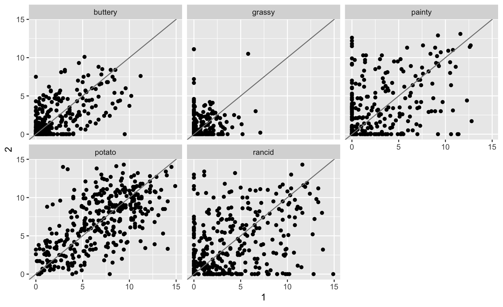

The tidyr package
What is tidy data?
Happy families are all alike; every unhappy family is unhappy in its own way.
Leo Tolstoy
- Resource: follow along tidyr vignette
- available as
vignette("tidy-data", package="tidyr") - vignette is version of the tidy data paper with updated code
Outline
- Different sources of messiness
- Key-Value pairs
tidyr:spreadandgather
Data is usually in a spreadsheet format, but …
there’s different ways of encoding the same information:
Option #1
## name treatmenta treatmentb
## 1 John Smith NA 18
## 2 Jane Doe 4 1
## 3 Mary Johnson 6 7Option #2
## treatment John.Smith Jane.Doe Mary.Johnson
## 1 a NA 4 6
## 2 b 18 1 7Neither #1 nor #2 are “clean” versions of the data: observed information is part of the data structure; some implicit information is assumed
Sources of Messiness
- Column headers are values, not variable names.
e.g. treatmenta, treatmentb - Multiple variables are stored in one column.
e.g. Fall 2015, Spring 2016 or “1301 8th St SE, Orange City, Iowa 51041 (42.99755, -96.04149)”, “2102 Durant, Harlan, Iowa 51537 (41.65672, -95.33780)” - Multiple observational units are stored in the same table.
- A single observational unit is stored in multiple tables.
Tidy data
- Each variable forms one column.
- Each observation forms one row.
- Each type of observational unit forms a table.
Clean version of the example
## treatment patient score
## 1 a John Smith NA
## 2 b John Smith 18
## 3 a Jane Doe 4
## 4 b Jane Doe 1
## 5 a Mary Johnson 6
## 6 b Mary Johnson 7treatmentandpatientuniquely describe a single row in the dataset.treatmentandpatientare key variables,scoreis a measurement variable- this makes
treatment-patientandscorea key-value pair
Key-value pairs (KVP)
Key-Value pairs (KVP) - also attribute-value, field-value, name-value: abstract data representation that allows a lot of flexibility
One way of telling whether a data set is tidy is to check that all keys for a value are aligned in one row:
 |
 |
| Untidy data | Tidy data |
Tidying data - Plan of attack
Very few functions are needed for tidying data:
- Messy (1):
tidyrfunctionsgatherandspread.
gather (data, key, value, ...): take multiple columns and collapse into key-value pairs
spread (data, key, value, fill = NA): spread a key-value pair across multiple columns. - Messy (2):
tidyrfunctionseparate (data, col, into, sep = "[^[:alnum:]]+"): separate one column into multiple columns - Messy (3):
dplyr- some combination of the functions discussed previously - Messy (4):
dplyrfunctionalityjoin(and friends) to combine multiple data sets
French fries data
- data from sensory experiment conducted at Iowa State University in 2004
- investigators were interested in comparing effects of three different fryer oils on taste of fries
## time treatment subject rep potato buttery grassy rancid painty
## 61 1 1 3 1 2.9 0.0 0.0 0.0 5.5
## 25 1 1 3 2 14.0 0.0 0.0 1.1 0.0
## 62 1 1 10 1 11.0 6.4 0.0 0.0 0.0
## 26 1 1 10 2 9.9 5.9 2.9 2.2 0.0
## 63 1 1 15 1 1.2 0.1 0.0 1.1 5.1
## 27 1 1 15 2 8.8 3.0 3.6 1.5 2.3Gather
## time treatment subject rep scale score
## 1 1 1 3 1 potato 2.9
## 2 1 1 3 2 potato 14.0
## 3 1 1 10 1 potato 11.0
## 4 1 1 10 2 potato 9.9
## 5 1 1 15 1 potato 1.2
## 6 1 1 15 2 potato 8.8
## 7 1 1 16 1 potato 9.0
## 8 1 1 16 2 potato 8.2
## 9 1 1 19 1 potato 7.0
## 10 1 1 19 2 potato 13.0
## 11 1 1 31 1 potato 12.2
## 12 1 1 31 2 potato 12.8
## 13 1 1 51 1 potato 8.6
## 14 1 1 51 2 potato 10.2
## 15 1 1 52 1 potato 5.8
## 16 1 1 52 2 potato 7.0
## 17 1 1 63 1 potato 8.3
## 18 1 1 63 2 potato 2.9
## 19 1 1 78 1 potato 4.9
## 20 1 1 78 2 potato 8.8
## 21 1 1 79 1 potato 5.1
## 22 1 1 79 2 potato 10.4
## 23 1 1 86 1 potato 5.2
## 24 1 1 86 2 potato 3.0
## 25 1 2 3 1 potato 13.9
## 26 1 2 3 2 potato 13.4
## 27 1 2 10 1 potato 9.3
## 28 1 2 10 2 potato 11.0
## 29 1 2 15 1 potato 9.0
## 30 1 2 15 2 potato 7.0
## 31 1 2 16 1 potato 4.6
## 32 1 2 16 2 potato 5.0
## 33 1 2 19 1 potato 9.5
## 34 1 2 19 2 potato 11.3
## 35 1 2 31 1 potato 10.6
## 36 1 2 31 2 potato 11.4
## 37 1 2 51 1 potato 11.7
## 38 1 2 51 2 potato 8.5
## 39 1 2 52 1 potato 10.4
## 40 1 2 52 2 potato 7.1
## 41 1 2 63 1 potato 13.1
## 42 1 2 63 2 potato 7.7
## 43 1 2 78 1 potato 9.1
## 44 1 2 78 2 potato 4.3
## 45 1 2 79 1 potato 8.3
## 46 1 2 79 2 potato 5.1
## 47 1 2 86 1 potato 6.1
## 48 1 2 86 2 potato 3.2
## 49 1 3 3 1 potato 14.1
## 50 1 3 3 2 potato 9.5
## 51 1 3 10 1 potato 11.3
## 52 1 3 10 2 potato 10.1
## 53 1 3 15 1 potato 5.8
## 54 1 3 15 2 potato 8.0
## 55 1 3 16 1 potato 7.8
## 56 1 3 16 2 potato 5.2
## 57 1 3 19 1 potato 7.2
## 58 1 3 19 2 potato 11.1
## 59 1 3 31 1 potato 7.1
## 60 1 3 31 2 potato 12.5
## 61 1 3 51 1 potato 13.6
## 62 1 3 51 2 potato 8.5
## 63 1 3 52 1 potato 10.6
## 64 1 3 52 2 potato 10.3
## 65 1 3 63 1 potato 8.6
## 66 1 3 63 2 potato 10.3
## 67 1 3 78 1 potato 7.4
## 68 1 3 78 2 potato 5.0
## 69 1 3 79 1 potato 8.8
## 70 1 3 79 2 potato 8.3
## 71 1 3 86 1 potato 6.7
## 72 1 3 86 2 potato 7.9
## 73 2 1 3 1 potato 9.0
## 74 2 1 3 2 potato 5.5
## 75 2 1 10 1 potato 8.0
## 76 2 1 10 2 potato 10.2
## 77 2 1 15 1 potato 5.3
## 78 2 1 15 2 potato 7.3
## 79 2 1 16 1 potato 4.1
## 80 2 1 16 2 potato 11.0
## 81 2 1 19 1 potato 8.7
## 82 2 1 19 2 potato 11.0
## 83 2 1 31 1 potato 9.7
## 84 2 1 31 2 potato 4.1
## 85 2 1 51 1 potato 9.4
## 86 2 1 51 2 potato 14.3
## 87 2 1 52 1 potato 6.5
## 88 2 1 52 2 potato 8.2
## 89 2 1 63 1 potato 8.9
## 90 2 1 63 2 potato 8.7
## 91 2 1 78 1 potato 3.3
## 92 2 1 78 2 potato 4.5
## 93 2 1 79 1 potato 5.9
## 94 2 1 79 2 potato 6.0
## 95 2 1 86 1 potato 6.7
## 96 2 1 86 2 potato 5.9
## 97 2 2 3 1 potato 14.1
## 98 2 2 3 2 potato 3.3
## 99 2 2 10 1 potato 11.2
## 100 2 2 10 2 potato 8.2
## 101 2 2 15 1 potato 12.7
## 102 2 2 15 2 potato 3.9
## 103 2 2 16 1 potato 5.4
## 104 2 2 16 2 potato 2.6
## 105 2 2 19 1 potato 11.2
## 106 2 2 19 2 potato 4.3
## 107 2 2 31 1 potato 10.6
## 108 2 2 31 2 potato 6.6
## 109 2 2 51 1 potato 9.2
## 110 2 2 51 2 potato 11.6
## 111 2 2 52 1 potato 9.7
## 112 2 2 52 2 potato 10.2
## 113 2 2 63 1 potato 12.2
## 114 2 2 63 2 potato 10.7
## 115 2 2 78 1 potato 6.7
## 116 2 2 78 2 potato 7.0
## 117 2 2 79 1 potato 10.9
## 118 2 2 79 2 potato 10.4
## 119 2 2 86 1 potato 3.9
## 120 2 2 86 2 potato 8.3
## 121 2 3 3 1 potato 6.5
## 122 2 3 3 2 potato 13.8
## 123 2 3 10 1 potato 10.3
## 124 2 3 10 2 potato 10.2
## 125 2 3 15 1 potato 6.3
## 126 2 3 15 2 potato 10.4
## 127 2 3 16 1 potato 8.2
## 128 2 3 16 2 potato 1.5
## 129 2 3 19 1 potato 11.4
## 130 2 3 19 2 potato 6.0
## 131 2 3 31 1 potato 10.5
## 132 2 3 31 2 potato 8.1
## 133 2 3 51 1 potato 12.2
## 134 2 3 51 2 potato 12.1
## 135 2 3 52 1 potato 10.7
## 136 2 3 52 2 potato 9.1
## 137 2 3 63 1 potato 6.2
## 138 2 3 63 2 potato 6.5
## 139 2 3 78 1 potato 2.7
## 140 2 3 78 2 potato 4.4
## 141 2 3 79 1 potato 7.7
## 142 2 3 79 2 potato 6.7
## 143 2 3 86 1 potato 7.7
## 144 2 3 86 2 potato 4.0
## 145 3 1 3 1 potato 11.8
## 146 3 1 3 2 potato 7.8
## 147 3 1 10 1 potato 9.3
## 148 3 1 10 2 potato 9.1
## 149 3 1 15 1 potato 3.4
## 150 3 1 15 2 potato 5.7
## 151 3 1 16 1 potato 1.5
## 152 3 1 16 2 potato 4.2
## 153 3 1 19 1 potato 11.2
## 154 3 1 19 2 potato 11.8
## 155 3 1 31 1 potato 8.2
## 156 3 1 31 2 potato 8.8
## 157 3 1 51 1 potato 6.1
## 158 3 1 51 2 potato 10.1
## 159 3 1 52 1 potato 6.6
## 160 3 1 52 2 potato 10.4
## 161 3 1 63 1 potato 8.9
## 162 3 1 63 2 potato 10.8
## 163 3 1 78 1 potato 2.5
## 164 3 1 78 2 potato 6.3
## 165 3 1 79 1 potato 8.6
## 166 3 1 79 2 potato 3.8
## 167 3 1 86 1 potato 9.0
## 168 3 1 86 2 potato 10.6
## 169 3 2 3 1 potato 4.0
## 170 3 2 3 2 potato 9.9
## 171 3 2 10 1 potato 10.1
## 172 3 2 10 2 potato 9.0
## 173 3 2 15 1 potato 8.3
## 174 3 2 15 2 potato 6.1
## 175 3 2 16 1 potato 2.6
## 176 3 2 16 2 potato 9.6
## 177 3 2 19 1 potato 4.8
## 178 3 2 19 2 potato 5.6
## 179 3 2 31 1 potato 10.2
## 180 3 2 31 2 potato 10.0
## 181 3 2 51 1 potato 6.6
## 182 3 2 51 2 potato 9.3
## 183 3 2 52 1 potato 7.2
## 184 3 2 52 2 potato 8.2
## 185 3 2 63 1 potato 12.8
## 186 3 2 63 2 potato 10.7
## 187 3 2 78 1 potato 7.5
## 188 3 2 78 2 potato 2.4
## 189 3 2 79 1 potato 8.4
## 190 3 2 79 2 potato 5.4
## 191 3 2 86 1 potato 9.4
## 192 3 2 86 2 potato 5.2
## 193 3 3 3 1 potato 7.3
## 194 3 3 3 2 potato 7.3
## 195 3 3 10 1 potato 9.6
## 196 3 3 10 2 potato 11.0
## 197 3 3 15 1 potato 5.2
## 198 3 3 15 2 potato 6.5
## 199 3 3 16 1 potato 10.6
## 200 3 3 16 2 potato 8.6
## 201 3 3 19 1 potato 6.4
## 202 3 3 19 2 potato 9.7
## 203 3 3 31 1 potato 7.6
## 204 3 3 31 2 potato 8.7
## 205 3 3 51 1 potato 9.1
## 206 3 3 51 2 potato 9.3
## 207 3 3 52 1 potato 8.1
## 208 3 3 52 2 potato 10.2
## 209 3 3 63 1 potato 9.0
## 210 3 3 63 2 potato 9.1
## 211 3 3 78 1 potato 9.2
## 212 3 3 78 2 potato 2.0
## 213 3 3 79 1 potato 7.5
## 214 3 3 79 2 potato 8.7
## 215 3 3 86 1 potato 5.2
## 216 3 3 86 2 potato 5.7
## 217 4 1 3 1 potato 13.6
## 218 4 1 3 2 potato 5.3
## 219 4 1 10 1 potato 8.1
## 220 4 1 10 2 potato 9.1
## 221 4 1 15 1 potato 8.1
## 222 4 1 15 2 potato 7.2
## 223 4 1 16 1 potato 6.8
## 224 4 1 16 2 potato 10.5
## 225 4 1 19 1 potato 8.9
## 226 4 1 19 2 potato 6.9
## 227 4 1 31 1 potato 11.7
## 228 4 1 31 2 potato 3.4
## 229 4 1 51 1 potato 9.3
## 230 4 1 51 2 potato 13.2
## 231 4 1 52 1 potato 8.5
## 232 4 1 52 2 potato 8.9
## 233 4 1 63 1 potato 10.4
## 234 4 1 63 2 potato 11.4
## 235 4 1 78 1 potato 9.4
## 236 4 1 78 2 potato 3.2
## 237 4 1 79 1 potato 8.4
## 238 4 1 79 2 potato 7.0
## 239 4 1 86 1 potato 8.3
## 240 4 1 86 2 potato 4.1
## 241 4 2 3 1 potato 12.9
## 242 4 2 3 2 potato 12.7
## 243 4 2 10 1 potato 8.4
## 244 4 2 10 2 potato 9.0
## 245 4 2 15 1 potato 5.1
## 246 4 2 15 2 potato 8.7
## 247 4 2 16 1 potato 3.8
## 248 4 2 16 2 potato 7.4
## 249 4 2 19 1 potato 10.5
## 250 4 2 19 2 potato 12.9
## 251 4 2 31 1 potato 6.8
## 252 4 2 31 2 potato 10.5
## 253 4 2 51 1 potato 10.9
## 254 4 2 51 2 potato 13.2
## 255 4 2 52 1 potato 6.8
## 256 4 2 52 2 potato 8.3
## 257 4 2 63 1 potato 8.0
## 258 4 2 63 2 potato 11.6
## 259 4 2 78 1 potato 3.9
## 260 4 2 78 2 potato 1.1
## 261 4 2 79 1 potato 8.5
## 262 4 2 79 2 potato 10.7
## 263 4 2 86 1 potato 2.7
## 264 4 2 86 2 potato 2.5
## 265 4 3 3 1 potato 1.5
## 266 4 3 3 2 potato 5.9
## 267 4 3 10 1 potato 10.3
## 268 4 3 10 2 potato 9.5
## 269 4 3 15 1 potato 5.2
## 270 4 3 15 2 potato 7.0
## 271 4 3 16 1 potato 12.7
## 272 4 3 16 2 potato 6.8
## 273 4 3 19 1 potato 5.8
## 274 4 3 19 2 potato 4.7
## 275 4 3 31 1 potato 11.0
## 276 4 3 31 2 potato 9.2
## 277 4 3 51 1 potato 7.0
## 278 4 3 51 2 potato 10.3
## 279 4 3 52 1 potato 3.3
## 280 4 3 52 2 potato 5.2
## 281 4 3 63 1 potato 5.6
## 282 4 3 63 2 potato 5.8
## 283 4 3 78 1 potato 7.7
## 284 4 3 78 2 potato 3.5
## 285 4 3 79 1 potato 5.7
## 286 4 3 79 2 potato 9.2
## 287 4 3 86 1 potato 1.4
## 288 4 3 86 2 potato 2.5
## 289 5 1 3 1 potato 14.0
## 290 5 1 3 2 potato 12.9
## 291 5 1 10 1 potato 9.6
## 292 5 1 10 2 potato 8.7
## 293 5 1 15 1 potato 4.1
## 294 5 1 15 2 potato 3.2
## 295 5 1 16 1 potato 10.1
## 296 5 1 16 2 potato 10.5
## 297 5 1 19 1 potato 5.3
## 298 5 1 19 2 potato 9.9
## 299 5 1 31 1 potato 11.2
## 300 5 1 31 2 potato 9.9
## 301 5 1 51 1 potato 9.2
## 302 5 1 51 2 potato 12.5
## 303 5 1 52 1 potato 4.1
## 304 5 1 52 2 potato 6.4
## 305 5 1 63 1 potato 9.8
## 306 5 1 63 2 potato 4.2
## 307 5 1 78 1 potato 3.3
## 308 5 1 78 2 potato 5.0
## 309 5 1 79 1 potato 8.0
## 310 5 1 79 2 potato 8.1
## 311 5 1 86 1 potato 2.2
## 312 5 1 86 2 potato 3.6
## 313 5 2 3 1 potato 3.4
## 314 5 2 3 2 potato 13.7
## 315 5 2 10 1 potato 9.2
## 316 5 2 10 2 potato 8.5
## 317 5 2 15 1 potato 4.1
## 318 5 2 15 2 potato 1.5
## 319 5 2 16 1 potato 13.4
## 320 5 2 16 2 potato 11.0
## 321 5 2 19 1 potato 7.6
## 322 5 2 19 2 potato 5.5
## 323 5 2 31 1 potato 5.4
## 324 5 2 31 2 potato 6.5
## 325 5 2 51 1 potato 8.0
## 326 5 2 51 2 potato 12.7
## 327 5 2 52 1 potato 4.9
## 328 5 2 52 2 potato 5.9
## 329 5 2 63 1 potato 4.4
## 330 5 2 63 2 potato 7.5
## 331 5 2 78 1 potato 5.6
## 332 5 2 78 2 potato 2.4
## 333 5 2 79 1 potato 10.1
## 334 5 2 79 2 potato 6.1
## 335 5 2 86 1 potato 5.8
## 336 5 2 86 2 potato 3.2
## 337 5 3 3 1 potato 4.0
## 338 5 3 3 2 potato 10.1
## 339 5 3 10 1 potato 10.7
## 340 5 3 10 2 potato 9.0
## 341 5 3 15 1 potato NA
## 342 5 3 15 2 potato 3.6
## 343 5 3 16 1 potato 5.2
## 344 5 3 16 2 potato 6.7
## 345 5 3 19 1 potato 10.2
## 346 5 3 19 2 potato 7.1
## 347 5 3 31 1 potato 12.3
## 348 5 3 31 2 potato 11.5
## 349 5 3 51 1 potato 10.6
## 350 5 3 51 2 potato 7.5
## 351 5 3 52 1 potato 6.3
## 352 5 3 52 2 potato 4.0
## 353 5 3 63 1 potato 9.1
## 354 5 3 63 2 potato 9.0
## 355 5 3 78 1 potato 3.4
## 356 5 3 78 2 potato 1.5
## 357 5 3 79 1 potato 7.9
## 358 5 3 79 2 potato 9.4
## 359 5 3 86 1 potato 5.4
## 360 5 3 86 2 potato 3.6
## 361 6 1 3 1 potato 0.4
## 362 6 1 3 2 potato 3.3
## 363 6 1 10 1 potato 13.2
## 364 6 1 10 2 potato 10.0
## 365 6 1 15 1 potato 0.0
## 366 6 1 15 2 potato 2.6
## 367 6 1 16 1 potato 4.9
## 368 6 1 16 2 potato 8.9
## 369 6 1 19 1 potato 12.2
## 370 6 1 19 2 potato 11.1
## 371 6 1 31 1 potato 12.0
## 372 6 1 31 2 potato 8.2
## 373 6 1 51 1 potato 10.2
## 374 6 1 51 2 potato 8.5
## 375 6 1 52 1 potato 3.8
## 376 6 1 52 2 potato 3.7
## 377 6 1 63 1 potato 3.1
## 378 6 1 63 2 potato 4.2
## 379 6 1 78 1 potato 1.5
## 380 6 1 78 2 potato 1.1
## 381 6 1 79 1 potato 11.4
## 382 6 1 79 2 potato 7.9
## 383 6 1 86 1 potato 1.0
## 384 6 1 86 2 potato 2.7
## 385 6 2 3 1 potato 7.3
## 386 6 2 3 2 potato 1.8
## 387 6 2 10 1 potato 10.7
## 388 6 2 10 2 potato 11.4
## 389 6 2 15 1 potato 3.4
## 390 6 2 15 2 potato 4.6
## 391 6 2 16 1 potato 11.8
## 392 6 2 16 2 potato 10.8
## 393 6 2 19 1 potato 7.6
## 394 6 2 19 2 potato 11.1
## 395 6 2 31 1 potato 11.4
## 396 6 2 31 2 potato 6.9
## 397 6 2 51 1 potato 10.6
## 398 6 2 51 2 potato 6.3
## 399 6 2 52 1 potato 6.3
## 400 6 2 52 2 potato 5.6
## 401 6 2 63 1 potato 5.2
## 402 6 2 63 2 potato 6.1
## 403 6 2 78 1 potato 3.4
## 404 6 2 78 2 potato 1.3
## 405 6 2 79 1 potato 5.7
## 406 6 2 79 2 potato 9.4
## 407 6 2 86 1 potato 6.4
## 408 6 2 86 2 potato 3.3
## 409 6 3 3 1 potato 2.2
## 410 6 3 3 2 potato 5.3
## 411 6 3 10 1 potato 10.8
## 412 6 3 10 2 potato 11.5
## 413 6 3 15 1 potato 1.0
## 414 6 3 15 2 potato 4.3
## 415 6 3 16 1 potato 5.3
## 416 6 3 16 2 potato 12.1
## 417 6 3 19 1 potato 10.6
## 418 6 3 19 2 potato 6.1
## 419 6 3 31 1 potato 8.3
## 420 6 3 31 2 potato 8.1
## 421 6 3 51 1 potato 12.4
## 422 6 3 51 2 potato 8.5
## 423 6 3 52 1 potato 4.4
## 424 6 3 52 2 potato 3.9
## 425 6 3 63 1 potato 6.5
## 426 6 3 63 2 potato 11.4
## 427 6 3 78 1 potato 5.5
## 428 6 3 78 2 potato 4.3
## 429 6 3 79 1 potato 8.4
## 430 6 3 79 2 potato 8.8
## 431 6 3 86 1 potato 2.2
## 432 6 3 86 2 potato 4.1
## 433 7 1 3 1 potato 2.9
## 434 7 1 3 2 potato 0.8
## 435 7 1 10 1 potato 11.0
## 436 7 1 10 2 potato 8.7
## 437 7 1 15 1 potato 1.2
## 438 7 1 15 2 potato 2.9
## 439 7 1 16 1 potato 9.0
## 440 7 1 16 2 potato 7.2
## 441 7 1 19 1 potato 7.0
## 442 7 1 19 2 potato 5.5
## 443 7 1 31 1 potato 12.2
## 444 7 1 31 2 potato 9.4
## 445 7 1 51 1 potato 8.6
## 446 7 1 51 2 potato 14.1
## 447 7 1 52 1 potato 5.8
## 448 7 1 52 2 potato 3.2
## 449 7 1 63 1 potato 8.3
## 450 7 1 63 2 potato 6.2
## 451 7 1 78 1 potato 4.9
## 452 7 1 78 2 potato 0.5
## 453 7 1 79 1 potato 5.1
## 454 7 1 79 2 potato 9.9
## 455 7 1 86 1 potato 5.2
## 456 7 1 86 2 potato 1.2
## 457 7 2 3 1 potato 1.5
## 458 7 2 3 2 potato 3.5
## 459 7 2 10 1 potato 10.5
## 460 7 2 10 2 potato 9.6
## 461 7 2 15 1 potato 0.4
## 462 7 2 15 2 potato 1.7
## 463 7 2 16 1 potato 3.7
## 464 7 2 16 2 potato 8.1
## 465 7 2 19 1 potato 6.5
## 466 7 2 19 2 potato 9.3
## 467 7 2 31 1 potato 6.1
## 468 7 2 31 2 potato 7.0
## 469 7 2 51 1 potato 7.3
## 470 7 2 51 2 potato 12.4
## 471 7 2 52 1 potato 4.1
## 472 7 2 52 2 potato 4.2
## 473 7 2 63 1 potato 10.4
## 474 7 2 63 2 potato 9.8
## 475 7 2 78 1 potato 1.3
## 476 7 2 78 2 potato 1.4
## 477 7 2 79 1 potato 7.3
## 478 7 2 79 2 potato 6.6
## 479 7 2 86 1 potato 1.2
## 480 7 2 86 2 potato 3.6
## 481 7 3 3 1 potato 0.9
## 482 7 3 3 2 potato 2.6
## 483 7 3 10 1 potato 7.1
## 484 7 3 10 2 potato 9.5
## 485 7 3 15 1 potato 1.2
## 486 7 3 15 2 potato 1.0
## 487 7 3 16 1 potato 12.7
## 488 7 3 16 2 potato 10.8
## 489 7 3 19 1 potato 8.6
## 490 7 3 19 2 potato 9.0
## 491 7 3 31 1 potato 6.4
## 492 7 3 31 2 potato 12.0
## 493 7 3 51 1 potato 9.4
## 494 7 3 51 2 potato 8.7
## 495 7 3 52 1 potato 6.4
## 496 7 3 52 2 potato 5.7
## 497 7 3 63 1 potato 9.5
## 498 7 3 63 2 potato 10.7
## 499 7 3 78 1 potato 4.3
## 500 7 3 78 2 potato 0.2
## 501 7 3 79 1 potato 7.2
## 502 7 3 79 2 potato 6.5
## 503 7 3 86 1 potato 3.0
## 504 7 3 86 2 potato 2.4
## 505 8 1 3 1 potato 3.5
## 506 8 1 3 2 potato 0.6
## 507 8 1 10 1 potato 10.2
## 508 8 1 10 2 potato 8.6
## 509 8 1 15 1 potato 1.9
## 510 8 1 15 2 potato 0.6
## 511 8 1 16 1 potato 2.4
## 512 8 1 16 2 potato 0.9
## 513 8 1 19 1 potato 5.4
## 514 8 1 19 2 potato 11.0
## 515 8 1 31 1 potato 4.0
## 516 8 1 31 2 potato 6.6
## 517 8 1 51 1 potato 14.9
## 518 8 1 51 2 potato 11.5
## 519 8 1 52 1 potato 2.1
## 520 8 1 52 2 potato 1.7
## 521 8 1 63 1 potato 5.9
## 522 8 1 63 2 potato 3.8
## 523 8 1 78 1 potato 1.5
## 524 8 1 78 2 potato 1.6
## 525 8 1 79 1 potato 10.5
## 526 8 1 79 2 potato 9.8
## 527 8 1 86 1 potato 3.8
## 528 8 1 86 2 potato 1.4
## 529 8 2 3 1 potato 0.9
## 530 8 2 3 2 potato 0.5
## 531 8 2 10 1 potato 10.9
## 532 8 2 10 2 potato 10.3
## 533 8 2 15 1 potato 3.2
## 534 8 2 15 2 potato 2.3
## 535 8 2 16 1 potato 4.5
## 536 8 2 16 2 potato 5.3
## 537 8 2 19 1 potato 11.2
## 538 8 2 19 2 potato 8.7
## 539 8 2 31 1 potato 7.8
## 540 8 2 31 2 potato 9.9
## 541 8 2 51 1 potato 13.8
## 542 8 2 51 2 potato 8.5
## 543 8 2 52 1 potato 3.9
## 544 8 2 52 2 potato 0.0
## 545 8 2 63 1 potato 3.9
## 546 8 2 63 2 potato 5.7
## 547 8 2 78 1 potato 4.0
## 548 8 2 78 2 potato 2.1
## 549 8 2 79 1 potato 8.2
## 550 8 2 79 2 potato 5.7
## 551 8 2 86 1 potato 1.3
## 552 8 2 86 2 potato 2.8
## 553 8 3 3 1 potato 1.5
## 554 8 3 3 2 potato 0.5
## 555 8 3 10 1 potato 10.0
## 556 8 3 10 2 potato 10.9
## 557 8 3 15 1 potato 0.6
## 558 8 3 15 2 potato 0.2
## 559 8 3 16 1 potato 2.2
## 560 8 3 16 2 potato 3.3
## 561 8 3 19 1 potato 11.1
## 562 8 3 19 2 potato 11.5
## 563 8 3 31 1 potato 4.2
## 564 8 3 31 2 potato 8.1
## 565 8 3 51 1 potato 14.5
## 566 8 3 51 2 potato 14.0
## 567 8 3 52 1 potato 0.0
## 568 8 3 52 2 potato 3.2
## 569 8 3 63 1 potato 7.8
## 570 8 3 63 2 potato 8.6
## 571 8 3 78 1 potato 0.8
## 572 8 3 78 2 potato 3.2
## 573 8 3 79 1 potato 6.8
## 574 8 3 79 2 potato 5.7
## 575 8 3 86 1 potato 1.4
## 576 8 3 86 2 potato 1.4
## 577 9 1 3 1 potato 1.1
## 578 9 1 3 2 potato 2.5
## 579 9 1 10 1 potato 10.5
## 580 9 1 10 2 potato 11.2
## 581 9 1 15 1 potato 0.2
## 582 9 1 15 2 potato 1.7
## 583 9 1 16 1 potato 5.4
## 584 9 1 16 2 potato 8.5
## 585 9 1 19 1 potato 9.6
## 586 9 1 19 2 potato 9.0
## 587 9 1 51 1 potato 10.2
## 588 9 1 51 2 potato 12.7
## 589 9 1 52 1 potato 5.1
## 590 9 1 52 2 potato 3.0
## 591 9 1 63 1 potato 1.7
## 592 9 1 63 2 potato 5.3
## 593 9 1 78 1 potato 3.5
## 594 9 1 78 2 potato 1.0
## 595 9 1 79 1 potato 10.1
## 596 9 1 79 2 potato 9.1
## 597 9 2 3 1 potato 2.7
## 598 9 2 3 2 potato 1.8
## 599 9 2 10 1 potato 10.4
## 600 9 2 10 2 potato 11.0
## 601 9 2 15 1 potato 0.2
## 602 9 2 15 2 potato 0.0
## 603 9 2 16 1 potato 8.5
## 604 9 2 16 2 potato 3.8
## 605 9 2 19 1 potato 11.1
## 606 9 2 19 2 potato 6.2
## 607 9 2 51 1 potato 7.3
## 608 9 2 51 2 potato 10.6
## 609 9 2 52 1 potato 1.8
## 610 9 2 52 2 potato 1.6
## 611 9 2 63 1 potato 1.8
## 612 9 2 63 2 potato 9.1
## 613 9 2 78 1 potato 2.0
## 614 9 2 78 2 potato 3.4
## 615 9 2 79 1 potato 6.7
## 616 9 2 79 2 potato 9.4
## 617 9 3 3 1 potato 1.6
## 618 9 3 3 2 potato 0.7
## 619 9 3 10 1 potato 10.2
## 620 9 3 10 2 potato 7.3
## 621 9 3 15 1 potato 0.7
## 622 9 3 15 2 potato 1.5
## 623 9 3 16 1 potato 7.5
## 624 9 3 16 2 potato 3.6
## 625 9 3 19 1 potato 7.9
## 626 9 3 19 2 potato 9.1
## 627 9 3 51 1 potato 8.2
## 628 9 3 51 2 potato 8.9
## 629 9 3 52 1 potato 1.1
## 630 9 3 52 2 potato 4.0
## 631 9 3 63 1 potato 7.5
## 632 9 3 63 2 potato 6.0
## 633 9 3 78 1 potato 7.9
## 634 9 3 78 2 potato 0.0
## 635 9 3 79 1 potato 7.8
## 636 9 3 79 2 potato 8.1
## 637 10 1 10 1 potato 10.6
## 638 10 1 10 2 potato 12.1
## 639 10 1 15 1 potato 0.1
## 640 10 1 15 2 potato 1.7
## 641 10 1 16 1 potato 3.0
## 642 10 1 16 2 potato 3.8
## 643 10 1 19 1 potato 11.4
## 644 10 1 19 2 potato 11.8
## 645 10 1 31 1 potato 9.5
## 646 10 1 31 2 potato 5.3
## 647 10 1 51 1 potato 7.6
## 648 10 1 51 2 potato 12.3
## 649 10 1 52 1 potato 0.4
## 650 10 1 52 2 potato 0.0
## 651 10 1 63 1 potato 6.5
## 652 10 1 63 2 potato 6.2
## 653 10 1 78 1 potato 1.2
## 654 10 1 78 2 potato 4.4
## 655 10 1 86 1 potato 0.7
## 656 10 1 86 2 potato 0.7
## 657 10 2 10 1 potato 10.7
## 658 10 2 10 2 potato 10.5
## 659 10 2 15 1 potato 4.8
## 660 10 2 15 2 potato 1.1
## 661 10 2 16 1 potato 4.2
## 662 10 2 16 2 potato 2.9
## 663 10 2 19 1 potato 7.0
## 664 10 2 19 2 potato 10.9
## 665 10 2 31 1 potato 4.6
## 666 10 2 31 2 potato 2.3
## 667 10 2 51 1 potato 11.3
## 668 10 2 51 2 potato 9.9
## 669 10 2 52 1 potato 0.3
## 670 10 2 52 2 potato 3.8
## 671 10 2 63 1 potato 8.6
## 672 10 2 63 2 potato 9.0
## 673 10 2 78 1 potato 5.2
## 674 10 2 78 2 potato 1.5
## 675 10 2 86 1 potato 2.0
## 676 10 2 86 2 potato 1.0
## 677 10 3 10 1 potato 11.3
## 678 10 3 10 2 potato 10.0
## 679 10 3 15 1 potato 2.5
## 680 10 3 15 2 potato 4.3
## 681 10 3 16 1 potato 3.9
## 682 10 3 16 2 potato 2.5
## 683 10 3 19 1 potato 9.1
## 684 10 3 19 2 potato 12.2
## 685 10 3 31 1 potato 6.5
## 686 10 3 31 2 potato 10.4
## 687 10 3 51 1 potato 8.0
## 688 10 3 51 2 potato 11.6
## 689 10 3 52 1 potato 1.2
## 690 10 3 52 2 potato 1.8
## 691 10 3 63 1 potato 7.0
## 692 10 3 63 2 potato 7.0
## 693 10 3 78 1 potato 3.7
## 694 10 3 78 2 potato 3.3
## 695 10 3 86 1 potato 2.5
## 696 10 3 86 2 potato 2.5
## 697 1 1 3 1 buttery 0.0
## 698 1 1 3 2 buttery 0.0
## 699 1 1 10 1 buttery 6.4
## 700 1 1 10 2 buttery 5.9
## 701 1 1 15 1 buttery 0.1
## 702 1 1 15 2 buttery 3.0
## 703 1 1 16 1 buttery 2.6
## 704 1 1 16 2 buttery 4.4
## 705 1 1 19 1 buttery 3.2
## 706 1 1 19 2 buttery 0.0
## 707 1 1 31 1 buttery 0.0
## 708 1 1 31 2 buttery 2.5
## 709 1 1 51 1 buttery 1.7
## 710 1 1 51 2 buttery 4.2
## 711 1 1 52 1 buttery 0.0
## 712 1 1 52 2 buttery 3.1
## 713 1 1 63 1 buttery 0.0
## 714 1 1 63 2 buttery 0.0
## 715 1 1 78 1 buttery 1.2
## 716 1 1 78 2 buttery 0.6
## 717 1 1 79 1 buttery 0.0
## 718 1 1 79 2 buttery 0.4
## 719 1 1 86 1 buttery 1.2
## 720 1 1 86 2 buttery 2.6
## 721 1 2 3 1 buttery 0.0
## 722 1 2 3 2 buttery 0.1
## 723 1 2 10 1 buttery 5.2
## 724 1 2 10 2 buttery 10.1
## 725 1 2 15 1 buttery 3.6
## 726 1 2 15 2 buttery 2.7
## 727 1 2 16 1 buttery 3.5
## 728 1 2 16 2 buttery 0.6
## 729 1 2 19 1 buttery 2.5
## 730 1 2 19 2 buttery 1.1
## 731 1 2 31 1 buttery 0.7
## 732 1 2 31 2 buttery 3.2
## 733 1 2 51 1 buttery 4.1
## 734 1 2 51 2 buttery 1.8
## 735 1 2 52 1 buttery 4.4
## 736 1 2 52 2 buttery 1.1
## 737 1 2 63 1 buttery 0.3
## 738 1 2 63 2 buttery 0.0
## 739 1 2 78 1 buttery 0.7
## 740 1 2 78 2 buttery 0.1
## 741 1 2 79 1 buttery 0.8
## 742 1 2 79 2 buttery 4.5
## 743 1 2 86 1 buttery 4.4
## 744 1 2 86 2 buttery 4.3
## 745 1 3 3 1 buttery 0.0
## 746 1 3 3 2 buttery 0.0
## 747 1 3 10 1 buttery 10.2
## 748 1 3 10 2 buttery 5.0
## 749 1 3 15 1 buttery 1.0
## 750 1 3 15 2 buttery 3.6
## 751 1 3 16 1 buttery 0.2
## 752 1 3 16 2 buttery 1.1
## 753 1 3 19 1 buttery 3.4
## 754 1 3 19 2 buttery 2.8
## 755 1 3 31 1 buttery 0.7
## 756 1 3 31 2 buttery 3.7
## 757 1 3 51 1 buttery 1.4
## 758 1 3 51 2 buttery 4.7
## 759 1 3 52 1 buttery 2.0
## 760 1 3 52 2 buttery 4.7
## 761 1 3 63 1 buttery 0.4
## 762 1 3 63 2 buttery 0.0
## 763 1 3 78 1 buttery 1.6
## 764 1 3 78 2 buttery 0.1
## 765 1 3 79 1 buttery 0.0
## 766 1 3 79 2 buttery 0.0
## 767 1 3 86 1 buttery 4.5
## 768 1 3 86 2 buttery 7.0
## 769 2 1 3 1 buttery 0.3
## 770 2 1 3 2 buttery 0.5
## 771 2 1 10 1 buttery 3.1
## 772 2 1 10 2 buttery 8.4
## 773 2 1 15 1 buttery 1.4
## 774 2 1 15 2 buttery 2.3
## 775 2 1 16 1 buttery 5.1
## 776 2 1 16 2 buttery 3.8
## 777 2 1 19 1 buttery 0.0
## 778 2 1 19 2 buttery 7.5
## 779 2 1 31 1 buttery 3.3
## 780 2 1 31 2 buttery 0.0
## 781 2 1 51 1 buttery 6.7
## 782 2 1 51 2 buttery 1.9
## 783 2 1 52 1 buttery 1.6
## 784 2 1 52 2 buttery 1.0
## 785 2 1 63 1 buttery 0.0
## 786 2 1 63 2 buttery 0.0
## 787 2 1 78 1 buttery 0.0
## 788 2 1 78 2 buttery 1.7
## 789 2 1 79 1 buttery 0.0
## 790 2 1 79 2 buttery 0.0
## 791 2 1 86 1 buttery 6.0
## 792 2 1 86 2 buttery 6.0
## 793 2 2 3 1 buttery 0.9
## 794 2 2 3 2 buttery 0.7
## 795 2 2 10 1 buttery 7.6
## 796 2 2 10 2 buttery 6.8
## 797 2 2 15 1 buttery 5.6
## 798 2 2 15 2 buttery 2.7
## 799 2 2 16 1 buttery 4.8
## 800 2 2 16 2 buttery 0.7
## 801 2 2 19 1 buttery 10.0
## 802 2 2 19 2 buttery 3.7
## 803 2 2 31 1 buttery 1.4
## 804 2 2 31 2 buttery 0.4
## 805 2 2 51 1 buttery 3.4
## 806 2 2 51 2 buttery 4.6
## 807 2 2 52 1 buttery 3.6
## 808 2 2 52 2 buttery 3.5
## 809 2 2 63 1 buttery 0.0
## 810 2 2 63 2 buttery 0.0
## 811 2 2 78 1 buttery 0.0
## 812 2 2 78 2 buttery 0.0
## 813 2 2 79 1 buttery 3.2
## 814 2 2 79 2 buttery 1.1
## 815 2 2 86 1 buttery 7.9
## 816 2 2 86 2 buttery 2.4
## 817 2 3 3 1 buttery 0.6
## 818 2 3 3 2 buttery 0.8
## 819 2 3 10 1 buttery 5.7
## 820 2 3 10 2 buttery 4.4
## 821 2 3 15 1 buttery 3.6
## 822 2 3 15 2 buttery 3.2
## 823 2 3 16 1 buttery 7.3
## 824 2 3 16 2 buttery 2.4
## 825 2 3 19 1 buttery 3.6
## 826 2 3 19 2 buttery 3.0
## 827 2 3 31 1 buttery 0.4
## 828 2 3 31 2 buttery 0.5
## 829 2 3 51 1 buttery 4.7
## 830 2 3 51 2 buttery 5.2
## 831 2 3 52 1 buttery 2.8
## 832 2 3 52 2 buttery 1.9
## 833 2 3 63 1 buttery 0.0
## 834 2 3 63 2 buttery 0.0
## 835 2 3 78 1 buttery 1.9
## 836 2 3 78 2 buttery 0.0
## 837 2 3 79 1 buttery 1.1
## 838 2 3 79 2 buttery 0.0
## 839 2 3 86 1 buttery 1.6
## 840 2 3 86 2 buttery 5.7
## 841 3 1 3 1 buttery 0.2
## 842 3 1 3 2 buttery 0.5
## 843 3 1 10 1 buttery 7.0
## 844 3 1 10 2 buttery 6.6
## 845 3 1 15 1 buttery 0.2
## 846 3 1 15 2 buttery 2.7
## 847 3 1 16 1 buttery 0.2
## 848 3 1 16 2 buttery 2.1
## 849 3 1 19 1 buttery 9.6
## 850 3 1 19 2 buttery 6.0
## 851 3 1 31 1 buttery 0.8
## 852 3 1 31 2 buttery 0.0
## 853 3 1 51 1 buttery 1.4
## 854 3 1 51 2 buttery 3.0
## 855 3 1 52 1 buttery 0.7
## 856 3 1 52 2 buttery 2.9
## 857 3 1 63 1 buttery 0.0
## 858 3 1 63 2 buttery 0.0
## 859 3 1 78 1 buttery 1.3
## 860 3 1 78 2 buttery 1.0
## 861 3 1 79 1 buttery 1.4
## 862 3 1 79 2 buttery 0.0
## 863 3 1 86 1 buttery 4.6
## 864 3 1 86 2 buttery 2.9
## 865 3 2 3 1 buttery 0.1
## 866 3 2 3 2 buttery 0.5
## 867 3 2 10 1 buttery 8.2
## 868 3 2 10 2 buttery 7.5
## 869 3 2 15 1 buttery 2.8
## 870 3 2 15 2 buttery 1.8
## 871 3 2 16 1 buttery 0.3
## 872 3 2 16 2 buttery 4.2
## 873 3 2 19 1 buttery 0.0
## 874 3 2 19 2 buttery 1.7
## 875 3 2 31 1 buttery 0.2
## 876 3 2 31 2 buttery 0.4
## 877 3 2 51 1 buttery 4.2
## 878 3 2 51 2 buttery 1.9
## 879 3 2 52 1 buttery 2.7
## 880 3 2 52 2 buttery 1.6
## 881 3 2 63 1 buttery 0.7
## 882 3 2 63 2 buttery 0.0
## 883 3 2 78 1 buttery 2.9
## 884 3 2 78 2 buttery 0.0
## 885 3 2 79 1 buttery 0.0
## 886 3 2 79 2 buttery 0.0
## 887 3 2 86 1 buttery 5.2
## 888 3 2 86 2 buttery 3.0
## 889 3 3 3 1 buttery 0.2
## 890 3 3 3 2 buttery 0.5
## 891 3 3 10 1 buttery 8.0
## 892 3 3 10 2 buttery 8.4
## 893 3 3 15 1 buttery 0.7
## 894 3 3 15 2 buttery 1.6
## 895 3 3 16 1 buttery 0.4
## 896 3 3 16 2 buttery 2.1
## 897 3 3 19 1 buttery 4.0
## 898 3 3 19 2 buttery 1.7
## 899 3 3 31 1 buttery 0.5
## 900 3 3 31 2 buttery 0.0
## 901 3 3 51 1 buttery 3.0
## 902 3 3 51 2 buttery 0.0
## 903 3 3 52 1 buttery 0.2
## 904 3 3 52 2 buttery 1.2
## 905 3 3 63 1 buttery 0.0
## 906 3 3 63 2 buttery 0.0
## 907 3 3 78 1 buttery 2.6
## 908 3 3 78 2 buttery 1.1
## 909 3 3 79 1 buttery 2.1
## 910 3 3 79 2 buttery 5.1
## 911 3 3 86 1 buttery 1.5
## 912 3 3 86 2 buttery 1.5
## 913 4 1 3 1 buttery 0.1
## 914 4 1 3 2 buttery 0.0
## 915 4 1 10 1 buttery 4.4
## 916 4 1 10 2 buttery 5.8
## 917 4 1 15 1 buttery 0.6
## 918 4 1 15 2 buttery 0.4
## 919 4 1 16 1 buttery 0.9
## 920 4 1 16 2 buttery 1.3
## 921 4 1 19 1 buttery 4.4
## 922 4 1 19 2 buttery 2.3
## 923 4 1 31 1 buttery 0.8
## 924 4 1 31 2 buttery 0.3
## 925 4 1 51 1 buttery 2.5
## 926 4 1 51 2 buttery 5.4
## 927 4 1 52 1 buttery 3.9
## 928 4 1 52 2 buttery 2.6
## 929 4 1 63 1 buttery 0.0
## 930 4 1 63 2 buttery 0.5
## 931 4 1 78 1 buttery 1.0
## 932 4 1 78 2 buttery 1.1
## 933 4 1 79 1 buttery 1.8
## 934 4 1 79 2 buttery 0.0
## 935 4 1 86 1 buttery 5.8
## 936 4 1 86 2 buttery 1.6
## 937 4 2 3 1 buttery 0.0
## 938 4 2 3 2 buttery 0.0
## 939 4 2 10 1 buttery 5.6
## 940 4 2 10 2 buttery 7.7
## 941 4 2 15 1 buttery 0.6
## 942 4 2 15 2 buttery 1.1
## 943 4 2 16 1 buttery 1.1
## 944 4 2 16 2 buttery 4.9
## 945 4 2 19 1 buttery 6.4
## 946 4 2 19 2 buttery 1.4
## 947 4 2 31 1 buttery 0.0
## 948 4 2 31 2 buttery 0.3
## 949 4 2 51 1 buttery 2.2
## 950 4 2 51 2 buttery 3.1
## 951 4 2 52 1 buttery 0.5
## 952 4 2 52 2 buttery 1.3
## 953 4 2 63 1 buttery 0.0
## 954 4 2 63 2 buttery 0.0
## 955 4 2 78 1 buttery 0.0
## 956 4 2 78 2 buttery 0.0
## 957 4 2 79 1 buttery 0.0
## 958 4 2 79 2 buttery 0.9
## 959 4 2 86 1 buttery 0.9
## 960 4 2 86 2 buttery 0.6
## 961 4 3 3 1 buttery 0.5
## 962 4 3 3 2 buttery 0.2
## 963 4 3 10 1 buttery 8.4
## 964 4 3 10 2 buttery 7.1
## 965 4 3 15 1 buttery 0.4
## 966 4 3 15 2 buttery 0.3
## 967 4 3 16 1 buttery 5.4
## 968 4 3 16 2 buttery 4.4
## 969 4 3 19 1 buttery 1.6
## 970 4 3 19 2 buttery 0.0
## 971 4 3 31 1 buttery 2.8
## 972 4 3 31 2 buttery 0.0
## 973 4 3 51 1 buttery 3.7
## 974 4 3 51 2 buttery 2.1
## 975 4 3 52 1 buttery 1.7
## 976 4 3 52 2 buttery 0.8
## 977 4 3 63 1 buttery 0.0
## 978 4 3 63 2 buttery 0.0
## 979 4 3 78 1 buttery 1.3
## 980 4 3 78 2 buttery 2.9
## 981 4 3 79 1 buttery 0.0
## 982 4 3 79 2 buttery 0.0
## 983 4 3 86 1 buttery 0.0
## 984 4 3 86 2 buttery 0.0
## 985 5 1 3 1 buttery 0.3
## 986 5 1 3 2 buttery 0.8
## 987 5 1 10 1 buttery 8.4
## 988 5 1 10 2 buttery 5.4
## 989 5 1 15 1 buttery 0.3
## 990 5 1 15 2 buttery 0.2
## 991 5 1 16 1 buttery 0.4
## 992 5 1 16 2 buttery 3.9
## 993 5 1 19 1 buttery 0.9
## 994 5 1 19 2 buttery 1.7
## 995 5 1 31 1 buttery 0.0
## 996 5 1 31 2 buttery 0.3
## 997 5 1 51 1 buttery 2.4
## 998 5 1 51 2 buttery 4.7
## 999 5 1 52 1 buttery 0.0
## 1000 5 1 52 2 buttery 0.0
## 1001 5 1 63 1 buttery 0.0
## 1002 5 1 63 2 buttery 0.0
## 1003 5 1 78 1 buttery 1.1
## 1004 5 1 78 2 buttery 1.2
## 1005 5 1 79 1 buttery 0.8
## 1006 5 1 79 2 buttery 0.0
## 1007 5 1 86 1 buttery 0.0
## 1008 5 1 86 2 buttery 0.0
## 1009 5 2 3 1 buttery 0.0
## 1010 5 2 3 2 buttery 1.7
## 1011 5 2 10 1 buttery 7.5
## 1012 5 2 10 2 buttery 2.8
## 1013 5 2 15 1 buttery 0.2
## 1014 5 2 15 2 buttery 0.3
## 1015 5 2 16 1 buttery 5.0
## 1016 5 2 16 2 buttery 6.8
## 1017 5 2 19 1 buttery 5.0
## 1018 5 2 19 2 buttery 4.7
## 1019 5 2 31 1 buttery 0.0
## 1020 5 2 31 2 buttery 0.0
## 1021 5 2 51 1 buttery 2.9
## 1022 5 2 51 2 buttery 4.7
## 1023 5 2 52 1 buttery 0.0
## 1024 5 2 52 2 buttery 0.0
## 1025 5 2 63 1 buttery 0.0
## 1026 5 2 63 2 buttery 0.0
## 1027 5 2 78 1 buttery 0.0
## 1028 5 2 78 2 buttery 0.0
## 1029 5 2 79 1 buttery 0.0
## 1030 5 2 79 2 buttery 0.5
## 1031 5 2 86 1 buttery 1.5
## 1032 5 2 86 2 buttery 1.0
## 1033 5 3 3 1 buttery 0.0
## 1034 5 3 3 2 buttery 4.3
## 1035 5 3 10 1 buttery 8.8
## 1036 5 3 10 2 buttery 4.3
## 1037 5 3 15 1 buttery NA
## 1038 5 3 15 2 buttery 0.2
## 1039 5 3 16 1 buttery 1.0
## 1040 5 3 16 2 buttery 2.0
## 1041 5 3 19 1 buttery 2.9
## 1042 5 3 19 2 buttery 0.0
## 1043 5 3 31 1 buttery 2.7
## 1044 5 3 31 2 buttery 0.0
## 1045 5 3 51 1 buttery 4.4
## 1046 5 3 51 2 buttery 2.3
## 1047 5 3 52 1 buttery 0.1
## 1048 5 3 52 2 buttery 0.0
## 1049 5 3 63 1 buttery 0.0
## 1050 5 3 63 2 buttery 0.0
## 1051 5 3 78 1 buttery 0.8
## 1052 5 3 78 2 buttery 0.8
## 1053 5 3 79 1 buttery 0.0
## 1054 5 3 79 2 buttery 0.5
## 1055 5 3 86 1 buttery 4.0
## 1056 5 3 86 2 buttery 0.1
## 1057 6 1 3 1 buttery 1.2
## 1058 6 1 3 2 buttery 1.1
## 1059 6 1 10 1 buttery 11.2
## 1060 6 1 10 2 buttery 7.6
## 1061 6 1 15 1 buttery 0.3
## 1062 6 1 15 2 buttery 0.2
## 1063 6 1 16 1 buttery 0.3
## 1064 6 1 16 2 buttery 4.2
## 1065 6 1 19 1 buttery 9.5
## 1066 6 1 19 2 buttery 0.0
## 1067 6 1 31 1 buttery 0.0
## 1068 6 1 31 2 buttery 0.0
## 1069 6 1 51 1 buttery 4.7
## 1070 6 1 51 2 buttery 2.5
## 1071 6 1 52 1 buttery 0.0
## 1072 6 1 52 2 buttery 0.0
## 1073 6 1 63 1 buttery 0.0
## 1074 6 1 63 2 buttery 0.0
## 1075 6 1 78 1 buttery 0.0
## 1076 6 1 78 2 buttery 0.6
## 1077 6 1 79 1 buttery 0.4
## 1078 6 1 79 2 buttery 0.0
## 1079 6 1 86 1 buttery 0.0
## 1080 6 1 86 2 buttery 0.0
## 1081 6 2 3 1 buttery 0.7
## 1082 6 2 3 2 buttery 1.9
## 1083 6 2 10 1 buttery 7.7
## 1084 6 2 10 2 buttery 6.8
## 1085 6 2 15 1 buttery 0.3
## 1086 6 2 15 2 buttery 1.5
## 1087 6 2 16 1 buttery 2.7
## 1088 6 2 16 2 buttery 4.3
## 1089 6 2 19 1 buttery 0.0
## 1090 6 2 19 2 buttery 1.5
## 1091 6 2 31 1 buttery 0.8
## 1092 6 2 31 2 buttery 1.6
## 1093 6 2 51 1 buttery 3.1
## 1094 6 2 51 2 buttery 8.2
## 1095 6 2 52 1 buttery 0.8
## 1096 6 2 52 2 buttery 0.7
## 1097 6 2 63 1 buttery 0.0
## 1098 6 2 63 2 buttery 0.0
## 1099 6 2 78 1 buttery 0.0
## 1100 6 2 78 2 buttery 0.0
## 1101 6 2 79 1 buttery 0.0
## 1102 6 2 79 2 buttery 0.8
## 1103 6 2 86 1 buttery 5.3
## 1104 6 2 86 2 buttery 0.6
## 1105 6 3 3 1 buttery 1.0
## 1106 6 3 3 2 buttery 2.2
## 1107 6 3 10 1 buttery 5.4
## 1108 6 3 10 2 buttery 5.5
## 1109 6 3 15 1 buttery 0.1
## 1110 6 3 15 2 buttery 0.2
## 1111 6 3 16 1 buttery 0.8
## 1112 6 3 16 2 buttery 5.1
## 1113 6 3 19 1 buttery 1.0
## 1114 6 3 19 2 buttery 3.6
## 1115 6 3 31 1 buttery 0.0
## 1116 6 3 31 2 buttery 0.0
## 1117 6 3 51 1 buttery 4.5
## 1118 6 3 51 2 buttery 2.5
## 1119 6 3 52 1 buttery 0.0
## 1120 6 3 52 2 buttery 0.0
## 1121 6 3 63 1 buttery 0.0
## 1122 6 3 63 2 buttery 0.0
## 1123 6 3 78 1 buttery 0.0
## 1124 6 3 78 2 buttery 0.0
## 1125 6 3 79 1 buttery 0.0
## 1126 6 3 79 2 buttery 0.0
## 1127 6 3 86 1 buttery 1.2
## 1128 6 3 86 2 buttery 0.0
## 1129 7 1 3 1 buttery 0.0
## 1130 7 1 3 2 buttery 0.0
## 1131 7 1 10 1 buttery 6.4
## 1132 7 1 10 2 buttery 3.7
## 1133 7 1 15 1 buttery 0.1
## 1134 7 1 15 2 buttery 0.0
## 1135 7 1 16 1 buttery 2.6
## 1136 7 1 16 2 buttery 5.7
## 1137 7 1 19 1 buttery 3.2
## 1138 7 1 19 2 buttery 1.5
## 1139 7 1 31 1 buttery 0.0
## 1140 7 1 31 2 buttery 0.0
## 1141 7 1 51 1 buttery 1.7
## 1142 7 1 51 2 buttery 1.4
## 1143 7 1 52 1 buttery 0.0
## 1144 7 1 52 2 buttery 0.1
## 1145 7 1 63 1 buttery 0.0
## 1146 7 1 63 2 buttery 0.0
## 1147 7 1 78 1 buttery 1.2
## 1148 7 1 78 2 buttery 1.0
## 1149 7 1 79 1 buttery 0.0
## 1150 7 1 79 2 buttery 0.0
## 1151 7 1 86 1 buttery 1.2
## 1152 7 1 86 2 buttery 0.0
## 1153 7 2 3 1 buttery 0.6
## 1154 7 2 3 2 buttery 1.2
## 1155 7 2 10 1 buttery 9.0
## 1156 7 2 10 2 buttery 4.4
## 1157 7 2 15 1 buttery 0.1
## 1158 7 2 15 2 buttery 0.0
## 1159 7 2 16 1 buttery 1.6
## 1160 7 2 16 2 buttery 5.6
## 1161 7 2 19 1 buttery 0.0
## 1162 7 2 19 2 buttery 0.0
## 1163 7 2 31 1 buttery 0.0
## 1164 7 2 31 2 buttery 0.0
## 1165 7 2 51 1 buttery 2.5
## 1166 7 2 51 2 buttery 4.4
## 1167 7 2 52 1 buttery 0.3
## 1168 7 2 52 2 buttery 0.0
## 1169 7 2 63 1 buttery 0.5
## 1170 7 2 63 2 buttery 0.0
## 1171 7 2 78 1 buttery 0.0
## 1172 7 2 78 2 buttery 1.0
## 1173 7 2 79 1 buttery NA
## 1174 7 2 79 2 buttery 0.0
## 1175 7 2 86 1 buttery 0.0
## 1176 7 2 86 2 buttery 0.0
## 1177 7 3 3 1 buttery 0.7
## 1178 7 3 3 2 buttery 0.9
## 1179 7 3 10 1 buttery 2.7
## 1180 7 3 10 2 buttery 8.1
## 1181 7 3 15 1 buttery 0.0
## 1182 7 3 15 2 buttery 0.1
## 1183 7 3 16 1 buttery 5.1
## 1184 7 3 16 2 buttery 7.5
## 1185 7 3 19 1 buttery 0.0
## 1186 7 3 19 2 buttery 0.0
## 1187 7 3 31 1 buttery 0.0
## 1188 7 3 31 2 buttery 0.4
## 1189 7 3 51 1 buttery 2.2
## 1190 7 3 51 2 buttery 4.6
## 1191 7 3 52 1 buttery 0.3
## 1192 7 3 52 2 buttery 0.8
## 1193 7 3 63 1 buttery 0.0
## 1194 7 3 63 2 buttery 0.5
## 1195 7 3 78 1 buttery 0.0
## 1196 7 3 78 2 buttery 0.0
## 1197 7 3 79 1 buttery 0.0
## 1198 7 3 79 2 buttery 0.0
## 1199 7 3 86 1 buttery 2.3
## 1200 7 3 86 2 buttery 0.0
## 1201 8 1 3 1 buttery 0.5
## 1202 8 1 3 2 buttery 0.3
## 1203 8 1 10 1 buttery 8.2
## 1204 8 1 10 2 buttery 4.0
## 1205 8 1 15 1 buttery 1.9
## 1206 8 1 15 2 buttery 0.0
## 1207 8 1 16 1 buttery 1.0
## 1208 8 1 16 2 buttery 0.3
## 1209 8 1 19 1 buttery 3.5
## 1210 8 1 19 2 buttery 0.0
## 1211 8 1 31 1 buttery 0.0
## 1212 8 1 31 2 buttery 0.0
## 1213 8 1 51 1 buttery 0.8
## 1214 8 1 51 2 buttery 1.3
## 1215 8 1 52 1 buttery 0.0
## 1216 8 1 52 2 buttery 0.0
## 1217 8 1 63 1 buttery 0.0
## 1218 8 1 63 2 buttery 0.0
## 1219 8 1 78 1 buttery 0.0
## 1220 8 1 78 2 buttery 0.9
## 1221 8 1 79 1 buttery NA
## 1222 8 1 79 2 buttery 0.0
## 1223 8 1 86 1 buttery 0.0
## 1224 8 1 86 2 buttery 0.0
## 1225 8 2 3 1 buttery 0.3
## 1226 8 2 3 2 buttery 0.3
## 1227 8 2 10 1 buttery 4.6
## 1228 8 2 10 2 buttery 9.3
## 1229 8 2 15 1 buttery 0.1
## 1230 8 2 15 2 buttery 0.0
## 1231 8 2 16 1 buttery NA
## 1232 8 2 16 2 buttery 3.5
## 1233 8 2 19 1 buttery 2.2
## 1234 8 2 19 2 buttery 5.2
## 1235 8 2 31 1 buttery 1.1
## 1236 8 2 31 2 buttery 1.0
## 1237 8 2 51 1 buttery 1.4
## 1238 8 2 51 2 buttery 6.2
## 1239 8 2 52 1 buttery 0.0
## 1240 8 2 52 2 buttery 0.0
## 1241 8 2 63 1 buttery 0.0
## 1242 8 2 63 2 buttery 0.0
## 1243 8 2 78 1 buttery 0.0
## 1244 8 2 78 2 buttery 1.2
## 1245 8 2 79 1 buttery 0.0
## 1246 8 2 79 2 buttery 0.0
## 1247 8 2 86 1 buttery 0.0
## 1248 8 2 86 2 buttery 0.0
## 1249 8 3 3 1 buttery 0.6
## 1250 8 3 3 2 buttery 0.5
## 1251 8 3 10 1 buttery 6.0
## 1252 8 3 10 2 buttery 4.5
## 1253 8 3 15 1 buttery 0.0
## 1254 8 3 15 2 buttery 0.1
## 1255 8 3 16 1 buttery 0.9
## 1256 8 3 16 2 buttery 1.2
## 1257 8 3 19 1 buttery 2.9
## 1258 8 3 19 2 buttery 0.0
## 1259 8 3 31 1 buttery 0.0
## 1260 8 3 31 2 buttery 0.0
## 1261 8 3 51 1 buttery 5.5
## 1262 8 3 51 2 buttery 1.1
## 1263 8 3 52 1 buttery 0.0
## 1264 8 3 52 2 buttery 0.0
## 1265 8 3 63 1 buttery 0.0
## 1266 8 3 63 2 buttery 0.4
## 1267 8 3 78 1 buttery 0.0
## 1268 8 3 78 2 buttery 0.0
## 1269 8 3 79 1 buttery 0.0
## 1270 8 3 79 2 buttery 0.0
## 1271 8 3 86 1 buttery 0.0
## 1272 8 3 86 2 buttery 0.0
## 1273 9 1 3 1 buttery 0.4
## 1274 9 1 3 2 buttery 0.5
## 1275 9 1 10 1 buttery 8.5
## 1276 9 1 10 2 buttery 8.4
## 1277 9 1 15 1 buttery 0.1
## 1278 9 1 15 2 buttery 0.4
## 1279 9 1 16 1 buttery 6.7
## 1280 9 1 16 2 buttery 4.9
## 1281 9 1 19 1 buttery 0.0
## 1282 9 1 19 2 buttery 3.0
## 1283 9 1 51 1 buttery 0.0
## 1284 9 1 51 2 buttery 3.5
## 1285 9 1 52 1 buttery 0.2
## 1286 9 1 52 2 buttery 0.0
## 1287 9 1 63 1 buttery 0.0
## 1288 9 1 63 2 buttery 0.0
## 1289 9 1 78 1 buttery 0.0
## 1290 9 1 78 2 buttery 0.0
## 1291 9 1 79 1 buttery 0.0
## 1292 9 1 79 2 buttery 0.0
## 1293 9 2 3 1 buttery 0.2
## 1294 9 2 3 2 buttery 1.4
## 1295 9 2 10 1 buttery 6.7
## 1296 9 2 10 2 buttery 8.8
## 1297 9 2 15 1 buttery 0.1
## 1298 9 2 15 2 buttery 1.3
## 1299 9 2 16 1 buttery 2.8
## 1300 9 2 16 2 buttery 2.2
## 1301 9 2 19 1 buttery 3.6
## 1302 9 2 19 2 buttery 0.0
## 1303 9 2 51 1 buttery 2.3
## 1304 9 2 51 2 buttery 3.9
## 1305 9 2 52 1 buttery 0.0
## 1306 9 2 52 2 buttery 0.0
## 1307 9 2 63 1 buttery 0.0
## 1308 9 2 63 2 buttery 0.0
## 1309 9 2 78 1 buttery 0.0
## 1310 9 2 78 2 buttery 0.0
## 1311 9 2 79 1 buttery 0.0
## 1312 9 2 79 2 buttery 0.0
## 1313 9 3 3 1 buttery 0.5
## 1314 9 3 3 2 buttery 0.3
## 1315 9 3 10 1 buttery 8.5
## 1316 9 3 10 2 buttery 3.4
## 1317 9 3 15 1 buttery 0.0
## 1318 9 3 15 2 buttery 0.0
## 1319 9 3 16 1 buttery 2.6
## 1320 9 3 16 2 buttery 2.4
## 1321 9 3 19 1 buttery 0.0
## 1322 9 3 19 2 buttery 0.0
## 1323 9 3 51 1 buttery 0.4
## 1324 9 3 51 2 buttery 4.7
## 1325 9 3 52 1 buttery 0.0
## 1326 9 3 52 2 buttery 0.0
## 1327 9 3 63 1 buttery 0.0
## 1328 9 3 63 2 buttery 0.0
## 1329 9 3 78 1 buttery 1.0
## 1330 9 3 78 2 buttery 0.0
## 1331 9 3 79 1 buttery 0.0
## 1332 9 3 79 2 buttery 1.5
## 1333 10 1 10 1 buttery 7.1
## 1334 10 1 10 2 buttery 8.5
## 1335 10 1 15 1 buttery 0.1
## 1336 10 1 15 2 buttery 0.1
## 1337 10 1 16 1 buttery 7.0
## 1338 10 1 16 2 buttery 7.8
## 1339 10 1 19 1 buttery 1.6
## 1340 10 1 19 2 buttery 3.2
## 1341 10 1 31 1 buttery 0.0
## 1342 10 1 31 2 buttery 0.0
## 1343 10 1 51 1 buttery 2.2
## 1344 10 1 51 2 buttery 0.8
## 1345 10 1 52 1 buttery 0.0
## 1346 10 1 52 2 buttery 0.0
## 1347 10 1 63 1 buttery 0.0
## 1348 10 1 63 2 buttery 0.0
## 1349 10 1 78 1 buttery 0.8
## 1350 10 1 78 2 buttery 0.0
## 1351 10 1 86 1 buttery 0.0
## 1352 10 1 86 2 buttery 0.0
## 1353 10 2 10 1 buttery 6.8
## 1354 10 2 10 2 buttery 6.5
## 1355 10 2 15 1 buttery 1.4
## 1356 10 2 15 2 buttery 0.1
## 1357 10 2 16 1 buttery 6.0
## 1358 10 2 16 2 buttery 3.5
## 1359 10 2 19 1 buttery 0.0
## 1360 10 2 19 2 buttery 0.0
## 1361 10 2 31 1 buttery 0.0
## 1362 10 2 31 2 buttery 0.0
## 1363 10 2 51 1 buttery 5.3
## 1364 10 2 51 2 buttery 5.7
## 1365 10 2 52 1 buttery 0.0
## 1366 10 2 52 2 buttery 0.0
## 1367 10 2 63 1 buttery 0.6
## 1368 10 2 63 2 buttery 0.0
## 1369 10 2 78 1 buttery 0.0
## 1370 10 2 78 2 buttery 0.0
## 1371 10 2 86 1 buttery 0.0
## 1372 10 2 86 2 buttery 0.0
## 1373 10 3 10 1 buttery 9.2
## 1374 10 3 10 2 buttery 5.4
## 1375 10 3 15 1 buttery 0.4
## 1376 10 3 15 2 buttery 3.3
## 1377 10 3 16 1 buttery 1.4
## 1378 10 3 16 2 buttery 0.7
## 1379 10 3 19 1 buttery 4.0
## 1380 10 3 19 2 buttery 0.0
## 1381 10 3 31 1 buttery 0.0
## 1382 10 3 31 2 buttery 0.0
## 1383 10 3 51 1 buttery 3.2
## 1384 10 3 51 2 buttery 2.4
## 1385 10 3 52 1 buttery 0.8
## 1386 10 3 52 2 buttery 0.0
## 1387 10 3 63 1 buttery 0.0
## 1388 10 3 63 2 buttery 0.0
## 1389 10 3 78 1 buttery 0.0
## 1390 10 3 78 2 buttery 0.0
## 1391 10 3 86 1 buttery 0.0
## 1392 10 3 86 2 buttery 0.0
## 1393 1 1 3 1 grassy 0.0
## 1394 1 1 3 2 grassy 0.0
## 1395 1 1 10 1 grassy 0.0
## 1396 1 1 10 2 grassy 2.9
## 1397 1 1 15 1 grassy 0.0
## 1398 1 1 15 2 grassy 3.6
## 1399 1 1 16 1 grassy 0.4
## 1400 1 1 16 2 grassy 0.3
## 1401 1 1 19 1 grassy 0.0
## 1402 1 1 19 2 grassy 3.1
## 1403 1 1 31 1 grassy 0.0
## 1404 1 1 31 2 grassy 0.0
## 1405 1 1 51 1 grassy 0.1
## 1406 1 1 51 2 grassy 3.6
## 1407 1 1 52 1 grassy 1.7
## 1408 1 1 52 2 grassy 0.3
## 1409 1 1 63 1 grassy 0.0
## 1410 1 1 63 2 grassy 0.0
## 1411 1 1 78 1 grassy 0.0
## 1412 1 1 78 2 grassy 3.0
## 1413 1 1 79 1 grassy 0.0
## 1414 1 1 79 2 grassy 0.0
## 1415 1 1 86 1 grassy 0.0
## 1416 1 1 86 2 grassy 2.7
## 1417 1 2 3 1 grassy 0.0
## 1418 1 2 3 2 grassy 0.0
## 1419 1 2 10 1 grassy 3.3
## 1420 1 2 10 2 grassy 2.5
## 1421 1 2 15 1 grassy 0.3
## 1422 1 2 15 2 grassy 2.7
## 1423 1 2 16 1 grassy 0.8
## 1424 1 2 16 2 grassy 0.2
## 1425 1 2 19 1 grassy 1.3
## 1426 1 2 19 2 grassy 0.0
## 1427 1 2 31 1 grassy 0.0
## 1428 1 2 31 2 grassy 0.0
## 1429 1 2 51 1 grassy 4.3
## 1430 1 2 51 2 grassy 2.5
## 1431 1 2 52 1 grassy 0.0
## 1432 1 2 52 2 grassy 0.4
## 1433 1 2 63 1 grassy 0.0
## 1434 1 2 63 2 grassy 0.0
## 1435 1 2 78 1 grassy 1.2
## 1436 1 2 78 2 grassy 3.8
## 1437 1 2 79 1 grassy 0.6
## 1438 1 2 79 2 grassy 0.0
## 1439 1 2 86 1 grassy 0.0
## 1440 1 2 86 2 grassy 0.0
## 1441 1 3 3 1 grassy 0.0
## 1442 1 3 3 2 grassy 0.6
## 1443 1 3 10 1 grassy 0.0
## 1444 1 3 10 2 grassy 0.8
## 1445 1 3 15 1 grassy 0.5
## 1446 1 3 15 2 grassy 0.5
## 1447 1 3 16 1 grassy 0.6
## 1448 1 3 16 2 grassy 0.5
## 1449 1 3 19 1 grassy 5.2
## 1450 1 3 19 2 grassy 0.0
## 1451 1 3 31 1 grassy 0.3
## 1452 1 3 31 2 grassy 0.0
## 1453 1 3 51 1 grassy 0.0
## 1454 1 3 51 2 grassy 2.0
## 1455 1 3 52 1 grassy 0.0
## 1456 1 3 52 2 grassy 0.0
## 1457 1 3 63 1 grassy 1.9
## 1458 1 3 63 2 grassy 0.0
## 1459 1 3 78 1 grassy 0.0
## 1460 1 3 78 2 grassy 3.7
## 1461 1 3 79 1 grassy 1.6
## 1462 1 3 79 2 grassy 0.0
## 1463 1 3 86 1 grassy 1.5
## 1464 1 3 86 2 grassy 2.5
## 1465 2 1 3 1 grassy 0.1
## 1466 2 1 3 2 grassy 2.0
## 1467 2 1 10 1 grassy 3.1
## 1468 2 1 10 2 grassy 0.0
## 1469 2 1 15 1 grassy 0.1
## 1470 2 1 15 2 grassy 0.5
## 1471 2 1 16 1 grassy 0.0
## 1472 2 1 16 2 grassy 0.7
## 1473 2 1 19 1 grassy 0.0
## 1474 2 1 19 2 grassy 0.0
## 1475 2 1 31 1 grassy 0.0
## 1476 2 1 31 2 grassy 1.2
## 1477 2 1 51 1 grassy 1.5
## 1478 2 1 51 2 grassy 0.1
## 1479 2 1 52 1 grassy 2.8
## 1480 2 1 52 2 grassy 2.1
## 1481 2 1 63 1 grassy 0.0
## 1482 2 1 63 2 grassy 0.0
## 1483 2 1 78 1 grassy 1.3
## 1484 2 1 78 2 grassy 0.5
## 1485 2 1 79 1 grassy 2.3
## 1486 2 1 79 2 grassy 2.8
## 1487 2 1 86 1 grassy 0.0
## 1488 2 1 86 2 grassy 3.0
## 1489 2 2 3 1 grassy 0.3
## 1490 2 2 3 2 grassy 1.6
## 1491 2 2 10 1 grassy 1.6
## 1492 2 2 10 2 grassy 0.0
## 1493 2 2 15 1 grassy 0.7
## 1494 2 2 15 2 grassy 0.4
## 1495 2 2 16 1 grassy 0.7
## 1496 2 2 16 2 grassy 0.7
## 1497 2 2 19 1 grassy 1.9
## 1498 2 2 19 2 grassy 2.7
## 1499 2 2 31 1 grassy 0.0
## 1500 2 2 31 2 grassy 0.0
## 1501 2 2 51 1 grassy 1.2
## 1502 2 2 51 2 grassy 0.0
## 1503 2 2 52 1 grassy 0.4
## 1504 2 2 52 2 grassy 0.0
## 1505 2 2 63 1 grassy 0.0
## 1506 2 2 63 2 grassy 0.2
## 1507 2 2 78 1 grassy 5.1
## 1508 2 2 78 2 grassy 1.3
## 1509 2 2 79 1 grassy 2.1
## 1510 2 2 79 2 grassy 0.5
## 1511 2 2 86 1 grassy 1.4
## 1512 2 2 86 2 grassy 0.0
## 1513 2 3 3 1 grassy 0.7
## 1514 2 3 3 2 grassy 0.0
## 1515 2 3 10 1 grassy 2.1
## 1516 2 3 10 2 grassy 0.0
## 1517 2 3 15 1 grassy 3.5
## 1518 2 3 15 2 grassy 1.6
## 1519 2 3 16 1 grassy 1.3
## 1520 2 3 16 2 grassy 1.2
## 1521 2 3 19 1 grassy 5.8
## 1522 2 3 19 2 grassy 10.5
## 1523 2 3 31 1 grassy 0.0
## 1524 2 3 31 2 grassy 0.0
## 1525 2 3 51 1 grassy 0.0
## 1526 2 3 51 2 grassy 4.4
## 1527 2 3 52 1 grassy 0.8
## 1528 2 3 52 2 grassy 1.6
## 1529 2 3 63 1 grassy 0.0
## 1530 2 3 63 2 grassy 0.6
## 1531 2 3 78 1 grassy 0.0
## 1532 2 3 78 2 grassy 1.5
## 1533 2 3 79 1 grassy 0.0
## 1534 2 3 79 2 grassy 0.0
## 1535 2 3 86 1 grassy 2.6
## 1536 2 3 86 2 grassy 0.0
## 1537 3 1 3 1 grassy 0.0
## 1538 3 1 3 2 grassy 0.0
## 1539 3 1 10 1 grassy 0.0
## 1540 3 1 10 2 grassy 0.0
## 1541 3 1 15 1 grassy 0.2
## 1542 3 1 15 2 grassy 0.1
## 1543 3 1 16 1 grassy 3.0
## 1544 3 1 16 2 grassy 0.3
## 1545 3 1 19 1 grassy 3.6
## 1546 3 1 19 2 grassy 0.0
## 1547 3 1 31 1 grassy 0.0
## 1548 3 1 31 2 grassy 0.0
## 1549 3 1 51 1 grassy 0.2
## 1550 3 1 51 2 grassy 1.1
## 1551 3 1 52 1 grassy 4.1
## 1552 3 1 52 2 grassy 0.9
## 1553 3 1 63 1 grassy 0.0
## 1554 3 1 63 2 grassy 0.0
## 1555 3 1 78 1 grassy 0.0
## 1556 3 1 78 2 grassy 0.0
## 1557 3 1 79 1 grassy 0.0
## 1558 3 1 79 2 grassy 1.1
## 1559 3 1 86 1 grassy 2.0
## 1560 3 1 86 2 grassy 3.0
## 1561 3 2 3 1 grassy 0.0
## 1562 3 2 3 2 grassy 0.0
## 1563 3 2 10 1 grassy 0.1
## 1564 3 2 10 2 grassy 0.0
## 1565 3 2 15 1 grassy 0.0
## 1566 3 2 15 2 grassy 0.0
## 1567 3 2 16 1 grassy 0.0
## 1568 3 2 16 2 grassy 0.9
## 1569 3 2 19 1 grassy 0.0
## 1570 3 2 19 2 grassy 0.0
## 1571 3 2 31 1 grassy 0.0
## 1572 3 2 31 2 grassy 0.0
## 1573 3 2 51 1 grassy 0.0
## 1574 3 2 51 2 grassy 2.9
## 1575 3 2 52 1 grassy 1.8
## 1576 3 2 52 2 grassy 3.9
## 1577 3 2 63 1 grassy 0.0
## 1578 3 2 63 2 grassy 0.0
## 1579 3 2 78 1 grassy 0.0
## 1580 3 2 78 2 grassy 0.8
## 1581 3 2 79 1 grassy 0.0
## 1582 3 2 79 2 grassy 0.0
## 1583 3 2 86 1 grassy 4.8
## 1584 3 2 86 2 grassy 2.2
## 1585 3 3 3 1 grassy 0.0
## 1586 3 3 3 2 grassy 0.0
## 1587 3 3 10 1 grassy 0.0
## 1588 3 3 10 2 grassy 0.0
## 1589 3 3 15 1 grassy 0.3
## 1590 3 3 15 2 grassy 0.3
## 1591 3 3 16 1 grassy 0.5
## 1592 3 3 16 2 grassy 2.5
## 1593 3 3 19 1 grassy 1.0
## 1594 3 3 19 2 grassy 2.9
## 1595 3 3 31 1 grassy 0.0
## 1596 3 3 31 2 grassy 0.0
## 1597 3 3 51 1 grassy 0.0
## 1598 3 3 51 2 grassy 0.0
## 1599 3 3 52 1 grassy 2.0
## 1600 3 3 52 2 grassy 0.9
## 1601 3 3 63 1 grassy 0.0
## 1602 3 3 63 2 grassy 0.0
## 1603 3 3 78 1 grassy 1.8
## 1604 3 3 78 2 grassy 0.0
## 1605 3 3 79 1 grassy 0.0
## 1606 3 3 79 2 grassy 0.0
## 1607 3 3 86 1 grassy 2.1
## 1608 3 3 86 2 grassy 2.7
## 1609 4 1 3 1 grassy 0.0
## 1610 4 1 3 2 grassy 0.0
## 1611 4 1 10 1 grassy 0.0
## 1612 4 1 10 2 grassy 0.0
## 1613 4 1 15 1 grassy 0.4
## 1614 4 1 15 2 grassy 0.6
## 1615 4 1 16 1 grassy 1.2
## 1616 4 1 16 2 grassy 0.4
## 1617 4 1 19 1 grassy 0.0
## 1618 4 1 19 2 grassy 11.1
## 1619 4 1 31 1 grassy 0.0
## 1620 4 1 31 2 grassy 0.0
## 1621 4 1 51 1 grassy 0.7
## 1622 4 1 51 2 grassy 2.1
## 1623 4 1 52 1 grassy 0.2
## 1624 4 1 52 2 grassy 1.8
## 1625 4 1 63 1 grassy 0.0
## 1626 4 1 63 2 grassy 0.0
## 1627 4 1 78 1 grassy 1.2
## 1628 4 1 78 2 grassy 2.3
## 1629 4 1 79 1 grassy 0.0
## 1630 4 1 79 2 grassy 0.0
## 1631 4 1 86 1 grassy 0.0
## 1632 4 1 86 2 grassy 2.6
## 1633 4 2 3 1 grassy 0.0
## 1634 4 2 3 2 grassy 0.0
## 1635 4 2 10 1 grassy 0.0
## 1636 4 2 10 2 grassy 0.0
## 1637 4 2 15 1 grassy 0.0
## 1638 4 2 15 2 grassy 0.0
## 1639 4 2 16 1 grassy 2.1
## 1640 4 2 16 2 grassy 1.1
## 1641 4 2 19 1 grassy 0.0
## 1642 4 2 19 2 grassy 1.3
## 1643 4 2 31 1 grassy 1.0
## 1644 4 2 31 2 grassy 0.0
## 1645 4 2 51 1 grassy 3.3
## 1646 4 2 51 2 grassy 0.7
## 1647 4 2 52 1 grassy 2.4
## 1648 4 2 52 2 grassy 2.0
## 1649 4 2 63 1 grassy 0.0
## 1650 4 2 63 2 grassy 0.0
## 1651 4 2 78 1 grassy 0.0
## 1652 4 2 78 2 grassy 0.0
## 1653 4 2 79 1 grassy 0.0
## 1654 4 2 79 2 grassy 0.0
## 1655 4 2 86 1 grassy 1.5
## 1656 4 2 86 2 grassy 0.0
## 1657 4 3 3 1 grassy 0.4
## 1658 4 3 3 2 grassy 0.0
## 1659 4 3 10 1 grassy 0.0
## 1660 4 3 10 2 grassy 0.0
## 1661 4 3 15 1 grassy 0.3
## 1662 4 3 15 2 grassy 0.1
## 1663 4 3 16 1 grassy 2.2
## 1664 4 3 16 2 grassy 2.8
## 1665 4 3 19 1 grassy 0.0
## 1666 4 3 19 2 grassy 0.0
## 1667 4 3 31 1 grassy 0.0
## 1668 4 3 31 2 grassy 0.0
## 1669 4 3 51 1 grassy 0.1
## 1670 4 3 51 2 grassy 2.7
## 1671 4 3 52 1 grassy 0.9
## 1672 4 3 52 2 grassy 1.4
## 1673 4 3 63 1 grassy 0.0
## 1674 4 3 63 2 grassy 0.0
## 1675 4 3 78 1 grassy 0.0
## 1676 4 3 78 2 grassy 1.1
## 1677 4 3 79 1 grassy 0.0
## 1678 4 3 79 2 grassy 0.0
## 1679 4 3 86 1 grassy 1.4
## 1680 4 3 86 2 grassy 0.0
## 1681 5 1 3 1 grassy 0.0
## 1682 5 1 3 2 grassy 0.0
## 1683 5 1 10 1 grassy 1.5
## 1684 5 1 10 2 grassy 2.6
## 1685 5 1 15 1 grassy 0.3
## 1686 5 1 15 2 grassy 0.5
## 1687 5 1 16 1 grassy 2.8
## 1688 5 1 16 2 grassy 1.4
## 1689 5 1 19 1 grassy 1.7
## 1690 5 1 19 2 grassy 3.3
## 1691 5 1 31 1 grassy 0.4
## 1692 5 1 31 2 grassy 0.0
## 1693 5 1 51 1 grassy 0.2
## 1694 5 1 51 2 grassy 1.0
## 1695 5 1 52 1 grassy 0.0
## 1696 5 1 52 2 grassy 0.3
## 1697 5 1 63 1 grassy 0.0
## 1698 5 1 63 2 grassy 0.0
## 1699 5 1 78 1 grassy 1.3
## 1700 5 1 78 2 grassy 0.0
## 1701 5 1 79 1 grassy 0.0
## 1702 5 1 79 2 grassy 0.0
## 1703 5 1 86 1 grassy 0.0
## 1704 5 1 86 2 grassy 1.2
## 1705 5 2 3 1 grassy 0.0
## 1706 5 2 3 2 grassy 0.0
## 1707 5 2 10 1 grassy 0.0
## 1708 5 2 10 2 grassy 0.0
## 1709 5 2 15 1 grassy 0.2
## 1710 5 2 15 2 grassy 0.4
## 1711 5 2 16 1 grassy 0.1
## 1712 5 2 16 2 grassy 0.2
## 1713 5 2 19 1 grassy 0.0
## 1714 5 2 19 2 grassy 0.0
## 1715 5 2 31 1 grassy 0.5
## 1716 5 2 31 2 grassy 0.0
## 1717 5 2 51 1 grassy 0.7
## 1718 5 2 51 2 grassy 2.2
## 1719 5 2 52 1 grassy 7.1
## 1720 5 2 52 2 grassy 0.2
## 1721 5 2 63 1 grassy 0.0
## 1722 5 2 63 2 grassy 0.0
## 1723 5 2 78 1 grassy 0.9
## 1724 5 2 78 2 grassy 0.0
## 1725 5 2 79 1 grassy 0.0
## 1726 5 2 79 2 grassy 0.0
## 1727 5 2 86 1 grassy 0.0
## 1728 5 2 86 2 grassy 1.5
## 1729 5 3 3 1 grassy 0.0
## 1730 5 3 3 2 grassy 0.0
## 1731 5 3 10 1 grassy 0.0
## 1732 5 3 10 2 grassy 0.0
## 1733 5 3 15 1 grassy NA
## 1734 5 3 15 2 grassy 0.4
## 1735 5 3 16 1 grassy 0.5
## 1736 5 3 16 2 grassy 0.0
## 1737 5 3 19 1 grassy 0.0
## 1738 5 3 19 2 grassy 4.2
## 1739 5 3 31 1 grassy 0.0
## 1740 5 3 31 2 grassy 0.3
## 1741 5 3 51 1 grassy 2.5
## 1742 5 3 51 2 grassy 2.3
## 1743 5 3 52 1 grassy 0.8
## 1744 5 3 52 2 grassy 0.0
## 1745 5 3 63 1 grassy 0.0
## 1746 5 3 63 2 grassy 0.0
## 1747 5 3 78 1 grassy 1.6
## 1748 5 3 78 2 grassy 0.0
## 1749 5 3 79 1 grassy 0.0
## 1750 5 3 79 2 grassy 0.0
## 1751 5 3 86 1 grassy 0.0
## 1752 5 3 86 2 grassy 0.0
## 1753 6 1 3 1 grassy 0.0
## 1754 6 1 3 2 grassy 0.0
## 1755 6 1 10 1 grassy 0.0
## 1756 6 1 10 2 grassy 0.0
## 1757 6 1 15 1 grassy 0.2
## 1758 6 1 15 2 grassy 1.5
## 1759 6 1 16 1 grassy 0.3
## 1760 6 1 16 2 grassy 1.6
## 1761 6 1 19 1 grassy 0.0
## 1762 6 1 19 2 grassy 3.8
## 1763 6 1 31 1 grassy 0.0
## 1764 6 1 31 2 grassy 0.0
## 1765 6 1 51 1 grassy 1.7
## 1766 6 1 51 2 grassy 2.1
## 1767 6 1 52 1 grassy 0.0
## 1768 6 1 52 2 grassy 0.0
## 1769 6 1 63 1 grassy 0.0
## 1770 6 1 63 2 grassy 0.0
## 1771 6 1 78 1 grassy 0.0
## 1772 6 1 78 2 grassy 0.0
## 1773 6 1 79 1 grassy 0.0
## 1774 6 1 79 2 grassy 0.0
## 1775 6 1 86 1 grassy 0.0
## 1776 6 1 86 2 grassy 0.0
## 1777 6 2 3 1 grassy 0.0
## 1778 6 2 3 2 grassy 0.0
## 1779 6 2 10 1 grassy 0.0
## 1780 6 2 10 2 grassy 0.0
## 1781 6 2 15 1 grassy 0.3
## 1782 6 2 15 2 grassy 0.5
## 1783 6 2 16 1 grassy 6.6
## 1784 6 2 16 2 grassy 3.0
## 1785 6 2 19 1 grassy 2.9
## 1786 6 2 19 2 grassy 0.0
## 1787 6 2 31 1 grassy 0.0
## 1788 6 2 31 2 grassy 1.3
## 1789 6 2 51 1 grassy 0.0
## 1790 6 2 51 2 grassy 1.1
## 1791 6 2 52 1 grassy 1.8
## 1792 6 2 52 2 grassy 0.8
## 1793 6 2 63 1 grassy 0.0
## 1794 6 2 63 2 grassy 0.0
## 1795 6 2 78 1 grassy 0.0
## 1796 6 2 78 2 grassy 1.1
## 1797 6 2 79 1 grassy 0.0
## 1798 6 2 79 2 grassy 0.0
## 1799 6 2 86 1 grassy 2.7
## 1800 6 2 86 2 grassy 0.0
## 1801 6 3 3 1 grassy 0.0
## 1802 6 3 3 2 grassy 0.0
## 1803 6 3 10 1 grassy 0.0
## 1804 6 3 10 2 grassy 0.0
## 1805 6 3 15 1 grassy 0.1
## 1806 6 3 15 2 grassy 0.3
## 1807 6 3 16 1 grassy 3.1
## 1808 6 3 16 2 grassy 0.9
## 1809 6 3 19 1 grassy 0.0
## 1810 6 3 19 2 grassy 0.0
## 1811 6 3 31 1 grassy 0.0
## 1812 6 3 31 2 grassy 2.5
## 1813 6 3 51 1 grassy 0.9
## 1814 6 3 51 2 grassy 2.3
## 1815 6 3 52 1 grassy 0.8
## 1816 6 3 52 2 grassy 1.1
## 1817 6 3 63 1 grassy 0.0
## 1818 6 3 63 2 grassy 0.0
## 1819 6 3 78 1 grassy 1.5
## 1820 6 3 78 2 grassy 1.2
## 1821 6 3 79 1 grassy 0.5
## 1822 6 3 79 2 grassy 0.0
## 1823 6 3 86 1 grassy 0.0
## 1824 6 3 86 2 grassy 0.0
## 1825 7 1 3 1 grassy 0.0
## 1826 7 1 3 2 grassy 0.0
## 1827 7 1 10 1 grassy 0.0
## 1828 7 1 10 2 grassy 0.0
## 1829 7 1 15 1 grassy 0.0
## 1830 7 1 15 2 grassy 0.0
## 1831 7 1 16 1 grassy 0.4
## 1832 7 1 16 2 grassy 0.1
## 1833 7 1 19 1 grassy 0.0
## 1834 7 1 19 2 grassy 0.0
## 1835 7 1 31 1 grassy 0.0
## 1836 7 1 31 2 grassy 0.0
## 1837 7 1 51 1 grassy 0.1
## 1838 7 1 51 2 grassy 0.0
## 1839 7 1 52 1 grassy 1.7
## 1840 7 1 52 2 grassy 1.6
## 1841 7 1 63 1 grassy 0.0
## 1842 7 1 63 2 grassy 0.0
## 1843 7 1 78 1 grassy 0.0
## 1844 7 1 78 2 grassy 0.0
## 1845 7 1 79 1 grassy 0.0
## 1846 7 1 79 2 grassy 0.0
## 1847 7 1 86 1 grassy 0.0
## 1848 7 1 86 2 grassy 0.0
## 1849 7 2 3 1 grassy 0.0
## 1850 7 2 3 2 grassy 0.0
## 1851 7 2 10 1 grassy 0.0
## 1852 7 2 10 2 grassy 0.0
## 1853 7 2 15 1 grassy 0.2
## 1854 7 2 15 2 grassy 0.0
## 1855 7 2 16 1 grassy 0.0
## 1856 7 2 16 2 grassy 0.3
## 1857 7 2 19 1 grassy 0.0
## 1858 7 2 19 2 grassy 6.7
## 1859 7 2 31 1 grassy 0.0
## 1860 7 2 31 2 grassy 0.0
## 1861 7 2 51 1 grassy 0.0
## 1862 7 2 51 2 grassy 3.2
## 1863 7 2 52 1 grassy 1.5
## 1864 7 2 52 2 grassy 1.3
## 1865 7 2 63 1 grassy 0.0
## 1866 7 2 63 2 grassy 0.0
## 1867 7 2 78 1 grassy 0.0
## 1868 7 2 78 2 grassy 0.0
## 1869 7 2 79 1 grassy 0.0
## 1870 7 2 79 2 grassy 0.0
## 1871 7 2 86 1 grassy 0.0
## 1872 7 2 86 2 grassy 0.0
## 1873 7 3 3 1 grassy 0.0
## 1874 7 3 3 2 grassy 0.0
## 1875 7 3 10 1 grassy 0.0
## 1876 7 3 10 2 grassy 0.0
## 1877 7 3 15 1 grassy 0.0
## 1878 7 3 15 2 grassy 0.1
## 1879 7 3 16 1 grassy 0.0
## 1880 7 3 16 2 grassy 0.1
## 1881 7 3 19 1 grassy 0.0
## 1882 7 3 19 2 grassy 0.0
## 1883 7 3 31 1 grassy 0.0
## 1884 7 3 31 2 grassy 0.0
## 1885 7 3 51 1 grassy 2.9
## 1886 7 3 51 2 grassy 1.1
## 1887 7 3 52 1 grassy 1.1
## 1888 7 3 52 2 grassy 3.7
## 1889 7 3 63 1 grassy 0.0
## 1890 7 3 63 2 grassy 0.0
## 1891 7 3 78 1 grassy 0.0
## 1892 7 3 78 2 grassy 0.0
## 1893 7 3 79 1 grassy 0.0
## 1894 7 3 79 2 grassy 0.0
## 1895 7 3 86 1 grassy 2.8
## 1896 7 3 86 2 grassy 1.4
## 1897 8 1 3 1 grassy 1.3
## 1898 8 1 3 2 grassy 0.0
## 1899 8 1 10 1 grassy 0.0
## 1900 8 1 10 2 grassy 0.0
## 1901 8 1 15 1 grassy 0.1
## 1902 8 1 15 2 grassy 0.0
## 1903 8 1 16 1 grassy 1.8
## 1904 8 1 16 2 grassy 0.2
## 1905 8 1 19 1 grassy 0.0
## 1906 8 1 19 2 grassy 11.1
## 1907 8 1 31 1 grassy 0.0
## 1908 8 1 31 2 grassy 0.0
## 1909 8 1 51 1 grassy 0.7
## 1910 8 1 51 2 grassy 0.0
## 1911 8 1 52 1 grassy 0.0
## 1912 8 1 52 2 grassy 0.0
## 1913 8 1 63 1 grassy 0.0
## 1914 8 1 63 2 grassy 0.0
## 1915 8 1 78 1 grassy 0.0
## 1916 8 1 78 2 grassy 0.0
## 1917 8 1 79 1 grassy 0.0
## 1918 8 1 79 2 grassy 0.0
## 1919 8 1 86 1 grassy 0.0
## 1920 8 1 86 2 grassy 0.0
## 1921 8 2 3 1 grassy 0.0
## 1922 8 2 3 2 grassy 0.0
## 1923 8 2 10 1 grassy 0.0
## 1924 8 2 10 2 grassy 0.0
## 1925 8 2 15 1 grassy 0.3
## 1926 8 2 15 2 grassy 0.1
## 1927 8 2 16 1 grassy 1.4
## 1928 8 2 16 2 grassy 0.2
## 1929 8 2 19 1 grassy 0.0
## 1930 8 2 19 2 grassy 0.0
## 1931 8 2 31 1 grassy 0.0
## 1932 8 2 31 2 grassy 0.0
## 1933 8 2 51 1 grassy 2.0
## 1934 8 2 51 2 grassy 4.1
## 1935 8 2 52 1 grassy 0.0
## 1936 8 2 52 2 grassy 0.0
## 1937 8 2 63 1 grassy 0.0
## 1938 8 2 63 2 grassy 0.0
## 1939 8 2 78 1 grassy 0.0
## 1940 8 2 78 2 grassy 0.0
## 1941 8 2 79 1 grassy 0.0
## 1942 8 2 79 2 grassy 1.4
## 1943 8 2 86 1 grassy 0.0
## 1944 8 2 86 2 grassy 0.0
## 1945 8 3 3 1 grassy 0.0
## 1946 8 3 3 2 grassy 0.0
## 1947 8 3 10 1 grassy 0.0
## 1948 8 3 10 2 grassy 0.0
## 1949 8 3 15 1 grassy 0.0
## 1950 8 3 15 2 grassy 0.2
## 1951 8 3 16 1 grassy 0.5
## 1952 8 3 16 2 grassy 0.1
## 1953 8 3 19 1 grassy 0.0
## 1954 8 3 19 2 grassy 0.0
## 1955 8 3 31 1 grassy 0.0
## 1956 8 3 31 2 grassy 0.0
## 1957 8 3 51 1 grassy 1.9
## 1958 8 3 51 2 grassy 0.0
## 1959 8 3 52 1 grassy 0.0
## 1960 8 3 52 2 grassy 0.0
## 1961 8 3 63 1 grassy 0.0
## 1962 8 3 63 2 grassy 0.0
## 1963 8 3 78 1 grassy 0.0
## 1964 8 3 78 2 grassy 0.0
## 1965 8 3 79 1 grassy 0.0
## 1966 8 3 79 2 grassy 0.0
## 1967 8 3 86 1 grassy 0.0
## 1968 8 3 86 2 grassy 0.0
## 1969 9 1 3 1 grassy 0.0
## 1970 9 1 3 2 grassy 0.0
## 1971 9 1 10 1 grassy 0.0
## 1972 9 1 10 2 grassy 0.0
## 1973 9 1 15 1 grassy 0.1
## 1974 9 1 15 2 grassy 0.0
## 1975 9 1 16 1 grassy 0.1
## 1976 9 1 16 2 grassy 0.1
## 1977 9 1 19 1 grassy 0.0
## 1978 9 1 19 2 grassy 0.0
## 1979 9 1 51 1 grassy 1.7
## 1980 9 1 51 2 grassy 0.7
## 1981 9 1 52 1 grassy 0.0
## 1982 9 1 52 2 grassy 0.0
## 1983 9 1 63 1 grassy 0.0
## 1984 9 1 63 2 grassy 0.0
## 1985 9 1 78 1 grassy 0.0
## 1986 9 1 78 2 grassy 0.0
## 1987 9 1 79 1 grassy 0.0
## 1988 9 1 79 2 grassy 0.0
## 1989 9 2 3 1 grassy 0.0
## 1990 9 2 3 2 grassy 0.0
## 1991 9 2 10 1 grassy 0.0
## 1992 9 2 10 2 grassy 0.0
## 1993 9 2 15 1 grassy 0.2
## 1994 9 2 15 2 grassy 0.0
## 1995 9 2 16 1 grassy 0.5
## 1996 9 2 16 2 grassy 0.0
## 1997 9 2 19 1 grassy 0.0
## 1998 9 2 19 2 grassy 0.0
## 1999 9 2 51 1 grassy 0.0
## 2000 9 2 51 2 grassy 0.0
## 2001 9 2 52 1 grassy 0.0
## 2002 9 2 52 2 grassy 0.0
## 2003 9 2 63 1 grassy 0.0
## 2004 9 2 63 2 grassy 0.0
## 2005 9 2 78 1 grassy 0.0
## 2006 9 2 78 2 grassy 0.9
## 2007 9 2 79 1 grassy 0.0
## 2008 9 2 79 2 grassy 0.0
## 2009 9 3 3 1 grassy 0.0
## 2010 9 3 3 2 grassy 0.0
## 2011 9 3 10 1 grassy 0.0
## 2012 9 3 10 2 grassy 0.0
## 2013 9 3 15 1 grassy 0.1
## 2014 9 3 15 2 grassy 0.0
## 2015 9 3 16 1 grassy 0.7
## 2016 9 3 16 2 grassy 2.4
## 2017 9 3 19 1 grassy 0.0
## 2018 9 3 19 2 grassy 7.2
## 2019 9 3 51 1 grassy 1.9
## 2020 9 3 51 2 grassy 0.0
## 2021 9 3 52 1 grassy 0.0
## 2022 9 3 52 2 grassy 0.0
## 2023 9 3 63 1 grassy 0.0
## 2024 9 3 63 2 grassy 0.0
## 2025 9 3 78 1 grassy 0.0
## 2026 9 3 78 2 grassy 0.0
## 2027 9 3 79 1 grassy 0.0
## 2028 9 3 79 2 grassy 0.0
## 2029 10 1 10 1 grassy 1.6
## 2030 10 1 10 2 grassy 0.0
## 2031 10 1 15 1 grassy 0.1
## 2032 10 1 15 2 grassy 0.1
## 2033 10 1 16 1 grassy 0.0
## 2034 10 1 16 2 grassy 0.0
## 2035 10 1 19 1 grassy 0.0
## 2036 10 1 19 2 grassy 2.7
## 2037 10 1 31 1 grassy 0.0
## 2038 10 1 31 2 grassy 0.0
## 2039 10 1 51 1 grassy 1.4
## 2040 10 1 51 2 grassy 2.0
## 2041 10 1 52 1 grassy 0.0
## 2042 10 1 52 2 grassy 0.0
## 2043 10 1 63 1 grassy 0.0
## 2044 10 1 63 2 grassy 0.0
## 2045 10 1 78 1 grassy 0.0
## 2046 10 1 78 2 grassy 1.2
## 2047 10 1 86 1 grassy 0.0
## 2048 10 1 86 2 grassy 0.0
## 2049 10 2 10 1 grassy 2.0
## 2050 10 2 10 2 grassy 0.0
## 2051 10 2 15 1 grassy 0.3
## 2052 10 2 15 2 grassy 0.2
## 2053 10 2 16 1 grassy 1.2
## 2054 10 2 16 2 grassy 1.1
## 2055 10 2 19 1 grassy 1.7
## 2056 10 2 19 2 grassy 4.2
## 2057 10 2 31 1 grassy 0.0
## 2058 10 2 31 2 grassy 0.0
## 2059 10 2 51 1 grassy 0.8
## 2060 10 2 51 2 grassy 2.4
## 2061 10 2 52 1 grassy 0.0
## 2062 10 2 52 2 grassy 0.0
## 2063 10 2 63 1 grassy 0.0
## 2064 10 2 63 2 grassy 0.0
## 2065 10 2 78 1 grassy 0.0
## 2066 10 2 78 2 grassy 0.0
## 2067 10 2 86 1 grassy 0.0
## 2068 10 2 86 2 grassy 0.0
## 2069 10 3 10 1 grassy 0.0
## 2070 10 3 10 2 grassy 0.0
## 2071 10 3 15 1 grassy 0.1
## 2072 10 3 15 2 grassy 0.0
## 2073 10 3 16 1 grassy 1.0
## 2074 10 3 16 2 grassy 1.6
## 2075 10 3 19 1 grassy 0.0
## 2076 10 3 19 2 grassy 4.6
## 2077 10 3 31 1 grassy 0.0
## 2078 10 3 31 2 grassy 0.0
## 2079 10 3 51 1 grassy 0.0
## 2080 10 3 51 2 grassy 2.0
## 2081 10 3 52 1 grassy 0.2
## 2082 10 3 52 2 grassy 0.0
## 2083 10 3 63 1 grassy 0.0
## 2084 10 3 63 2 grassy 0.0
## 2085 10 3 78 1 grassy 0.9
## 2086 10 3 78 2 grassy 0.0
## 2087 10 3 86 1 grassy 0.0
## 2088 10 3 86 2 grassy 0.0
## 2089 1 1 3 1 rancid 0.0
## 2090 1 1 3 2 rancid 1.1
## 2091 1 1 10 1 rancid 0.0
## 2092 1 1 10 2 rancid 2.2
## 2093 1 1 15 1 rancid 1.1
## 2094 1 1 15 2 rancid 1.5
## 2095 1 1 16 1 rancid 0.1
## 2096 1 1 16 2 rancid 1.4
## 2097 1 1 19 1 rancid 4.9
## 2098 1 1 19 2 rancid 4.3
## 2099 1 1 31 1 rancid 2.5
## 2100 1 1 31 2 rancid 5.6
## 2101 1 1 51 1 rancid 1.4
## 2102 1 1 51 2 rancid 3.3
## 2103 1 1 52 1 rancid 8.5
## 2104 1 1 52 2 rancid 2.8
## 2105 1 1 63 1 rancid 1.1
## 2106 1 1 63 2 rancid 12.9
## 2107 1 1 78 1 rancid 1.1
## 2108 1 1 78 2 rancid 0.5
## 2109 1 1 79 1 rancid 2.0
## 2110 1 1 79 2 rancid 0.0
## 2111 1 1 86 1 rancid 7.9
## 2112 1 1 86 2 rancid 0.0
## 2113 1 2 3 1 rancid 3.9
## 2114 1 2 3 2 rancid 1.5
## 2115 1 2 10 1 rancid 0.0
## 2116 1 2 10 2 rancid 0.0
## 2117 1 2 15 1 rancid 2.0
## 2118 1 2 15 2 rancid 1.9
## 2119 1 2 16 1 rancid 0.2
## 2120 1 2 16 2 rancid 0.4
## 2121 1 2 19 1 rancid 0.0
## 2122 1 2 19 2 rancid 2.5
## 2123 1 2 31 1 rancid 7.0
## 2124 1 2 31 2 rancid 0.8
## 2125 1 2 51 1 rancid 3.3
## 2126 1 2 51 2 rancid 11.8
## 2127 1 2 52 1 rancid 0.0
## 2128 1 2 52 2 rancid 1.7
## 2129 1 2 63 1 rancid 0.0
## 2130 1 2 63 2 rancid 0.2
## 2131 1 2 78 1 rancid 2.0
## 2132 1 2 78 2 rancid 0.9
## 2133 1 2 79 1 rancid 0.0
## 2134 1 2 79 2 rancid 1.1
## 2135 1 2 86 1 rancid 0.0
## 2136 1 2 86 2 rancid 0.0
## 2137 1 3 3 1 rancid 1.1
## 2138 1 3 3 2 rancid 2.8
## 2139 1 3 10 1 rancid 0.0
## 2140 1 3 10 2 rancid 0.0
## 2141 1 3 15 1 rancid 2.8
## 2142 1 3 15 2 rancid 0.8
## 2143 1 3 16 1 rancid 1.4
## 2144 1 3 16 2 rancid 3.6
## 2145 1 3 19 1 rancid 4.4
## 2146 1 3 19 2 rancid 13.2
## 2147 1 3 31 1 rancid 6.6
## 2148 1 3 31 2 rancid 8.1
## 2149 1 3 51 1 rancid 2.1
## 2150 1 3 51 2 rancid 6.0
## 2151 1 3 52 1 rancid 1.2
## 2152 1 3 52 2 rancid 0.0
## 2153 1 3 63 1 rancid 0.0
## 2154 1 3 63 2 rancid 0.4
## 2155 1 3 78 1 rancid 3.6
## 2156 1 3 78 2 rancid 2.5
## 2157 1 3 79 1 rancid 0.9
## 2158 1 3 79 2 rancid 0.9
## 2159 1 3 86 1 rancid 0.0
## 2160 1 3 86 2 rancid 0.0
## 2161 2 1 3 1 rancid 5.8
## 2162 2 1 3 2 rancid 8.6
## 2163 2 1 10 1 rancid 6.2
## 2164 2 1 10 2 rancid 0.0
## 2165 2 1 15 1 rancid 3.9
## 2166 2 1 15 2 rancid 3.3
## 2167 2 1 16 1 rancid 2.8
## 2168 2 1 16 2 rancid 2.0
## 2169 2 1 19 1 rancid 12.8
## 2170 2 1 19 2 rancid 0.0
## 2171 2 1 31 1 rancid 12.1
## 2172 2 1 31 2 rancid 11.9
## 2173 2 1 51 1 rancid 11.1
## 2174 2 1 51 2 rancid 1.1
## 2175 2 1 52 1 rancid 1.1
## 2176 2 1 52 2 rancid 1.0
## 2177 2 1 63 1 rancid 2.3
## 2178 2 1 63 2 rancid 1.1
## 2179 2 1 78 1 rancid 0.0
## 2180 2 1 78 2 rancid 6.0
## 2181 2 1 79 1 rancid 0.5
## 2182 2 1 79 2 rancid 0.0
## 2183 2 1 86 1 rancid 0.0
## 2184 2 1 86 2 rancid 0.0
## 2185 2 2 3 1 rancid 2.1
## 2186 2 2 3 2 rancid 0.0
## 2187 2 2 10 1 rancid 0.0
## 2188 2 2 10 2 rancid 0.0
## 2189 2 2 15 1 rancid 0.2
## 2190 2 2 15 2 rancid 3.1
## 2191 2 2 16 1 rancid 3.0
## 2192 2 2 16 2 rancid 0.1
## 2193 2 2 19 1 rancid 6.5
## 2194 2 2 19 2 rancid 2.0
## 2195 2 2 31 1 rancid 1.3
## 2196 2 2 31 2 rancid 10.6
## 2197 2 2 51 1 rancid 5.7
## 2198 2 2 51 2 rancid 10.0
## 2199 2 2 52 1 rancid 0.0
## 2200 2 2 52 2 rancid 0.0
## 2201 2 2 63 1 rancid 0.0
## 2202 2 2 63 2 rancid 0.0
## 2203 2 2 78 1 rancid 3.8
## 2204 2 2 78 2 rancid 0.6
## 2205 2 2 79 1 rancid 1.0
## 2206 2 2 79 2 rancid 1.4
## 2207 2 2 86 1 rancid 0.0
## 2208 2 2 86 2 rancid 0.0
## 2209 2 3 3 1 rancid 0.1
## 2210 2 3 3 2 rancid 6.6
## 2211 2 3 10 1 rancid 10.0
## 2212 2 3 10 2 rancid 0.0
## 2213 2 3 15 1 rancid 3.4
## 2214 2 3 15 2 rancid 0.1
## 2215 2 3 16 1 rancid 3.7
## 2216 2 3 16 2 rancid 0.1
## 2217 2 3 19 1 rancid 1.4
## 2218 2 3 19 2 rancid 0.0
## 2219 2 3 31 1 rancid 5.8
## 2220 2 3 31 2 rancid 9.3
## 2221 2 3 51 1 rancid 3.1
## 2222 2 3 51 2 rancid 2.7
## 2223 2 3 52 1 rancid 0.0
## 2224 2 3 52 2 rancid 0.0
## 2225 2 3 63 1 rancid 9.8
## 2226 2 3 63 2 rancid 0.0
## 2227 2 3 78 1 rancid 1.2
## 2228 2 3 78 2 rancid 0.0
## 2229 2 3 79 1 rancid 2.6
## 2230 2 3 79 2 rancid 0.0
## 2231 2 3 86 1 rancid 0.0
## 2232 2 3 86 2 rancid 0.0
## 2233 3 1 3 1 rancid 6.0
## 2234 3 1 3 2 rancid 11.0
## 2235 3 1 10 1 rancid 2.6
## 2236 3 1 10 2 rancid 7.7
## 2237 3 1 15 1 rancid 7.2
## 2238 3 1 15 2 rancid 3.8
## 2239 3 1 16 1 rancid 3.8
## 2240 3 1 16 2 rancid 0.1
## 2241 3 1 19 1 rancid 12.7
## 2242 3 1 19 2 rancid 5.2
## 2243 3 1 31 1 rancid 5.2
## 2244 3 1 31 2 rancid 10.0
## 2245 3 1 51 1 rancid 11.0
## 2246 3 1 51 2 rancid 8.5
## 2247 3 1 52 1 rancid 0.3
## 2248 3 1 52 2 rancid 1.0
## 2249 3 1 63 1 rancid 4.2
## 2250 3 1 63 2 rancid 0.8
## 2251 3 1 78 1 rancid 0.0
## 2252 3 1 78 2 rancid 3.8
## 2253 3 1 79 1 rancid 0.0
## 2254 3 1 79 2 rancid 1.6
## 2255 3 1 86 1 rancid 5.1
## 2256 3 1 86 2 rancid 0.0
## 2257 3 2 3 1 rancid 9.2
## 2258 3 2 3 2 rancid 11.4
## 2259 3 2 10 1 rancid 0.0
## 2260 3 2 10 2 rancid 0.0
## 2261 3 2 15 1 rancid 0.3
## 2262 3 2 15 2 rancid 1.0
## 2263 3 2 16 1 rancid 0.0
## 2264 3 2 16 2 rancid 0.0
## 2265 3 2 19 1 rancid 0.9
## 2266 3 2 19 2 rancid 1.4
## 2267 3 2 31 1 rancid 10.1
## 2268 3 2 31 2 rancid 9.1
## 2269 3 2 51 1 rancid 7.5
## 2270 3 2 51 2 rancid 2.6
## 2271 3 2 52 1 rancid 0.0
## 2272 3 2 52 2 rancid 0.0
## 2273 3 2 63 1 rancid 0.0
## 2274 3 2 63 2 rancid 5.9
## 2275 3 2 78 1 rancid 0.0
## 2276 3 2 78 2 rancid 0.7
## 2277 3 2 79 1 rancid 0.9
## 2278 3 2 79 2 rancid 2.6
## 2279 3 2 86 1 rancid 1.9
## 2280 3 2 86 2 rancid 4.0
## 2281 3 3 3 1 rancid 7.1
## 2282 3 3 3 2 rancid 11.1
## 2283 3 3 10 1 rancid 0.0
## 2284 3 3 10 2 rancid 0.0
## 2285 3 3 15 1 rancid 5.5
## 2286 3 3 15 2 rancid 1.5
## 2287 3 3 16 1 rancid 1.0
## 2288 3 3 16 2 rancid 0.7
## 2289 3 3 19 1 rancid 4.0
## 2290 3 3 19 2 rancid 10.8
## 2291 3 3 31 1 rancid 6.8
## 2292 3 3 31 2 rancid 7.7
## 2293 3 3 51 1 rancid 4.4
## 2294 3 3 51 2 rancid 6.8
## 2295 3 3 52 1 rancid 0.0
## 2296 3 3 52 2 rancid 0.0
## 2297 3 3 63 1 rancid 2.6
## 2298 3 3 63 2 rancid 6.7
## 2299 3 3 78 1 rancid 0.0
## 2300 3 3 78 2 rancid 0.0
## 2301 3 3 79 1 rancid 0.0
## 2302 3 3 79 2 rancid 0.7
## 2303 3 3 86 1 rancid 5.9
## 2304 3 3 86 2 rancid 3.1
## 2305 4 1 3 1 rancid 1.7
## 2306 4 1 3 2 rancid 0.9
## 2307 4 1 10 1 rancid 6.5
## 2308 4 1 10 2 rancid 0.0
## 2309 4 1 15 1 rancid 0.2
## 2310 4 1 15 2 rancid 0.1
## 2311 4 1 16 1 rancid 0.1
## 2312 4 1 16 2 rancid 2.8
## 2313 4 1 19 1 rancid 0.0
## 2314 4 1 19 2 rancid 3.2
## 2315 4 1 31 1 rancid 5.1
## 2316 4 1 31 2 rancid 3.7
## 2317 4 1 51 1 rancid 8.8
## 2318 4 1 51 2 rancid 2.7
## 2319 4 1 52 1 rancid 0.0
## 2320 4 1 52 2 rancid 0.0
## 2321 4 1 63 1 rancid 3.0
## 2322 4 1 63 2 rancid 1.7
## 2323 4 1 78 1 rancid 3.2
## 2324 4 1 78 2 rancid 0.0
## 2325 4 1 79 1 rancid 0.0
## 2326 4 1 79 2 rancid 1.4
## 2327 4 1 86 1 rancid 0.0
## 2328 4 1 86 2 rancid 4.8
## 2329 4 2 3 1 rancid 1.3
## 2330 4 2 3 2 rancid 0.8
## 2331 4 2 10 1 rancid 4.3
## 2332 4 2 10 2 rancid 1.4
## 2333 4 2 15 1 rancid 1.8
## 2334 4 2 15 2 rancid 0.2
## 2335 4 2 16 1 rancid 4.7
## 2336 4 2 16 2 rancid 2.5
## 2337 4 2 19 1 rancid 10.8
## 2338 4 2 19 2 rancid 9.7
## 2339 4 2 31 1 rancid 5.0
## 2340 4 2 31 2 rancid 6.0
## 2341 4 2 51 1 rancid 4.5
## 2342 4 2 51 2 rancid 0.1
## 2343 4 2 52 1 rancid 3.1
## 2344 4 2 52 2 rancid 0.5
## 2345 4 2 63 1 rancid 9.3
## 2346 4 2 63 2 rancid 4.0
## 2347 4 2 78 1 rancid 0.0
## 2348 4 2 78 2 rancid 0.0
## 2349 4 2 79 1 rancid 2.7
## 2350 4 2 79 2 rancid 0.0
## 2351 4 2 86 1 rancid 5.2
## 2352 4 2 86 2 rancid 6.4
## 2353 4 3 3 1 rancid 7.8
## 2354 4 3 3 2 rancid 1.3
## 2355 4 3 10 1 rancid 0.0
## 2356 4 3 10 2 rancid 5.7
## 2357 4 3 15 1 rancid 2.0
## 2358 4 3 15 2 rancid 2.9
## 2359 4 3 16 1 rancid 4.1
## 2360 4 3 16 2 rancid 5.8
## 2361 4 3 19 1 rancid 6.5
## 2362 4 3 19 2 rancid 6.4
## 2363 4 3 31 1 rancid 2.7
## 2364 4 3 31 2 rancid 7.9
## 2365 4 3 51 1 rancid 12.9
## 2366 4 3 51 2 rancid 7.2
## 2367 4 3 52 1 rancid 5.6
## 2368 4 3 52 2 rancid 6.4
## 2369 4 3 63 1 rancid 13.3
## 2370 4 3 63 2 rancid 11.2
## 2371 4 3 78 1 rancid 0.0
## 2372 4 3 78 2 rancid 2.7
## 2373 4 3 79 1 rancid 2.5
## 2374 4 3 79 2 rancid 1.0
## 2375 4 3 86 1 rancid 4.7
## 2376 4 3 86 2 rancid 4.6
## 2377 5 1 3 1 rancid 0.0
## 2378 5 1 3 2 rancid 2.8
## 2379 5 1 10 1 rancid 10.2
## 2380 5 1 10 2 rancid 9.3
## 2381 5 1 15 1 rancid 4.9
## 2382 5 1 15 2 rancid 2.5
## 2383 5 1 16 1 rancid 10.2
## 2384 5 1 16 2 rancid 7.5
## 2385 5 1 19 1 rancid 11.5
## 2386 5 1 19 2 rancid 0.9
## 2387 5 1 31 1 rancid 1.1
## 2388 5 1 31 2 rancid 2.5
## 2389 5 1 51 1 rancid 9.5
## 2390 5 1 51 2 rancid 7.1
## 2391 5 1 52 1 rancid 6.5
## 2392 5 1 52 2 rancid 7.1
## 2393 5 1 63 1 rancid 2.0
## 2394 5 1 63 2 rancid 1.3
## 2395 5 1 78 1 rancid 0.0
## 2396 5 1 78 2 rancid 1.1
## 2397 5 1 79 1 rancid 0.0
## 2398 5 1 79 2 rancid 0.0
## 2399 5 1 86 1 rancid 2.7
## 2400 5 1 86 2 rancid 2.0
## 2401 5 2 3 1 rancid 3.2
## 2402 5 2 3 2 rancid 4.0
## 2403 5 2 10 1 rancid 3.5
## 2404 5 2 10 2 rancid 7.1
## 2405 5 2 15 1 rancid 0.8
## 2406 5 2 15 2 rancid 4.7
## 2407 5 2 16 1 rancid 0.9
## 2408 5 2 16 2 rancid 0.7
## 2409 5 2 19 1 rancid 1.1
## 2410 5 2 19 2 rancid 13.4
## 2411 5 2 31 1 rancid 2.1
## 2412 5 2 31 2 rancid 1.5
## 2413 5 2 51 1 rancid 9.5
## 2414 5 2 51 2 rancid 0.1
## 2415 5 2 52 1 rancid 3.9
## 2416 5 2 52 2 rancid 7.7
## 2417 5 2 63 1 rancid 13.8
## 2418 5 2 63 2 rancid 3.2
## 2419 5 2 78 1 rancid 0.0
## 2420 5 2 78 2 rancid 0.0
## 2421 5 2 79 1 rancid 0.0
## 2422 5 2 79 2 rancid 0.0
## 2423 5 2 86 1 rancid 3.5
## 2424 5 2 86 2 rancid 2.7
## 2425 5 3 3 1 rancid 4.6
## 2426 5 3 3 2 rancid 0.0
## 2427 5 3 10 1 rancid 0.0
## 2428 5 3 10 2 rancid 0.0
## 2429 5 3 15 1 rancid NA
## 2430 5 3 15 2 rancid 4.6
## 2431 5 3 16 1 rancid 0.0
## 2432 5 3 16 2 rancid 0.5
## 2433 5 3 19 1 rancid 0.0
## 2434 5 3 19 2 rancid 11.1
## 2435 5 3 31 1 rancid 9.8
## 2436 5 3 31 2 rancid 2.6
## 2437 5 3 51 1 rancid 1.7
## 2438 5 3 51 2 rancid 4.6
## 2439 5 3 52 1 rancid 2.1
## 2440 5 3 52 2 rancid 1.4
## 2441 5 3 63 1 rancid 0.0
## 2442 5 3 63 2 rancid 5.3
## 2443 5 3 78 1 rancid 1.5
## 2444 5 3 78 2 rancid 0.0
## 2445 5 3 79 1 rancid 1.6
## 2446 5 3 79 2 rancid 0.6
## 2447 5 3 86 1 rancid 3.0
## 2448 5 3 86 2 rancid 5.5
## 2449 6 1 3 1 rancid 0.0
## 2450 6 1 3 2 rancid 0.0
## 2451 6 1 10 1 rancid 2.4
## 2452 6 1 10 2 rancid 0.0
## 2453 6 1 15 1 rancid 2.9
## 2454 6 1 15 2 rancid 7.1
## 2455 6 1 16 1 rancid 7.4
## 2456 6 1 16 2 rancid 7.4
## 2457 6 1 19 1 rancid 4.1
## 2458 6 1 19 2 rancid 7.2
## 2459 6 1 31 1 rancid 0.6
## 2460 6 1 31 2 rancid 4.3
## 2461 6 1 51 1 rancid 1.6
## 2462 6 1 51 2 rancid 7.9
## 2463 6 1 52 1 rancid 9.4
## 2464 6 1 52 2 rancid 8.3
## 2465 6 1 63 1 rancid 9.5
## 2466 6 1 63 2 rancid 9.5
## 2467 6 1 78 1 rancid 2.1
## 2468 6 1 78 2 rancid 0.0
## 2469 6 1 79 1 rancid 0.0
## 2470 6 1 79 2 rancid 0.4
## 2471 6 1 86 1 rancid 6.4
## 2472 6 1 86 2 rancid 5.6
## 2473 6 2 3 1 rancid 10.2
## 2474 6 2 3 2 rancid 0.0
## 2475 6 2 10 1 rancid 0.0
## 2476 6 2 10 2 rancid 0.0
## 2477 6 2 15 1 rancid 1.4
## 2478 6 2 15 2 rancid 1.2
## 2479 6 2 16 1 rancid 9.5
## 2480 6 2 16 2 rancid 11.7
## 2481 6 2 19 1 rancid 0.0
## 2482 6 2 19 2 rancid 11.5
## 2483 6 2 31 1 rancid 0.4
## 2484 6 2 31 2 rancid 10.5
## 2485 6 2 51 1 rancid 5.5
## 2486 6 2 51 2 rancid 5.2
## 2487 6 2 52 1 rancid 4.2
## 2488 6 2 52 2 rancid 6.3
## 2489 6 2 63 1 rancid 2.8
## 2490 6 2 63 2 rancid 2.8
## 2491 6 2 78 1 rancid 1.7
## 2492 6 2 78 2 rancid 0.0
## 2493 6 2 79 1 rancid 1.1
## 2494 6 2 79 2 rancid 0.5
## 2495 6 2 86 1 rancid 0.0
## 2496 6 2 86 2 rancid 5.7
## 2497 6 3 3 1 rancid 8.9
## 2498 6 3 3 2 rancid 0.0
## 2499 6 3 10 1 rancid 0.0
## 2500 6 3 10 2 rancid 6.8
## 2501 6 3 15 1 rancid 2.4
## 2502 6 3 15 2 rancid 0.6
## 2503 6 3 16 1 rancid 9.8
## 2504 6 3 16 2 rancid 3.2
## 2505 6 3 19 1 rancid 0.0
## 2506 6 3 19 2 rancid 13.0
## 2507 6 3 31 1 rancid 3.8
## 2508 6 3 31 2 rancid 7.2
## 2509 6 3 51 1 rancid 5.4
## 2510 6 3 51 2 rancid 5.9
## 2511 6 3 52 1 rancid 6.3
## 2512 6 3 52 2 rancid 5.2
## 2513 6 3 63 1 rancid 4.7
## 2514 6 3 63 2 rancid 2.8
## 2515 6 3 78 1 rancid 1.8
## 2516 6 3 78 2 rancid 0.0
## 2517 6 3 79 1 rancid 1.0
## 2518 6 3 79 2 rancid 1.1
## 2519 6 3 86 1 rancid 2.8
## 2520 6 3 86 2 rancid 4.4
## 2521 7 1 3 1 rancid 0.0
## 2522 7 1 3 2 rancid 0.0
## 2523 7 1 10 1 rancid 0.0
## 2524 7 1 10 2 rancid 5.1
## 2525 7 1 15 1 rancid 1.1
## 2526 7 1 15 2 rancid 5.5
## 2527 7 1 16 1 rancid 0.1
## 2528 7 1 16 2 rancid 0.0
## 2529 7 1 19 1 rancid 4.9
## 2530 7 1 19 2 rancid 0.0
## 2531 7 1 31 1 rancid 2.5
## 2532 7 1 31 2 rancid 5.6
## 2533 7 1 51 1 rancid 1.4
## 2534 7 1 51 2 rancid 4.5
## 2535 7 1 52 1 rancid 8.5
## 2536 7 1 52 2 rancid 9.5
## 2537 7 1 63 1 rancid 1.1
## 2538 7 1 63 2 rancid 5.1
## 2539 7 1 78 1 rancid 1.1
## 2540 7 1 78 2 rancid 0.0
## 2541 7 1 79 1 rancid 2.0
## 2542 7 1 79 2 rancid 0.0
## 2543 7 1 86 1 rancid 7.9
## 2544 7 1 86 2 rancid 11.0
## 2545 7 2 3 1 rancid 0.0
## 2546 7 2 3 2 rancid 0.0
## 2547 7 2 10 1 rancid 0.0
## 2548 7 2 10 2 rancid 6.1
## 2549 7 2 15 1 rancid 1.3
## 2550 7 2 15 2 rancid 3.4
## 2551 7 2 16 1 rancid 1.5
## 2552 7 2 16 2 rancid 0.2
## 2553 7 2 19 1 rancid 6.6
## 2554 7 2 19 2 rancid 10.9
## 2555 7 2 31 1 rancid 6.0
## 2556 7 2 31 2 rancid 8.5
## 2557 7 2 51 1 rancid 5.0
## 2558 7 2 51 2 rancid 0.0
## 2559 7 2 52 1 rancid 8.8
## 2560 7 2 52 2 rancid 10.5
## 2561 7 2 63 1 rancid 3.2
## 2562 7 2 63 2 rancid 0.3
## 2563 7 2 78 1 rancid 1.9
## 2564 7 2 78 2 rancid 0.0
## 2565 7 2 79 1 rancid 0.7
## 2566 7 2 79 2 rancid 2.0
## 2567 7 2 86 1 rancid 10.1
## 2568 7 2 86 2 rancid 5.1
## 2569 7 3 3 1 rancid 0.0
## 2570 7 3 3 2 rancid 0.0
## 2571 7 3 10 1 rancid 7.4
## 2572 7 3 10 2 rancid 3.9
## 2573 7 3 15 1 rancid 5.4
## 2574 7 3 15 2 rancid 3.1
## 2575 7 3 16 1 rancid 0.6
## 2576 7 3 16 2 rancid 1.2
## 2577 7 3 19 1 rancid 10.4
## 2578 7 3 19 2 rancid 13.0
## 2579 7 3 31 1 rancid 5.0
## 2580 7 3 31 2 rancid 11.3
## 2581 7 3 51 1 rancid 8.4
## 2582 7 3 51 2 rancid 4.5
## 2583 7 3 52 1 rancid 7.0
## 2584 7 3 52 2 rancid 6.0
## 2585 7 3 63 1 rancid 1.4
## 2586 7 3 63 2 rancid 8.1
## 2587 7 3 78 1 rancid 3.4
## 2588 7 3 78 2 rancid 1.0
## 2589 7 3 79 1 rancid 0.7
## 2590 7 3 79 2 rancid 1.5
## 2591 7 3 86 1 rancid 0.0
## 2592 7 3 86 2 rancid 7.5
## 2593 8 1 3 1 rancid 0.0
## 2594 8 1 3 2 rancid 0.0
## 2595 8 1 10 1 rancid 5.2
## 2596 8 1 10 2 rancid 8.6
## 2597 8 1 15 1 rancid 3.9
## 2598 8 1 15 2 rancid 6.2
## 2599 8 1 16 1 rancid 9.7
## 2600 8 1 16 2 rancid 2.4
## 2601 8 1 19 1 rancid 2.1
## 2602 8 1 19 2 rancid 10.0
## 2603 8 1 31 1 rancid 10.0
## 2604 8 1 31 2 rancid 10.8
## 2605 8 1 51 1 rancid 1.0
## 2606 8 1 51 2 rancid 1.0
## 2607 8 1 52 1 rancid 4.9
## 2608 8 1 52 2 rancid 3.3
## 2609 8 1 63 1 rancid 12.4
## 2610 8 1 63 2 rancid 10.5
## 2611 8 1 78 1 rancid 0.0
## 2612 8 1 78 2 rancid 7.2
## 2613 8 1 79 1 rancid 0.5
## 2614 8 1 79 2 rancid 0.0
## 2615 8 1 86 1 rancid 11.6
## 2616 8 1 86 2 rancid 8.0
## 2617 8 2 3 1 rancid 0.0
## 2618 8 2 3 2 rancid 0.0
## 2619 8 2 10 1 rancid 0.0
## 2620 8 2 10 2 rancid 2.6
## 2621 8 2 15 1 rancid 1.0
## 2622 8 2 15 2 rancid 3.1
## 2623 8 2 16 1 rancid 6.7
## 2624 8 2 16 2 rancid 1.5
## 2625 8 2 19 1 rancid 4.1
## 2626 8 2 19 2 rancid 0.0
## 2627 8 2 31 1 rancid 3.9
## 2628 8 2 31 2 rancid 5.5
## 2629 8 2 51 1 rancid 1.2
## 2630 8 2 51 2 rancid 4.8
## 2631 8 2 52 1 rancid 8.2
## 2632 8 2 52 2 rancid 0.5
## 2633 8 2 63 1 rancid 11.4
## 2634 8 2 63 2 rancid 8.6
## 2635 8 2 78 1 rancid 3.0
## 2636 8 2 78 2 rancid 7.2
## 2637 8 2 79 1 rancid 1.0
## 2638 8 2 79 2 rancid 2.3
## 2639 8 2 86 1 rancid 8.8
## 2640 8 2 86 2 rancid 6.4
## 2641 8 3 3 1 rancid 0.0
## 2642 8 3 3 2 rancid 0.0
## 2643 8 3 10 1 rancid 1.0
## 2644 8 3 10 2 rancid 6.4
## 2645 8 3 15 1 rancid 0.6
## 2646 8 3 15 2 rancid 2.0
## 2647 8 3 16 1 rancid 7.8
## 2648 8 3 16 2 rancid 0.3
## 2649 8 3 19 1 rancid 0.0
## 2650 8 3 19 2 rancid 12.6
## 2651 8 3 31 1 rancid 6.8
## 2652 8 3 31 2 rancid 2.0
## 2653 8 3 51 1 rancid 0.1
## 2654 8 3 51 2 rancid 3.0
## 2655 8 3 52 1 rancid 3.2
## 2656 8 3 52 2 rancid 10.1
## 2657 8 3 63 1 rancid 6.6
## 2658 8 3 63 2 rancid 4.2
## 2659 8 3 78 1 rancid 0.0
## 2660 8 3 78 2 rancid 0.7
## 2661 8 3 79 1 rancid 0.5
## 2662 8 3 79 2 rancid 1.4
## 2663 8 3 86 1 rancid 10.8
## 2664 8 3 86 2 rancid 6.4
## 2665 9 1 3 1 rancid 0.0
## 2666 9 1 3 2 rancid 0.0
## 2667 9 1 10 1 rancid 2.6
## 2668 9 1 10 2 rancid 2.4
## 2669 9 1 15 1 rancid 5.5
## 2670 9 1 15 2 rancid 0.4
## 2671 9 1 16 1 rancid 6.9
## 2672 9 1 16 2 rancid 0.1
## 2673 9 1 19 1 rancid 9.6
## 2674 9 1 19 2 rancid 2.5
## 2675 9 1 51 1 rancid 9.9
## 2676 9 1 51 2 rancid 3.3
## 2677 9 1 52 1 rancid 3.9
## 2678 9 1 52 2 rancid 3.4
## 2679 9 1 63 1 rancid 13.3
## 2680 9 1 63 2 rancid 9.4
## 2681 9 1 78 1 rancid 4.0
## 2682 9 1 78 2 rancid 0.0
## 2683 9 1 79 1 rancid 0.2
## 2684 9 1 79 2 rancid 1.6
## 2685 9 2 3 1 rancid 8.9
## 2686 9 2 3 2 rancid 0.0
## 2687 9 2 10 1 rancid 8.0
## 2688 9 2 10 2 rancid 0.0
## 2689 9 2 15 1 rancid 3.0
## 2690 9 2 15 2 rancid 4.5
## 2691 9 2 16 1 rancid 7.9
## 2692 9 2 16 2 rancid 0.0
## 2693 9 2 19 1 rancid 8.1
## 2694 9 2 19 2 rancid 7.9
## 2695 9 2 51 1 rancid 14.9
## 2696 9 2 51 2 rancid 0.0
## 2697 9 2 52 1 rancid 9.6
## 2698 9 2 52 2 rancid 5.0
## 2699 9 2 63 1 rancid 13.7
## 2700 9 2 63 2 rancid 8.0
## 2701 9 2 78 1 rancid 4.0
## 2702 9 2 78 2 rancid 0.0
## 2703 9 2 79 1 rancid 0.0
## 2704 9 2 79 2 rancid 1.3
## 2705 9 3 3 1 rancid 0.0
## 2706 9 3 3 2 rancid 0.0
## 2707 9 3 10 1 rancid 3.7
## 2708 9 3 10 2 rancid 8.6
## 2709 9 3 15 1 rancid 3.4
## 2710 9 3 15 2 rancid 2.6
## 2711 9 3 16 1 rancid 6.6
## 2712 9 3 16 2 rancid 0.9
## 2713 9 3 19 1 rancid 13.1
## 2714 9 3 19 2 rancid 9.8
## 2715 9 3 51 1 rancid 4.0
## 2716 9 3 51 2 rancid 8.7
## 2717 9 3 52 1 rancid 4.7
## 2718 9 3 52 2 rancid 0.0
## 2719 9 3 63 1 rancid 11.7
## 2720 9 3 63 2 rancid 11.6
## 2721 9 3 78 1 rancid 2.8
## 2722 9 3 78 2 rancid 0.0
## 2723 9 3 79 1 rancid 3.8
## 2724 9 3 79 2 rancid 0.4
## 2725 10 1 10 1 rancid 5.4
## 2726 10 1 10 2 rancid 4.0
## 2727 10 1 15 1 rancid 10.8
## 2728 10 1 15 2 rancid 7.4
## 2729 10 1 16 1 rancid 9.1
## 2730 10 1 16 2 rancid 8.5
## 2731 10 1 19 1 rancid 2.7
## 2732 10 1 19 2 rancid 8.6
## 2733 10 1 31 1 rancid 10.7
## 2734 10 1 31 2 rancid 2.8
## 2735 10 1 51 1 rancid 5.2
## 2736 10 1 51 2 rancid 2.7
## 2737 10 1 52 1 rancid 1.6
## 2738 10 1 52 2 rancid 4.6
## 2739 10 1 63 1 rancid 11.1
## 2740 10 1 63 2 rancid 8.8
## 2741 10 1 78 1 rancid 0.0
## 2742 10 1 78 2 rancid 0.0
## 2743 10 1 86 1 rancid 11.6
## 2744 10 1 86 2 rancid 14.3
## 2745 10 2 10 1 rancid 1.6
## 2746 10 2 10 2 rancid 8.4
## 2747 10 2 15 1 rancid 2.5
## 2748 10 2 15 2 rancid 8.3
## 2749 10 2 16 1 rancid 7.2
## 2750 10 2 16 2 rancid 9.3
## 2751 10 2 19 1 rancid 5.7
## 2752 10 2 19 2 rancid 5.0
## 2753 10 2 31 1 rancid 10.3
## 2754 10 2 31 2 rancid 10.3
## 2755 10 2 51 1 rancid 0.0
## 2756 10 2 51 2 rancid 1.7
## 2757 10 2 52 1 rancid 3.8
## 2758 10 2 52 2 rancid 10.7
## 2759 10 2 63 1 rancid 7.9
## 2760 10 2 63 2 rancid 6.7
## 2761 10 2 78 1 rancid 4.1
## 2762 10 2 78 2 rancid 1.1
## 2763 10 2 86 1 rancid 10.4
## 2764 10 2 86 2 rancid 11.2
## 2765 10 3 10 1 rancid 3.3
## 2766 10 3 10 2 rancid 5.4
## 2767 10 3 15 1 rancid 2.6
## 2768 10 3 15 2 rancid 2.1
## 2769 10 3 16 1 rancid 6.7
## 2770 10 3 16 2 rancid 6.0
## 2771 10 3 19 1 rancid 5.8
## 2772 10 3 19 2 rancid 9.3
## 2773 10 3 31 1 rancid 9.3
## 2774 10 3 31 2 rancid 5.7
## 2775 10 3 51 1 rancid 6.8
## 2776 10 3 51 2 rancid 0.0
## 2777 10 3 52 1 rancid 1.4
## 2778 10 3 52 2 rancid 2.6
## 2779 10 3 63 1 rancid 11.9
## 2780 10 3 63 2 rancid 11.4
## 2781 10 3 78 1 rancid 0.0
## 2782 10 3 78 2 rancid 2.5
## 2783 10 3 86 1 rancid 7.0
## 2784 10 3 86 2 rancid 8.2
## 2785 1 1 3 1 painty 5.5
## 2786 1 1 3 2 painty 0.0
## 2787 1 1 10 1 painty 0.0
## 2788 1 1 10 2 painty 0.0
## 2789 1 1 15 1 painty 5.1
## 2790 1 1 15 2 painty 2.3
## 2791 1 1 16 1 painty 0.2
## 2792 1 1 16 2 painty 4.0
## 2793 1 1 19 1 painty 3.2
## 2794 1 1 19 2 painty 10.3
## 2795 1 1 31 1 painty 2.0
## 2796 1 1 31 2 painty 0.0
## 2797 1 1 51 1 painty 0.1
## 2798 1 1 51 2 painty 4.0
## 2799 1 1 52 1 painty 1.1
## 2800 1 1 52 2 painty 0.5
## 2801 1 1 63 1 painty 0.4
## 2802 1 1 63 2 painty 3.4
## 2803 1 1 78 1 painty 3.5
## 2804 1 1 78 2 painty 1.1
## 2805 1 1 79 1 painty 0.0
## 2806 1 1 79 2 painty 0.0
## 2807 1 1 86 1 painty 4.9
## 2808 1 1 86 2 painty 0.0
## 2809 1 2 3 1 painty 0.0
## 2810 1 2 3 2 painty 0.0
## 2811 1 2 10 1 painty 0.0
## 2812 1 2 10 2 painty 0.0
## 2813 1 2 15 1 painty 0.3
## 2814 1 2 15 2 painty 1.0
## 2815 1 2 16 1 painty 0.1
## 2816 1 2 16 2 painty 0.0
## 2817 1 2 19 1 painty 0.0
## 2818 1 2 19 2 painty 0.0
## 2819 1 2 31 1 painty 2.2
## 2820 1 2 31 2 painty 3.5
## 2821 1 2 51 1 painty 3.9
## 2822 1 2 51 2 painty 3.5
## 2823 1 2 52 1 painty 0.0
## 2824 1 2 52 2 painty 0.0
## 2825 1 2 63 1 painty 0.0
## 2826 1 2 63 2 painty 0.0
## 2827 1 2 78 1 painty 4.1
## 2828 1 2 78 2 painty 0.8
## 2829 1 2 79 1 painty 0.0
## 2830 1 2 79 2 painty 0.0
## 2831 1 2 86 1 painty 0.0
## 2832 1 2 86 2 painty 0.0
## 2833 1 3 3 1 painty 0.0
## 2834 1 3 3 2 painty 0.0
## 2835 1 3 10 1 painty 0.0
## 2836 1 3 10 2 painty 0.0
## 2837 1 3 15 1 painty 0.6
## 2838 1 3 15 2 painty 0.6
## 2839 1 3 16 1 painty 0.0
## 2840 1 3 16 2 painty 0.6
## 2841 1 3 19 1 painty 0.0
## 2842 1 3 19 2 painty 3.0
## 2843 1 3 31 1 painty 9.2
## 2844 1 3 31 2 painty 9.2
## 2845 1 3 51 1 painty 0.0
## 2846 1 3 51 2 painty 6.1
## 2847 1 3 52 1 painty 0.0
## 2848 1 3 52 2 painty 0.0
## 2849 1 3 63 1 painty 0.0
## 2850 1 3 63 2 painty 0.0
## 2851 1 3 78 1 painty 9.3
## 2852 1 3 78 2 painty 8.9
## 2853 1 3 79 1 painty 0.0
## 2854 1 3 79 2 painty 0.0
## 2855 1 3 86 1 painty 0.0
## 2856 1 3 86 2 painty 0.0
## 2857 2 1 3 1 painty 0.3
## 2858 2 1 3 2 painty 0.0
## 2859 2 1 10 1 painty 1.7
## 2860 2 1 10 2 painty 0.0
## 2861 2 1 15 1 painty 6.5
## 2862 2 1 15 2 painty 0.5
## 2863 2 1 16 1 painty 0.0
## 2864 2 1 16 2 painty 0.4
## 2865 2 1 19 1 painty 11.3
## 2866 2 1 19 2 painty 0.0
## 2867 2 1 31 1 painty 1.1
## 2868 2 1 31 2 painty 7.6
## 2869 2 1 51 1 painty 2.8
## 2870 2 1 51 2 painty 0.0
## 2871 2 1 52 1 painty 0.0
## 2872 2 1 52 2 painty 0.0
## 2873 2 1 63 1 painty 0.0
## 2874 2 1 63 2 painty 0.0
## 2875 2 1 78 1 painty 6.3
## 2876 2 1 78 2 painty 8.9
## 2877 2 1 79 1 painty 0.0
## 2878 2 1 79 2 painty 0.0
## 2879 2 1 86 1 painty 0.0
## 2880 2 1 86 2 painty 0.0
## 2881 2 2 3 1 painty 0.0
## 2882 2 2 3 2 painty 1.0
## 2883 2 2 10 1 painty 0.0
## 2884 2 2 10 2 painty 0.0
## 2885 2 2 15 1 painty 0.0
## 2886 2 2 15 2 painty 0.6
## 2887 2 2 16 1 painty 0.0
## 2888 2 2 16 2 painty 0.0
## 2889 2 2 19 1 painty 0.0
## 2890 2 2 19 2 painty 0.0
## 2891 2 2 31 1 painty 0.0
## 2892 2 2 31 2 painty 3.6
## 2893 2 2 51 1 painty 5.4
## 2894 2 2 51 2 painty 0.1
## 2895 2 2 52 1 painty 0.0
## 2896 2 2 52 2 painty 0.0
## 2897 2 2 63 1 painty 0.0
## 2898 2 2 63 2 painty 0.0
## 2899 2 2 78 1 painty 2.1
## 2900 2 2 78 2 painty 3.1
## 2901 2 2 79 1 painty 0.0
## 2902 2 2 79 2 painty 0.0
## 2903 2 2 86 1 painty 0.0
## 2904 2 2 86 2 painty 0.0
## 2905 2 3 3 1 painty 1.4
## 2906 2 3 3 2 painty 0.4
## 2907 2 3 10 1 painty 5.3
## 2908 2 3 10 2 painty 0.0
## 2909 2 3 15 1 painty 0.2
## 2910 2 3 15 2 painty 0.4
## 2911 2 3 16 1 painty 0.1
## 2912 2 3 16 2 painty 0.0
## 2913 2 3 19 1 painty 0.0
## 2914 2 3 19 2 painty 0.0
## 2915 2 3 31 1 painty 6.3
## 2916 2 3 31 2 painty 5.4
## 2917 2 3 51 1 painty 3.9
## 2918 2 3 51 2 painty 5.7
## 2919 2 3 52 1 painty 0.0
## 2920 2 3 52 2 painty 0.0
## 2921 2 3 63 1 painty 1.8
## 2922 2 3 63 2 painty 1.4
## 2923 2 3 78 1 painty 1.3
## 2924 2 3 78 2 painty 7.1
## 2925 2 3 79 1 painty 0.0
## 2926 2 3 79 2 painty 0.0
## 2927 2 3 86 1 painty 0.0
## 2928 2 3 86 2 painty 0.0
## 2929 3 1 3 1 painty 0.0
## 2930 3 1 3 2 painty 0.0
## 2931 3 1 10 1 painty 3.8
## 2932 3 1 10 2 painty 0.0
## 2933 3 1 15 1 painty 2.6
## 2934 3 1 15 2 painty 0.0
## 2935 3 1 16 1 painty 1.7
## 2936 3 1 16 2 painty 0.0
## 2937 3 1 19 1 painty 2.5
## 2938 3 1 19 2 painty 0.0
## 2939 3 1 31 1 painty 0.0
## 2940 3 1 31 2 painty 4.8
## 2941 3 1 51 1 painty 0.1
## 2942 3 1 51 2 painty 0.0
## 2943 3 1 52 1 painty 0.0
## 2944 3 1 52 2 painty 0.0
## 2945 3 1 63 1 painty 3.6
## 2946 3 1 63 2 painty 0.0
## 2947 3 1 78 1 painty 6.0
## 2948 3 1 78 2 painty 1.7
## 2949 3 1 79 1 painty 0.0
## 2950 3 1 79 2 painty 0.0
## 2951 3 1 86 1 painty 0.0
## 2952 3 1 86 2 painty 0.0
## 2953 3 2 3 1 painty 0.0
## 2954 3 2 3 2 painty 0.0
## 2955 3 2 10 1 painty 0.0
## 2956 3 2 10 2 painty 0.0
## 2957 3 2 15 1 painty 0.1
## 2958 3 2 15 2 painty 0.0
## 2959 3 2 16 1 painty 0.0
## 2960 3 2 16 2 painty 0.0
## 2961 3 2 19 1 painty 1.4
## 2962 3 2 19 2 painty 9.4
## 2963 3 2 31 1 painty 8.2
## 2964 3 2 31 2 painty 8.2
## 2965 3 2 51 1 painty 2.9
## 2966 3 2 51 2 painty 0.0
## 2967 3 2 52 1 painty 0.0
## 2968 3 2 52 2 painty 0.0
## 2969 3 2 63 1 painty 0.0
## 2970 3 2 63 2 painty 0.0
## 2971 3 2 78 1 painty 2.5
## 2972 3 2 78 2 painty 4.8
## 2973 3 2 79 1 painty 0.0
## 2974 3 2 79 2 painty 0.0
## 2975 3 2 86 1 painty 0.0
## 2976 3 2 86 2 painty 0.0
## 2977 3 3 3 1 painty 0.0
## 2978 3 3 3 2 painty 0.0
## 2979 3 3 10 1 painty 0.0
## 2980 3 3 10 2 painty 0.0
## 2981 3 3 15 1 painty 0.5
## 2982 3 3 15 2 painty 0.9
## 2983 3 3 16 1 painty 0.0
## 2984 3 3 16 2 painty 0.8
## 2985 3 3 19 1 painty 0.0
## 2986 3 3 19 2 painty 0.0
## 2987 3 3 31 1 painty 0.0
## 2988 3 3 31 2 painty 9.1
## 2989 3 3 51 1 painty 5.1
## 2990 3 3 51 2 painty 3.5
## 2991 3 3 52 1 painty 0.0
## 2992 3 3 52 2 painty 0.0
## 2993 3 3 63 1 painty 0.0
## 2994 3 3 63 2 painty 0.0
## 2995 3 3 78 1 painty 0.8
## 2996 3 3 78 2 painty 6.5
## 2997 3 3 79 1 painty 0.0
## 2998 3 3 79 2 painty 0.0
## 2999 3 3 86 1 painty 2.9
## 3000 3 3 86 2 painty 0.0
## 3001 4 1 3 1 painty 0.0
## 3002 4 1 3 2 painty 0.0
## 3003 4 1 10 1 painty 1.1
## 3004 4 1 10 2 painty 0.0
## 3005 4 1 15 1 painty 0.0
## 3006 4 1 15 2 painty 0.0
## 3007 4 1 16 1 painty 0.0
## 3008 4 1 16 2 painty 0.0
## 3009 4 1 19 1 painty 0.0
## 3010 4 1 19 2 painty 0.0
## 3011 4 1 31 1 painty 0.9
## 3012 4 1 31 2 painty 0.0
## 3013 4 1 51 1 painty 9.2
## 3014 4 1 51 2 painty 0.0
## 3015 4 1 52 1 painty 0.0
## 3016 4 1 52 2 painty 0.0
## 3017 4 1 63 1 painty 0.0
## 3018 4 1 63 2 painty 0.0
## 3019 4 1 78 1 painty 0.0
## 3020 4 1 78 2 painty 0.0
## 3021 4 1 79 1 painty 0.0
## 3022 4 1 79 2 painty 0.0
## 3023 4 1 86 1 painty 0.0
## 3024 4 1 86 2 painty 0.0
## 3025 4 2 3 1 painty 0.0
## 3026 4 2 3 2 painty 0.0
## 3027 4 2 10 1 painty 0.0
## 3028 4 2 10 2 painty 0.0
## 3029 4 2 15 1 painty 0.0
## 3030 4 2 15 2 painty 0.1
## 3031 4 2 16 1 painty 0.0
## 3032 4 2 16 2 painty 0.0
## 3033 4 2 19 1 painty 4.4
## 3034 4 2 19 2 painty 5.4
## 3035 4 2 31 1 painty 8.6
## 3036 4 2 31 2 painty 6.6
## 3037 4 2 51 1 painty 7.4
## 3038 4 2 51 2 painty 4.2
## 3039 4 2 52 1 painty 0.0
## 3040 4 2 52 2 painty 0.0
## 3041 4 2 63 1 painty 2.1
## 3042 4 2 63 2 painty 0.8
## 3043 4 2 78 1 painty 1.6
## 3044 4 2 78 2 painty 3.4
## 3045 4 2 79 1 painty 0.0
## 3046 4 2 79 2 painty 0.0
## 3047 4 2 86 1 painty 0.0
## 3048 4 2 86 2 painty 0.0
## 3049 4 3 3 1 painty 0.0
## 3050 4 3 3 2 painty 0.0
## 3051 4 3 10 1 painty 0.0
## 3052 4 3 10 2 painty 0.0
## 3053 4 3 15 1 painty 0.0
## 3054 4 3 15 2 painty 0.0
## 3055 4 3 16 1 painty 1.0
## 3056 4 3 16 2 painty 1.0
## 3057 4 3 19 1 painty 0.0
## 3058 4 3 19 2 painty 0.0
## 3059 4 3 31 1 painty 3.1
## 3060 4 3 31 2 painty 2.6
## 3061 4 3 51 1 painty 0.0
## 3062 4 3 51 2 painty 5.3
## 3063 4 3 52 1 painty 0.0
## 3064 4 3 52 2 painty 0.0
## 3065 4 3 63 1 painty 4.4
## 3066 4 3 63 2 painty 3.4
## 3067 4 3 78 1 painty 5.6
## 3068 4 3 78 2 painty 6.2
## 3069 4 3 79 1 painty 0.0
## 3070 4 3 79 2 painty 0.0
## 3071 4 3 86 1 painty 5.7
## 3072 4 3 86 2 painty 4.7
## 3073 5 1 3 1 painty 1.7
## 3074 5 1 3 2 painty 0.0
## 3075 5 1 10 1 painty 2.4
## 3076 5 1 10 2 painty 3.9
## 3077 5 1 15 1 painty 1.3
## 3078 5 1 15 2 painty 0.1
## 3079 5 1 16 1 painty 2.0
## 3080 5 1 16 2 painty 1.0
## 3081 5 1 19 1 painty 7.1
## 3082 5 1 19 2 painty 7.1
## 3083 5 1 31 1 painty 0.0
## 3084 5 1 31 2 painty 3.3
## 3085 5 1 51 1 painty 6.2
## 3086 5 1 51 2 painty 2.3
## 3087 5 1 52 1 painty 3.2
## 3088 5 1 52 2 painty 0.3
## 3089 5 1 63 1 painty 5.2
## 3090 5 1 63 2 painty 9.8
## 3091 5 1 78 1 painty 3.3
## 3092 5 1 78 2 painty 6.0
## 3093 5 1 79 1 painty 0.0
## 3094 5 1 79 2 painty 0.0
## 3095 5 1 86 1 painty 2.8
## 3096 5 1 86 2 painty 3.2
## 3097 5 2 3 1 painty 0.0
## 3098 5 2 3 2 painty 0.0
## 3099 5 2 10 1 painty 0.0
## 3100 5 2 10 2 painty 2.2
## 3101 5 2 15 1 painty 0.0
## 3102 5 2 15 2 painty 0.4
## 3103 5 2 16 1 painty 0.5
## 3104 5 2 16 2 painty 0.0
## 3105 5 2 19 1 painty 0.0
## 3106 5 2 19 2 painty 4.6
## 3107 5 2 31 1 painty 0.4
## 3108 5 2 31 2 painty 0.0
## 3109 5 2 51 1 painty 0.0
## 3110 5 2 51 2 painty 0.0
## 3111 5 2 52 1 painty 0.0
## 3112 5 2 52 2 painty 0.9
## 3113 5 2 63 1 painty 0.6
## 3114 5 2 63 2 painty 4.7
## 3115 5 2 78 1 painty 0.0
## 3116 5 2 78 2 painty 3.4
## 3117 5 2 79 1 painty 0.0
## 3118 5 2 79 2 painty 0.0
## 3119 5 2 86 1 painty 0.0
## 3120 5 2 86 2 painty 0.0
## 3121 5 3 3 1 painty 0.0
## 3122 5 3 3 2 painty 3.2
## 3123 5 3 10 1 painty 0.0
## 3124 5 3 10 2 painty 0.0
## 3125 5 3 15 1 painty NA
## 3126 5 3 15 2 painty 0.4
## 3127 5 3 16 1 painty 0.0
## 3128 5 3 16 2 painty 0.0
## 3129 5 3 19 1 painty 1.5
## 3130 5 3 19 2 painty 10.3
## 3131 5 3 31 1 painty 6.9
## 3132 5 3 31 2 painty 4.2
## 3133 5 3 51 1 painty 0.0
## 3134 5 3 51 2 painty 5.1
## 3135 5 3 52 1 painty 0.0
## 3136 5 3 52 2 painty 9.2
## 3137 5 3 63 1 painty 1.4
## 3138 5 3 63 2 painty 9.7
## 3139 5 3 78 1 painty 1.3
## 3140 5 3 78 2 painty 0.0
## 3141 5 3 79 1 painty 0.0
## 3142 5 3 79 2 painty 0.0
## 3143 5 3 86 1 painty 0.0
## 3144 5 3 86 2 painty 0.0
## 3145 6 1 3 1 painty 9.5
## 3146 6 1 3 2 painty 3.0
## 3147 6 1 10 1 painty 0.0
## 3148 6 1 10 2 painty 0.0
## 3149 6 1 15 1 painty 8.7
## 3150 6 1 15 2 painty 4.7
## 3151 6 1 16 1 painty 1.2
## 3152 6 1 16 2 painty 2.2
## 3153 6 1 19 1 painty 0.0
## 3154 6 1 19 2 painty 2.8
## 3155 6 1 31 1 painty 0.0
## 3156 6 1 31 2 painty 0.6
## 3157 6 1 51 1 painty 0.0
## 3158 6 1 51 2 painty 4.5
## 3159 6 1 52 1 painty 0.8
## 3160 6 1 52 2 painty 2.2
## 3161 6 1 63 1 painty 6.2
## 3162 6 1 63 2 painty 5.0
## 3163 6 1 78 1 painty 4.3
## 3164 6 1 78 2 painty 0.9
## 3165 6 1 79 1 painty 0.0
## 3166 6 1 79 2 painty 0.0
## 3167 6 1 86 1 painty 0.9
## 3168 6 1 86 2 painty 3.8
## 3169 6 2 3 1 painty 0.0
## 3170 6 2 3 2 painty 6.7
## 3171 6 2 10 1 painty 0.0
## 3172 6 2 10 2 painty 0.0
## 3173 6 2 15 1 painty 2.0
## 3174 6 2 15 2 painty 0.1
## 3175 6 2 16 1 painty 1.0
## 3176 6 2 16 2 painty 4.6
## 3177 6 2 19 1 painty 0.0
## 3178 6 2 19 2 painty 12.2
## 3179 6 2 31 1 painty 0.0
## 3180 6 2 31 2 painty 9.9
## 3181 6 2 51 1 painty 0.0
## 3182 6 2 51 2 painty 0.0
## 3183 6 2 52 1 painty 0.0
## 3184 6 2 52 2 painty 2.6
## 3185 6 2 63 1 painty 11.1
## 3186 6 2 63 2 painty 8.8
## 3187 6 2 78 1 painty 7.0
## 3188 6 2 78 2 painty 0.0
## 3189 6 2 79 1 painty 0.0
## 3190 6 2 79 2 painty 0.0
## 3191 6 2 86 1 painty 0.0
## 3192 6 2 86 2 painty 0.0
## 3193 6 3 3 1 painty 0.9
## 3194 6 3 3 2 painty 4.7
## 3195 6 3 10 1 painty 0.0
## 3196 6 3 10 2 painty 0.0
## 3197 6 3 15 1 painty 6.0
## 3198 6 3 15 2 painty 0.5
## 3199 6 3 16 1 painty 1.3
## 3200 6 3 16 2 painty 0.2
## 3201 6 3 19 1 painty 0.0
## 3202 6 3 19 2 painty 6.0
## 3203 6 3 31 1 painty 0.3
## 3204 6 3 31 2 painty 9.7
## 3205 6 3 51 1 painty 2.0
## 3206 6 3 51 2 painty 0.0
## 3207 6 3 52 1 painty 0.4
## 3208 6 3 52 2 painty 0.4
## 3209 6 3 63 1 painty 1.7
## 3210 6 3 63 2 painty 0.8
## 3211 6 3 78 1 painty 2.9
## 3212 6 3 78 2 painty 2.4
## 3213 6 3 79 1 painty 0.0
## 3214 6 3 79 2 painty 0.0
## 3215 6 3 86 1 painty 0.0
## 3216 6 3 86 2 painty 1.1
## 3217 7 1 3 1 painty 5.5
## 3218 7 1 3 2 painty 8.2
## 3219 7 1 10 1 painty 0.0
## 3220 7 1 10 2 painty 0.0
## 3221 7 1 15 1 painty 5.1
## 3222 7 1 15 2 painty 2.7
## 3223 7 1 16 1 painty 0.2
## 3224 7 1 16 2 painty 0.1
## 3225 7 1 19 1 painty 3.2
## 3226 7 1 19 2 painty 0.0
## 3227 7 1 31 1 painty 2.0
## 3228 7 1 31 2 painty 0.0
## 3229 7 1 51 1 painty 0.1
## 3230 7 1 51 2 painty 0.0
## 3231 7 1 52 1 painty 1.1
## 3232 7 1 52 2 painty 2.1
## 3233 7 1 63 1 painty 0.4
## 3234 7 1 63 2 painty 2.1
## 3235 7 1 78 1 painty 3.5
## 3236 7 1 78 2 painty 2.0
## 3237 7 1 79 1 painty 0.0
## 3238 7 1 79 2 painty 0.0
## 3239 7 1 86 1 painty 4.9
## 3240 7 1 86 2 painty 9.5
## 3241 7 2 3 1 painty 7.6
## 3242 7 2 3 2 painty 7.9
## 3243 7 2 10 1 painty 0.0
## 3244 7 2 10 2 painty 0.0
## 3245 7 2 15 1 painty 4.7
## 3246 7 2 15 2 painty 1.8
## 3247 7 2 16 1 painty 0.0
## 3248 7 2 16 2 painty 0.1
## 3249 7 2 19 1 painty 8.9
## 3250 7 2 19 2 painty 3.0
## 3251 7 2 31 1 painty 8.5
## 3252 7 2 31 2 painty 3.0
## 3253 7 2 51 1 painty 5.3
## 3254 7 2 51 2 painty 0.1
## 3255 7 2 52 1 painty 2.6
## 3256 7 2 52 2 painty 1.4
## 3257 7 2 63 1 painty 6.9
## 3258 7 2 63 2 painty 1.3
## 3259 7 2 78 1 painty 1.5
## 3260 7 2 78 2 painty 0.0
## 3261 7 2 79 1 painty 0.0
## 3262 7 2 79 2 painty 0.0
## 3263 7 2 86 1 painty 7.3
## 3264 7 2 86 2 painty 1.1
## 3265 7 3 3 1 painty 3.0
## 3266 7 3 3 2 painty 9.8
## 3267 7 3 10 1 painty 0.0
## 3268 7 3 10 2 painty 0.0
## 3269 7 3 15 1 painty 3.8
## 3270 7 3 15 2 painty 6.0
## 3271 7 3 16 1 painty 0.0
## 3272 7 3 16 2 painty 0.0
## 3273 7 3 19 1 painty 0.0
## 3274 7 3 19 2 painty 11.5
## 3275 7 3 31 1 painty 3.6
## 3276 7 3 31 2 painty 8.0
## 3277 7 3 51 1 painty 1.6
## 3278 7 3 51 2 painty 4.9
## 3279 7 3 52 1 painty 0.0
## 3280 7 3 52 2 painty 0.2
## 3281 7 3 63 1 painty 0.0
## 3282 7 3 63 2 painty 0.9
## 3283 7 3 78 1 painty 6.2
## 3284 7 3 78 2 painty 3.5
## 3285 7 3 79 1 painty 0.5
## 3286 7 3 79 2 painty 0.0
## 3287 7 3 86 1 painty 0.0
## 3288 7 3 86 2 painty 4.0
## 3289 8 1 3 1 painty 3.8
## 3290 8 1 3 2 painty 8.1
## 3291 8 1 10 1 painty 0.0
## 3292 8 1 10 2 painty 3.5
## 3293 8 1 15 1 painty 5.4
## 3294 8 1 15 2 painty 2.6
## 3295 8 1 16 1 painty 2.9
## 3296 8 1 16 2 painty 2.7
## 3297 8 1 19 1 painty 0.0
## 3298 8 1 19 2 painty 2.0
## 3299 8 1 31 1 painty 1.2
## 3300 8 1 31 2 painty 10.3
## 3301 8 1 51 1 painty 0.0
## 3302 8 1 51 2 painty 3.8
## 3303 8 1 52 1 painty 6.5
## 3304 8 1 52 2 painty 6.4
## 3305 8 1 63 1 painty 9.2
## 3306 8 1 63 2 painty 12.9
## 3307 8 1 78 1 painty 1.3
## 3308 8 1 78 2 painty 8.3
## 3309 8 1 79 1 painty 0.0
## 3310 8 1 79 2 painty 0.0
## 3311 8 1 86 1 painty 7.6
## 3312 8 1 86 2 painty 11.6
## 3313 8 2 3 1 painty 6.8
## 3314 8 2 3 2 painty 7.6
## 3315 8 2 10 1 painty 0.0
## 3316 8 2 10 2 painty 0.0
## 3317 8 2 15 1 painty 3.6
## 3318 8 2 15 2 painty 5.6
## 3319 8 2 16 1 painty 0.0
## 3320 8 2 16 2 painty 0.0
## 3321 8 2 19 1 painty 0.0
## 3322 8 2 19 2 painty 0.0
## 3323 8 2 31 1 painty 0.0
## 3324 8 2 31 2 painty 9.1
## 3325 8 2 51 1 painty 0.0
## 3326 8 2 51 2 painty 2.3
## 3327 8 2 52 1 painty 2.9
## 3328 8 2 52 2 painty 8.7
## 3329 8 2 63 1 painty 9.7
## 3330 8 2 63 2 painty 4.2
## 3331 8 2 78 1 painty 3.6
## 3332 8 2 78 2 painty 6.3
## 3333 8 2 79 1 painty 0.0
## 3334 8 2 79 2 painty NA
## 3335 8 2 86 1 painty 10.5
## 3336 8 2 86 2 painty 8.0
## 3337 8 3 3 1 painty 5.9
## 3338 8 3 3 2 painty 11.3
## 3339 8 3 10 1 painty 0.0
## 3340 8 3 10 2 painty 0.0
## 3341 8 3 15 1 painty 3.4
## 3342 8 3 15 2 painty 6.8
## 3343 8 3 16 1 painty 0.1
## 3344 8 3 16 2 painty 0.0
## 3345 8 3 19 1 painty 5.3
## 3346 8 3 19 2 painty 8.5
## 3347 8 3 31 1 painty 3.3
## 3348 8 3 31 2 painty 0.0
## 3349 8 3 51 1 painty 0.1
## 3350 8 3 51 2 painty 0.1
## 3351 8 3 52 1 painty 7.2
## 3352 8 3 52 2 painty 3.5
## 3353 8 3 63 1 painty 0.4
## 3354 8 3 63 2 painty 6.6
## 3355 8 3 78 1 painty 0.6
## 3356 8 3 78 2 painty 1.3
## 3357 8 3 79 1 painty 0.0
## 3358 8 3 79 2 painty 0.0
## 3359 8 3 86 1 painty 7.5
## 3360 8 3 86 2 painty 8.7
## 3361 9 1 3 1 painty 7.0
## 3362 9 1 3 2 painty 3.4
## 3363 9 1 10 1 painty 0.0
## 3364 9 1 10 2 painty 0.0
## 3365 9 1 15 1 painty 10.8
## 3366 9 1 15 2 painty 3.1
## 3367 9 1 16 1 painty 0.2
## 3368 9 1 16 2 painty 0.0
## 3369 9 1 19 1 painty 2.4
## 3370 9 1 19 2 painty 0.0
## 3371 9 1 51 1 painty 3.0
## 3372 9 1 51 2 painty 1.6
## 3373 9 1 52 1 painty 3.7
## 3374 9 1 52 2 painty 3.2
## 3375 9 1 63 1 painty 12.8
## 3376 9 1 63 2 painty 1.7
## 3377 9 1 78 1 painty 5.2
## 3378 9 1 78 2 painty 0.0
## 3379 9 1 79 1 painty 0.0
## 3380 9 1 79 2 painty 0.0
## 3381 9 2 3 1 painty 0.0
## 3382 9 2 3 2 painty 7.0
## 3383 9 2 10 1 painty 10.6
## 3384 9 2 10 2 painty 0.0
## 3385 9 2 15 1 painty 10.6
## 3386 9 2 15 2 painty 6.4
## 3387 9 2 16 1 painty 0.1
## 3388 9 2 16 2 painty 0.0
## 3389 9 2 19 1 painty 0.0
## 3390 9 2 19 2 painty 12.6
## 3391 9 2 51 1 painty 0.1
## 3392 9 2 51 2 painty 2.0
## 3393 9 2 52 1 painty 2.5
## 3394 9 2 52 2 painty 8.5
## 3395 9 2 63 1 painty 12.3
## 3396 9 2 63 2 painty 4.4
## 3397 9 2 78 1 painty 1.6
## 3398 9 2 78 2 painty 2.2
## 3399 9 2 79 1 painty 0.0
## 3400 9 2 79 2 painty 0.0
## 3401 9 3 3 1 painty 4.3
## 3402 9 3 3 2 painty 6.7
## 3403 9 3 10 1 painty 1.7
## 3404 9 3 10 2 painty 4.9
## 3405 9 3 15 1 painty 7.3
## 3406 9 3 15 2 painty 7.1
## 3407 9 3 16 1 painty 0.3
## 3408 9 3 16 2 painty 0.0
## 3409 9 3 19 1 painty 8.9
## 3410 9 3 19 2 painty 11.3
## 3411 9 3 51 1 painty 4.2
## 3412 9 3 51 2 painty 0.0
## 3413 9 3 52 1 painty 4.5
## 3414 9 3 52 2 painty 9.5
## 3415 9 3 63 1 painty 8.4
## 3416 9 3 63 2 painty 10.5
## 3417 9 3 78 1 painty 3.8
## 3418 9 3 78 2 painty 0.0
## 3419 9 3 79 1 painty 0.0
## 3420 9 3 79 2 painty 0.0
## 3421 10 1 10 1 painty 8.2
## 3422 10 1 10 2 painty 2.9
## 3423 10 1 15 1 painty 2.7
## 3424 10 1 15 2 painty 1.0
## 3425 10 1 16 1 painty 2.7
## 3426 10 1 16 2 painty 3.1
## 3427 10 1 19 1 painty 0.0
## 3428 10 1 19 2 painty 3.6
## 3429 10 1 31 1 painty 12.6
## 3430 10 1 31 2 painty 11.4
## 3431 10 1 51 1 painty 1.4
## 3432 10 1 51 2 painty 0.0
## 3433 10 1 52 1 painty 10.8
## 3434 10 1 52 2 painty 11.0
## 3435 10 1 63 1 painty 1.8
## 3436 10 1 63 2 painty 2.6
## 3437 10 1 78 1 painty 1.3
## 3438 10 1 78 2 painty 6.2
## 3439 10 1 86 1 painty 11.6
## 3440 10 1 86 2 painty 13.1
## 3441 10 2 10 1 painty 3.6
## 3442 10 2 10 2 painty 0.0
## 3443 10 2 15 1 painty 0.7
## 3444 10 2 15 2 painty 3.2
## 3445 10 2 16 1 painty 0.6
## 3446 10 2 16 2 painty 2.1
## 3447 10 2 19 1 painty 10.3
## 3448 10 2 19 2 painty 10.9
## 3449 10 2 31 1 painty 9.1
## 3450 10 2 31 2 painty 10.2
## 3451 10 2 51 1 painty 2.5
## 3452 10 2 51 2 painty 5.4
## 3453 10 2 52 1 painty 7.4
## 3454 10 2 52 2 painty 6.4
## 3455 10 2 63 1 painty 9.5
## 3456 10 2 63 2 painty 10.7
## 3457 10 2 78 1 painty 4.1
## 3458 10 2 78 2 painty 2.4
## 3459 10 2 86 1 painty 12.7
## 3460 10 2 86 2 painty 11.6
## 3461 10 3 10 1 painty 0.0
## 3462 10 3 10 2 painty 1.9
## 3463 10 3 15 1 painty 0.2
## 3464 10 3 15 2 painty 0.3
## 3465 10 3 16 1 painty 4.4
## 3466 10 3 16 2 painty 1.3
## 3467 10 3 19 1 painty 0.0
## 3468 10 3 19 2 painty 11.8
## 3469 10 3 31 1 painty 11.4
## 3470 10 3 31 2 painty 0.0
## 3471 10 3 51 1 painty 3.3
## 3472 10 3 51 2 painty 0.0
## 3473 10 3 52 1 painty 9.0
## 3474 10 3 52 2 painty 9.3
## 3475 10 3 63 1 painty 3.3
## 3476 10 3 63 2 painty 7.3
## 3477 10 3 78 1 painty 1.3
## 3478 10 3 78 2 painty 1.4
## 3479 10 3 86 1 painty 10.5
## 3480 10 3 86 2 painty 9.4Spread
## time treatment subject scale 1 2
## 1 1 1 3 buttery 0.0 0.0
## 2 1 1 3 grassy 0.0 0.0
## 3 1 1 3 painty 5.5 0.0
## 4 1 1 3 potato 2.9 14.0
## 5 1 1 3 rancid 0.0 1.1
## 6 1 1 10 buttery 6.4 5.9
## 7 1 1 10 grassy 0.0 2.9
## 8 1 1 10 painty 0.0 0.0
## 9 1 1 10 potato 11.0 9.9
## 10 1 1 10 rancid 0.0 2.2
## 11 1 1 15 buttery 0.1 3.0
## 12 1 1 15 grassy 0.0 3.6
## 13 1 1 15 painty 5.1 2.3
## 14 1 1 15 potato 1.2 8.8
## 15 1 1 15 rancid 1.1 1.5
## 16 1 1 16 buttery 2.6 4.4
## 17 1 1 16 grassy 0.4 0.3
## 18 1 1 16 painty 0.2 4.0
## 19 1 1 16 potato 9.0 8.2
## 20 1 1 16 rancid 0.1 1.4
## 21 1 1 19 buttery 3.2 0.0
## 22 1 1 19 grassy 0.0 3.1
## 23 1 1 19 painty 3.2 10.3
## 24 1 1 19 potato 7.0 13.0
## 25 1 1 19 rancid 4.9 4.3
## 26 1 1 31 buttery 0.0 2.5
## 27 1 1 31 grassy 0.0 0.0
## 28 1 1 31 painty 2.0 0.0
## 29 1 1 31 potato 12.2 12.8
## 30 1 1 31 rancid 2.5 5.6
## 31 1 1 51 buttery 1.7 4.2
## 32 1 1 51 grassy 0.1 3.6
## 33 1 1 51 painty 0.1 4.0
## 34 1 1 51 potato 8.6 10.2
## 35 1 1 51 rancid 1.4 3.3
## 36 1 1 52 buttery 0.0 3.1
## 37 1 1 52 grassy 1.7 0.3
## 38 1 1 52 painty 1.1 0.5
## 39 1 1 52 potato 5.8 7.0
## 40 1 1 52 rancid 8.5 2.8
## 41 1 1 63 buttery 0.0 0.0
## 42 1 1 63 grassy 0.0 0.0
## 43 1 1 63 painty 0.4 3.4
## 44 1 1 63 potato 8.3 2.9
## 45 1 1 63 rancid 1.1 12.9
## 46 1 1 78 buttery 1.2 0.6
## 47 1 1 78 grassy 0.0 3.0
## 48 1 1 78 painty 3.5 1.1
## 49 1 1 78 potato 4.9 8.8
## 50 1 1 78 rancid 1.1 0.5
## 51 1 1 79 buttery 0.0 0.4
## 52 1 1 79 grassy 0.0 0.0
## 53 1 1 79 painty 0.0 0.0
## 54 1 1 79 potato 5.1 10.4
## 55 1 1 79 rancid 2.0 0.0
## 56 1 1 86 buttery 1.2 2.6
## 57 1 1 86 grassy 0.0 2.7
## 58 1 1 86 painty 4.9 0.0
## 59 1 1 86 potato 5.2 3.0
## 60 1 1 86 rancid 7.9 0.0
## 61 1 2 3 buttery 0.0 0.1
## 62 1 2 3 grassy 0.0 0.0
## 63 1 2 3 painty 0.0 0.0
## 64 1 2 3 potato 13.9 13.4
## 65 1 2 3 rancid 3.9 1.5
## 66 1 2 10 buttery 5.2 10.1
## 67 1 2 10 grassy 3.3 2.5
## 68 1 2 10 painty 0.0 0.0
## 69 1 2 10 potato 9.3 11.0
## 70 1 2 10 rancid 0.0 0.0
## 71 1 2 15 buttery 3.6 2.7
## 72 1 2 15 grassy 0.3 2.7
## 73 1 2 15 painty 0.3 1.0
## 74 1 2 15 potato 9.0 7.0
## 75 1 2 15 rancid 2.0 1.9
## 76 1 2 16 buttery 3.5 0.6
## 77 1 2 16 grassy 0.8 0.2
## 78 1 2 16 painty 0.1 0.0
## 79 1 2 16 potato 4.6 5.0
## 80 1 2 16 rancid 0.2 0.4
## 81 1 2 19 buttery 2.5 1.1
## 82 1 2 19 grassy 1.3 0.0
## 83 1 2 19 painty 0.0 0.0
## 84 1 2 19 potato 9.5 11.3
## 85 1 2 19 rancid 0.0 2.5
## 86 1 2 31 buttery 0.7 3.2
## 87 1 2 31 grassy 0.0 0.0
## 88 1 2 31 painty 2.2 3.5
## 89 1 2 31 potato 10.6 11.4
## 90 1 2 31 rancid 7.0 0.8
## 91 1 2 51 buttery 4.1 1.8
## 92 1 2 51 grassy 4.3 2.5
## 93 1 2 51 painty 3.9 3.5
## 94 1 2 51 potato 11.7 8.5
## 95 1 2 51 rancid 3.3 11.8
## 96 1 2 52 buttery 4.4 1.1
## 97 1 2 52 grassy 0.0 0.4
## 98 1 2 52 painty 0.0 0.0
## 99 1 2 52 potato 10.4 7.1
## 100 1 2 52 rancid 0.0 1.7
## 101 1 2 63 buttery 0.3 0.0
## 102 1 2 63 grassy 0.0 0.0
## 103 1 2 63 painty 0.0 0.0
## 104 1 2 63 potato 13.1 7.7
## 105 1 2 63 rancid 0.0 0.2
## 106 1 2 78 buttery 0.7 0.1
## 107 1 2 78 grassy 1.2 3.8
## 108 1 2 78 painty 4.1 0.8
## 109 1 2 78 potato 9.1 4.3
## 110 1 2 78 rancid 2.0 0.9
## 111 1 2 79 buttery 0.8 4.5
## 112 1 2 79 grassy 0.6 0.0
## 113 1 2 79 painty 0.0 0.0
## 114 1 2 79 potato 8.3 5.1
## 115 1 2 79 rancid 0.0 1.1
## 116 1 2 86 buttery 4.4 4.3
## 117 1 2 86 grassy 0.0 0.0
## 118 1 2 86 painty 0.0 0.0
## 119 1 2 86 potato 6.1 3.2
## 120 1 2 86 rancid 0.0 0.0
## 121 1 3 3 buttery 0.0 0.0
## 122 1 3 3 grassy 0.0 0.6
## 123 1 3 3 painty 0.0 0.0
## 124 1 3 3 potato 14.1 9.5
## 125 1 3 3 rancid 1.1 2.8
## 126 1 3 10 buttery 10.2 5.0
## 127 1 3 10 grassy 0.0 0.8
## 128 1 3 10 painty 0.0 0.0
## 129 1 3 10 potato 11.3 10.1
## 130 1 3 10 rancid 0.0 0.0
## 131 1 3 15 buttery 1.0 3.6
## 132 1 3 15 grassy 0.5 0.5
## 133 1 3 15 painty 0.6 0.6
## 134 1 3 15 potato 5.8 8.0
## 135 1 3 15 rancid 2.8 0.8
## 136 1 3 16 buttery 0.2 1.1
## 137 1 3 16 grassy 0.6 0.5
## 138 1 3 16 painty 0.0 0.6
## 139 1 3 16 potato 7.8 5.2
## 140 1 3 16 rancid 1.4 3.6
## 141 1 3 19 buttery 3.4 2.8
## 142 1 3 19 grassy 5.2 0.0
## 143 1 3 19 painty 0.0 3.0
## 144 1 3 19 potato 7.2 11.1
## 145 1 3 19 rancid 4.4 13.2
## 146 1 3 31 buttery 0.7 3.7
## 147 1 3 31 grassy 0.3 0.0
## 148 1 3 31 painty 9.2 9.2
## 149 1 3 31 potato 7.1 12.5
## 150 1 3 31 rancid 6.6 8.1
## 151 1 3 51 buttery 1.4 4.7
## 152 1 3 51 grassy 0.0 2.0
## 153 1 3 51 painty 0.0 6.1
## 154 1 3 51 potato 13.6 8.5
## 155 1 3 51 rancid 2.1 6.0
## 156 1 3 52 buttery 2.0 4.7
## 157 1 3 52 grassy 0.0 0.0
## 158 1 3 52 painty 0.0 0.0
## 159 1 3 52 potato 10.6 10.3
## 160 1 3 52 rancid 1.2 0.0
## 161 1 3 63 buttery 0.4 0.0
## 162 1 3 63 grassy 1.9 0.0
## 163 1 3 63 painty 0.0 0.0
## 164 1 3 63 potato 8.6 10.3
## 165 1 3 63 rancid 0.0 0.4
## 166 1 3 78 buttery 1.6 0.1
## 167 1 3 78 grassy 0.0 3.7
## 168 1 3 78 painty 9.3 8.9
## 169 1 3 78 potato 7.4 5.0
## 170 1 3 78 rancid 3.6 2.5
## 171 1 3 79 buttery 0.0 0.0
## 172 1 3 79 grassy 1.6 0.0
## 173 1 3 79 painty 0.0 0.0
## 174 1 3 79 potato 8.8 8.3
## 175 1 3 79 rancid 0.9 0.9
## 176 1 3 86 buttery 4.5 7.0
## 177 1 3 86 grassy 1.5 2.5
## 178 1 3 86 painty 0.0 0.0
## 179 1 3 86 potato 6.7 7.9
## 180 1 3 86 rancid 0.0 0.0
## 181 2 1 3 buttery 0.3 0.5
## 182 2 1 3 grassy 0.1 2.0
## 183 2 1 3 painty 0.3 0.0
## 184 2 1 3 potato 9.0 5.5
## 185 2 1 3 rancid 5.8 8.6
## 186 2 1 10 buttery 3.1 8.4
## 187 2 1 10 grassy 3.1 0.0
## 188 2 1 10 painty 1.7 0.0
## 189 2 1 10 potato 8.0 10.2
## 190 2 1 10 rancid 6.2 0.0
## 191 2 1 15 buttery 1.4 2.3
## 192 2 1 15 grassy 0.1 0.5
## 193 2 1 15 painty 6.5 0.5
## 194 2 1 15 potato 5.3 7.3
## 195 2 1 15 rancid 3.9 3.3
## 196 2 1 16 buttery 5.1 3.8
## 197 2 1 16 grassy 0.0 0.7
## 198 2 1 16 painty 0.0 0.4
## 199 2 1 16 potato 4.1 11.0
## 200 2 1 16 rancid 2.8 2.0
## 201 2 1 19 buttery 0.0 7.5
## 202 2 1 19 grassy 0.0 0.0
## 203 2 1 19 painty 11.3 0.0
## 204 2 1 19 potato 8.7 11.0
## 205 2 1 19 rancid 12.8 0.0
## 206 2 1 31 buttery 3.3 0.0
## 207 2 1 31 grassy 0.0 1.2
## 208 2 1 31 painty 1.1 7.6
## 209 2 1 31 potato 9.7 4.1
## 210 2 1 31 rancid 12.1 11.9
## 211 2 1 51 buttery 6.7 1.9
## 212 2 1 51 grassy 1.5 0.1
## 213 2 1 51 painty 2.8 0.0
## 214 2 1 51 potato 9.4 14.3
## 215 2 1 51 rancid 11.1 1.1
## 216 2 1 52 buttery 1.6 1.0
## 217 2 1 52 grassy 2.8 2.1
## 218 2 1 52 painty 0.0 0.0
## 219 2 1 52 potato 6.5 8.2
## 220 2 1 52 rancid 1.1 1.0
## 221 2 1 63 buttery 0.0 0.0
## 222 2 1 63 grassy 0.0 0.0
## 223 2 1 63 painty 0.0 0.0
## 224 2 1 63 potato 8.9 8.7
## 225 2 1 63 rancid 2.3 1.1
## 226 2 1 78 buttery 0.0 1.7
## 227 2 1 78 grassy 1.3 0.5
## 228 2 1 78 painty 6.3 8.9
## 229 2 1 78 potato 3.3 4.5
## 230 2 1 78 rancid 0.0 6.0
## 231 2 1 79 buttery 0.0 0.0
## 232 2 1 79 grassy 2.3 2.8
## 233 2 1 79 painty 0.0 0.0
## 234 2 1 79 potato 5.9 6.0
## 235 2 1 79 rancid 0.5 0.0
## 236 2 1 86 buttery 6.0 6.0
## 237 2 1 86 grassy 0.0 3.0
## 238 2 1 86 painty 0.0 0.0
## 239 2 1 86 potato 6.7 5.9
## 240 2 1 86 rancid 0.0 0.0
## 241 2 2 3 buttery 0.9 0.7
## 242 2 2 3 grassy 0.3 1.6
## 243 2 2 3 painty 0.0 1.0
## 244 2 2 3 potato 14.1 3.3
## 245 2 2 3 rancid 2.1 0.0
## 246 2 2 10 buttery 7.6 6.8
## 247 2 2 10 grassy 1.6 0.0
## 248 2 2 10 painty 0.0 0.0
## 249 2 2 10 potato 11.2 8.2
## 250 2 2 10 rancid 0.0 0.0
## 251 2 2 15 buttery 5.6 2.7
## 252 2 2 15 grassy 0.7 0.4
## 253 2 2 15 painty 0.0 0.6
## 254 2 2 15 potato 12.7 3.9
## 255 2 2 15 rancid 0.2 3.1
## 256 2 2 16 buttery 4.8 0.7
## 257 2 2 16 grassy 0.7 0.7
## 258 2 2 16 painty 0.0 0.0
## 259 2 2 16 potato 5.4 2.6
## 260 2 2 16 rancid 3.0 0.1
## 261 2 2 19 buttery 10.0 3.7
## 262 2 2 19 grassy 1.9 2.7
## 263 2 2 19 painty 0.0 0.0
## 264 2 2 19 potato 11.2 4.3
## 265 2 2 19 rancid 6.5 2.0
## 266 2 2 31 buttery 1.4 0.4
## 267 2 2 31 grassy 0.0 0.0
## 268 2 2 31 painty 0.0 3.6
## 269 2 2 31 potato 10.6 6.6
## 270 2 2 31 rancid 1.3 10.6
## 271 2 2 51 buttery 3.4 4.6
## 272 2 2 51 grassy 1.2 0.0
## 273 2 2 51 painty 5.4 0.1
## 274 2 2 51 potato 9.2 11.6
## 275 2 2 51 rancid 5.7 10.0
## 276 2 2 52 buttery 3.6 3.5
## 277 2 2 52 grassy 0.4 0.0
## 278 2 2 52 painty 0.0 0.0
## 279 2 2 52 potato 9.7 10.2
## 280 2 2 52 rancid 0.0 0.0
## 281 2 2 63 buttery 0.0 0.0
## 282 2 2 63 grassy 0.0 0.2
## 283 2 2 63 painty 0.0 0.0
## 284 2 2 63 potato 12.2 10.7
## 285 2 2 63 rancid 0.0 0.0
## 286 2 2 78 buttery 0.0 0.0
## 287 2 2 78 grassy 5.1 1.3
## 288 2 2 78 painty 2.1 3.1
## 289 2 2 78 potato 6.7 7.0
## 290 2 2 78 rancid 3.8 0.6
## 291 2 2 79 buttery 3.2 1.1
## 292 2 2 79 grassy 2.1 0.5
## 293 2 2 79 painty 0.0 0.0
## 294 2 2 79 potato 10.9 10.4
## 295 2 2 79 rancid 1.0 1.4
## 296 2 2 86 buttery 7.9 2.4
## 297 2 2 86 grassy 1.4 0.0
## 298 2 2 86 painty 0.0 0.0
## 299 2 2 86 potato 3.9 8.3
## 300 2 2 86 rancid 0.0 0.0
## 301 2 3 3 buttery 0.6 0.8
## 302 2 3 3 grassy 0.7 0.0
## 303 2 3 3 painty 1.4 0.4
## 304 2 3 3 potato 6.5 13.8
## 305 2 3 3 rancid 0.1 6.6
## 306 2 3 10 buttery 5.7 4.4
## 307 2 3 10 grassy 2.1 0.0
## 308 2 3 10 painty 5.3 0.0
## 309 2 3 10 potato 10.3 10.2
## 310 2 3 10 rancid 10.0 0.0
## 311 2 3 15 buttery 3.6 3.2
## 312 2 3 15 grassy 3.5 1.6
## 313 2 3 15 painty 0.2 0.4
## 314 2 3 15 potato 6.3 10.4
## 315 2 3 15 rancid 3.4 0.1
## 316 2 3 16 buttery 7.3 2.4
## 317 2 3 16 grassy 1.3 1.2
## 318 2 3 16 painty 0.1 0.0
## 319 2 3 16 potato 8.2 1.5
## 320 2 3 16 rancid 3.7 0.1
## 321 2 3 19 buttery 3.6 3.0
## 322 2 3 19 grassy 5.8 10.5
## 323 2 3 19 painty 0.0 0.0
## 324 2 3 19 potato 11.4 6.0
## 325 2 3 19 rancid 1.4 0.0
## 326 2 3 31 buttery 0.4 0.5
## 327 2 3 31 grassy 0.0 0.0
## 328 2 3 31 painty 6.3 5.4
## 329 2 3 31 potato 10.5 8.1
## 330 2 3 31 rancid 5.8 9.3
## 331 2 3 51 buttery 4.7 5.2
## 332 2 3 51 grassy 0.0 4.4
## 333 2 3 51 painty 3.9 5.7
## 334 2 3 51 potato 12.2 12.1
## 335 2 3 51 rancid 3.1 2.7
## 336 2 3 52 buttery 2.8 1.9
## 337 2 3 52 grassy 0.8 1.6
## 338 2 3 52 painty 0.0 0.0
## 339 2 3 52 potato 10.7 9.1
## 340 2 3 52 rancid 0.0 0.0
## 341 2 3 63 buttery 0.0 0.0
## 342 2 3 63 grassy 0.0 0.6
## 343 2 3 63 painty 1.8 1.4
## 344 2 3 63 potato 6.2 6.5
## 345 2 3 63 rancid 9.8 0.0
## 346 2 3 78 buttery 1.9 0.0
## 347 2 3 78 grassy 0.0 1.5
## 348 2 3 78 painty 1.3 7.1
## 349 2 3 78 potato 2.7 4.4
## 350 2 3 78 rancid 1.2 0.0
## 351 2 3 79 buttery 1.1 0.0
## 352 2 3 79 grassy 0.0 0.0
## 353 2 3 79 painty 0.0 0.0
## 354 2 3 79 potato 7.7 6.7
## 355 2 3 79 rancid 2.6 0.0
## 356 2 3 86 buttery 1.6 5.7
## 357 2 3 86 grassy 2.6 0.0
## 358 2 3 86 painty 0.0 0.0
## 359 2 3 86 potato 7.7 4.0
## 360 2 3 86 rancid 0.0 0.0
## 361 3 1 3 buttery 0.2 0.5
## 362 3 1 3 grassy 0.0 0.0
## 363 3 1 3 painty 0.0 0.0
## 364 3 1 3 potato 11.8 7.8
## 365 3 1 3 rancid 6.0 11.0
## 366 3 1 10 buttery 7.0 6.6
## 367 3 1 10 grassy 0.0 0.0
## 368 3 1 10 painty 3.8 0.0
## 369 3 1 10 potato 9.3 9.1
## 370 3 1 10 rancid 2.6 7.7
## 371 3 1 15 buttery 0.2 2.7
## 372 3 1 15 grassy 0.2 0.1
## 373 3 1 15 painty 2.6 0.0
## 374 3 1 15 potato 3.4 5.7
## 375 3 1 15 rancid 7.2 3.8
## 376 3 1 16 buttery 0.2 2.1
## 377 3 1 16 grassy 3.0 0.3
## 378 3 1 16 painty 1.7 0.0
## 379 3 1 16 potato 1.5 4.2
## 380 3 1 16 rancid 3.8 0.1
## 381 3 1 19 buttery 9.6 6.0
## 382 3 1 19 grassy 3.6 0.0
## 383 3 1 19 painty 2.5 0.0
## 384 3 1 19 potato 11.2 11.8
## 385 3 1 19 rancid 12.7 5.2
## 386 3 1 31 buttery 0.8 0.0
## 387 3 1 31 grassy 0.0 0.0
## 388 3 1 31 painty 0.0 4.8
## 389 3 1 31 potato 8.2 8.8
## 390 3 1 31 rancid 5.2 10.0
## 391 3 1 51 buttery 1.4 3.0
## 392 3 1 51 grassy 0.2 1.1
## 393 3 1 51 painty 0.1 0.0
## 394 3 1 51 potato 6.1 10.1
## 395 3 1 51 rancid 11.0 8.5
## 396 3 1 52 buttery 0.7 2.9
## 397 3 1 52 grassy 4.1 0.9
## 398 3 1 52 painty 0.0 0.0
## 399 3 1 52 potato 6.6 10.4
## 400 3 1 52 rancid 0.3 1.0
## 401 3 1 63 buttery 0.0 0.0
## 402 3 1 63 grassy 0.0 0.0
## 403 3 1 63 painty 3.6 0.0
## 404 3 1 63 potato 8.9 10.8
## 405 3 1 63 rancid 4.2 0.8
## 406 3 1 78 buttery 1.3 1.0
## 407 3 1 78 grassy 0.0 0.0
## 408 3 1 78 painty 6.0 1.7
## 409 3 1 78 potato 2.5 6.3
## 410 3 1 78 rancid 0.0 3.8
## 411 3 1 79 buttery 1.4 0.0
## 412 3 1 79 grassy 0.0 1.1
## 413 3 1 79 painty 0.0 0.0
## 414 3 1 79 potato 8.6 3.8
## 415 3 1 79 rancid 0.0 1.6
## 416 3 1 86 buttery 4.6 2.9
## 417 3 1 86 grassy 2.0 3.0
## 418 3 1 86 painty 0.0 0.0
## 419 3 1 86 potato 9.0 10.6
## 420 3 1 86 rancid 5.1 0.0
## 421 3 2 3 buttery 0.1 0.5
## 422 3 2 3 grassy 0.0 0.0
## 423 3 2 3 painty 0.0 0.0
## 424 3 2 3 potato 4.0 9.9
## 425 3 2 3 rancid 9.2 11.4
## 426 3 2 10 buttery 8.2 7.5
## 427 3 2 10 grassy 0.1 0.0
## 428 3 2 10 painty 0.0 0.0
## 429 3 2 10 potato 10.1 9.0
## 430 3 2 10 rancid 0.0 0.0
## 431 3 2 15 buttery 2.8 1.8
## 432 3 2 15 grassy 0.0 0.0
## 433 3 2 15 painty 0.1 0.0
## 434 3 2 15 potato 8.3 6.1
## 435 3 2 15 rancid 0.3 1.0
## 436 3 2 16 buttery 0.3 4.2
## 437 3 2 16 grassy 0.0 0.9
## 438 3 2 16 painty 0.0 0.0
## 439 3 2 16 potato 2.6 9.6
## 440 3 2 16 rancid 0.0 0.0
## 441 3 2 19 buttery 0.0 1.7
## 442 3 2 19 grassy 0.0 0.0
## 443 3 2 19 painty 1.4 9.4
## 444 3 2 19 potato 4.8 5.6
## 445 3 2 19 rancid 0.9 1.4
## 446 3 2 31 buttery 0.2 0.4
## 447 3 2 31 grassy 0.0 0.0
## 448 3 2 31 painty 8.2 8.2
## 449 3 2 31 potato 10.2 10.0
## 450 3 2 31 rancid 10.1 9.1
## 451 3 2 51 buttery 4.2 1.9
## 452 3 2 51 grassy 0.0 2.9
## 453 3 2 51 painty 2.9 0.0
## 454 3 2 51 potato 6.6 9.3
## 455 3 2 51 rancid 7.5 2.6
## 456 3 2 52 buttery 2.7 1.6
## 457 3 2 52 grassy 1.8 3.9
## 458 3 2 52 painty 0.0 0.0
## 459 3 2 52 potato 7.2 8.2
## 460 3 2 52 rancid 0.0 0.0
## 461 3 2 63 buttery 0.7 0.0
## 462 3 2 63 grassy 0.0 0.0
## 463 3 2 63 painty 0.0 0.0
## 464 3 2 63 potato 12.8 10.7
## 465 3 2 63 rancid 0.0 5.9
## 466 3 2 78 buttery 2.9 0.0
## 467 3 2 78 grassy 0.0 0.8
## 468 3 2 78 painty 2.5 4.8
## 469 3 2 78 potato 7.5 2.4
## 470 3 2 78 rancid 0.0 0.7
## 471 3 2 79 buttery 0.0 0.0
## 472 3 2 79 grassy 0.0 0.0
## 473 3 2 79 painty 0.0 0.0
## 474 3 2 79 potato 8.4 5.4
## 475 3 2 79 rancid 0.9 2.6
## 476 3 2 86 buttery 5.2 3.0
## 477 3 2 86 grassy 4.8 2.2
## 478 3 2 86 painty 0.0 0.0
## 479 3 2 86 potato 9.4 5.2
## 480 3 2 86 rancid 1.9 4.0
## 481 3 3 3 buttery 0.2 0.5
## 482 3 3 3 grassy 0.0 0.0
## 483 3 3 3 painty 0.0 0.0
## 484 3 3 3 potato 7.3 7.3
## 485 3 3 3 rancid 7.1 11.1
## 486 3 3 10 buttery 8.0 8.4
## 487 3 3 10 grassy 0.0 0.0
## 488 3 3 10 painty 0.0 0.0
## 489 3 3 10 potato 9.6 11.0
## 490 3 3 10 rancid 0.0 0.0
## 491 3 3 15 buttery 0.7 1.6
## 492 3 3 15 grassy 0.3 0.3
## 493 3 3 15 painty 0.5 0.9
## 494 3 3 15 potato 5.2 6.5
## 495 3 3 15 rancid 5.5 1.5
## 496 3 3 16 buttery 0.4 2.1
## 497 3 3 16 grassy 0.5 2.5
## 498 3 3 16 painty 0.0 0.8
## 499 3 3 16 potato 10.6 8.6
## 500 3 3 16 rancid 1.0 0.7
## 501 3 3 19 buttery 4.0 1.7
## 502 3 3 19 grassy 1.0 2.9
## 503 3 3 19 painty 0.0 0.0
## 504 3 3 19 potato 6.4 9.7
## 505 3 3 19 rancid 4.0 10.8
## 506 3 3 31 buttery 0.5 0.0
## 507 3 3 31 grassy 0.0 0.0
## 508 3 3 31 painty 0.0 9.1
## 509 3 3 31 potato 7.6 8.7
## 510 3 3 31 rancid 6.8 7.7
## 511 3 3 51 buttery 3.0 0.0
## 512 3 3 51 grassy 0.0 0.0
## 513 3 3 51 painty 5.1 3.5
## 514 3 3 51 potato 9.1 9.3
## 515 3 3 51 rancid 4.4 6.8
## 516 3 3 52 buttery 0.2 1.2
## 517 3 3 52 grassy 2.0 0.9
## 518 3 3 52 painty 0.0 0.0
## 519 3 3 52 potato 8.1 10.2
## 520 3 3 52 rancid 0.0 0.0
## 521 3 3 63 buttery 0.0 0.0
## 522 3 3 63 grassy 0.0 0.0
## 523 3 3 63 painty 0.0 0.0
## 524 3 3 63 potato 9.0 9.1
## 525 3 3 63 rancid 2.6 6.7
## 526 3 3 78 buttery 2.6 1.1
## 527 3 3 78 grassy 1.8 0.0
## 528 3 3 78 painty 0.8 6.5
## 529 3 3 78 potato 9.2 2.0
## 530 3 3 78 rancid 0.0 0.0
## 531 3 3 79 buttery 2.1 5.1
## 532 3 3 79 grassy 0.0 0.0
## 533 3 3 79 painty 0.0 0.0
## 534 3 3 79 potato 7.5 8.7
## 535 3 3 79 rancid 0.0 0.7
## 536 3 3 86 buttery 1.5 1.5
## 537 3 3 86 grassy 2.1 2.7
## 538 3 3 86 painty 2.9 0.0
## 539 3 3 86 potato 5.2 5.7
## 540 3 3 86 rancid 5.9 3.1
## 541 4 1 3 buttery 0.1 0.0
## 542 4 1 3 grassy 0.0 0.0
## 543 4 1 3 painty 0.0 0.0
## 544 4 1 3 potato 13.6 5.3
## 545 4 1 3 rancid 1.7 0.9
## 546 4 1 10 buttery 4.4 5.8
## 547 4 1 10 grassy 0.0 0.0
## 548 4 1 10 painty 1.1 0.0
## 549 4 1 10 potato 8.1 9.1
## 550 4 1 10 rancid 6.5 0.0
## 551 4 1 15 buttery 0.6 0.4
## 552 4 1 15 grassy 0.4 0.6
## 553 4 1 15 painty 0.0 0.0
## 554 4 1 15 potato 8.1 7.2
## 555 4 1 15 rancid 0.2 0.1
## 556 4 1 16 buttery 0.9 1.3
## 557 4 1 16 grassy 1.2 0.4
## 558 4 1 16 painty 0.0 0.0
## 559 4 1 16 potato 6.8 10.5
## 560 4 1 16 rancid 0.1 2.8
## 561 4 1 19 buttery 4.4 2.3
## 562 4 1 19 grassy 0.0 11.1
## 563 4 1 19 painty 0.0 0.0
## 564 4 1 19 potato 8.9 6.9
## 565 4 1 19 rancid 0.0 3.2
## 566 4 1 31 buttery 0.8 0.3
## 567 4 1 31 grassy 0.0 0.0
## 568 4 1 31 painty 0.9 0.0
## 569 4 1 31 potato 11.7 3.4
## 570 4 1 31 rancid 5.1 3.7
## 571 4 1 51 buttery 2.5 5.4
## 572 4 1 51 grassy 0.7 2.1
## 573 4 1 51 painty 9.2 0.0
## 574 4 1 51 potato 9.3 13.2
## 575 4 1 51 rancid 8.8 2.7
## 576 4 1 52 buttery 3.9 2.6
## 577 4 1 52 grassy 0.2 1.8
## 578 4 1 52 painty 0.0 0.0
## 579 4 1 52 potato 8.5 8.9
## 580 4 1 52 rancid 0.0 0.0
## 581 4 1 63 buttery 0.0 0.5
## 582 4 1 63 grassy 0.0 0.0
## 583 4 1 63 painty 0.0 0.0
## 584 4 1 63 potato 10.4 11.4
## 585 4 1 63 rancid 3.0 1.7
## 586 4 1 78 buttery 1.0 1.1
## 587 4 1 78 grassy 1.2 2.3
## 588 4 1 78 painty 0.0 0.0
## 589 4 1 78 potato 9.4 3.2
## 590 4 1 78 rancid 3.2 0.0
## 591 4 1 79 buttery 1.8 0.0
## 592 4 1 79 grassy 0.0 0.0
## 593 4 1 79 painty 0.0 0.0
## 594 4 1 79 potato 8.4 7.0
## 595 4 1 79 rancid 0.0 1.4
## 596 4 1 86 buttery 5.8 1.6
## 597 4 1 86 grassy 0.0 2.6
## 598 4 1 86 painty 0.0 0.0
## 599 4 1 86 potato 8.3 4.1
## 600 4 1 86 rancid 0.0 4.8
## 601 4 2 3 buttery 0.0 0.0
## 602 4 2 3 grassy 0.0 0.0
## 603 4 2 3 painty 0.0 0.0
## 604 4 2 3 potato 12.9 12.7
## 605 4 2 3 rancid 1.3 0.8
## 606 4 2 10 buttery 5.6 7.7
## 607 4 2 10 grassy 0.0 0.0
## 608 4 2 10 painty 0.0 0.0
## 609 4 2 10 potato 8.4 9.0
## 610 4 2 10 rancid 4.3 1.4
## 611 4 2 15 buttery 0.6 1.1
## 612 4 2 15 grassy 0.0 0.0
## 613 4 2 15 painty 0.0 0.1
## 614 4 2 15 potato 5.1 8.7
## 615 4 2 15 rancid 1.8 0.2
## 616 4 2 16 buttery 1.1 4.9
## 617 4 2 16 grassy 2.1 1.1
## 618 4 2 16 painty 0.0 0.0
## 619 4 2 16 potato 3.8 7.4
## 620 4 2 16 rancid 4.7 2.5
## 621 4 2 19 buttery 6.4 1.4
## 622 4 2 19 grassy 0.0 1.3
## 623 4 2 19 painty 4.4 5.4
## 624 4 2 19 potato 10.5 12.9
## 625 4 2 19 rancid 10.8 9.7
## 626 4 2 31 buttery 0.0 0.3
## 627 4 2 31 grassy 1.0 0.0
## 628 4 2 31 painty 8.6 6.6
## 629 4 2 31 potato 6.8 10.5
## 630 4 2 31 rancid 5.0 6.0
## 631 4 2 51 buttery 2.2 3.1
## 632 4 2 51 grassy 3.3 0.7
## 633 4 2 51 painty 7.4 4.2
## 634 4 2 51 potato 10.9 13.2
## 635 4 2 51 rancid 4.5 0.1
## 636 4 2 52 buttery 0.5 1.3
## 637 4 2 52 grassy 2.4 2.0
## 638 4 2 52 painty 0.0 0.0
## 639 4 2 52 potato 6.8 8.3
## 640 4 2 52 rancid 3.1 0.5
## 641 4 2 63 buttery 0.0 0.0
## 642 4 2 63 grassy 0.0 0.0
## 643 4 2 63 painty 2.1 0.8
## 644 4 2 63 potato 8.0 11.6
## 645 4 2 63 rancid 9.3 4.0
## 646 4 2 78 buttery 0.0 0.0
## 647 4 2 78 grassy 0.0 0.0
## 648 4 2 78 painty 1.6 3.4
## 649 4 2 78 potato 3.9 1.1
## 650 4 2 78 rancid 0.0 0.0
## 651 4 2 79 buttery 0.0 0.9
## 652 4 2 79 grassy 0.0 0.0
## 653 4 2 79 painty 0.0 0.0
## 654 4 2 79 potato 8.5 10.7
## 655 4 2 79 rancid 2.7 0.0
## 656 4 2 86 buttery 0.9 0.6
## 657 4 2 86 grassy 1.5 0.0
## 658 4 2 86 painty 0.0 0.0
## 659 4 2 86 potato 2.7 2.5
## 660 4 2 86 rancid 5.2 6.4
## 661 4 3 3 buttery 0.5 0.2
## 662 4 3 3 grassy 0.4 0.0
## 663 4 3 3 painty 0.0 0.0
## 664 4 3 3 potato 1.5 5.9
## 665 4 3 3 rancid 7.8 1.3
## 666 4 3 10 buttery 8.4 7.1
## 667 4 3 10 grassy 0.0 0.0
## 668 4 3 10 painty 0.0 0.0
## 669 4 3 10 potato 10.3 9.5
## 670 4 3 10 rancid 0.0 5.7
## 671 4 3 15 buttery 0.4 0.3
## 672 4 3 15 grassy 0.3 0.1
## 673 4 3 15 painty 0.0 0.0
## 674 4 3 15 potato 5.2 7.0
## 675 4 3 15 rancid 2.0 2.9
## 676 4 3 16 buttery 5.4 4.4
## 677 4 3 16 grassy 2.2 2.8
## 678 4 3 16 painty 1.0 1.0
## 679 4 3 16 potato 12.7 6.8
## 680 4 3 16 rancid 4.1 5.8
## 681 4 3 19 buttery 1.6 0.0
## 682 4 3 19 grassy 0.0 0.0
## 683 4 3 19 painty 0.0 0.0
## 684 4 3 19 potato 5.8 4.7
## 685 4 3 19 rancid 6.5 6.4
## 686 4 3 31 buttery 2.8 0.0
## 687 4 3 31 grassy 0.0 0.0
## 688 4 3 31 painty 3.1 2.6
## 689 4 3 31 potato 11.0 9.2
## 690 4 3 31 rancid 2.7 7.9
## 691 4 3 51 buttery 3.7 2.1
## 692 4 3 51 grassy 0.1 2.7
## 693 4 3 51 painty 0.0 5.3
## 694 4 3 51 potato 7.0 10.3
## 695 4 3 51 rancid 12.9 7.2
## 696 4 3 52 buttery 1.7 0.8
## 697 4 3 52 grassy 0.9 1.4
## 698 4 3 52 painty 0.0 0.0
## 699 4 3 52 potato 3.3 5.2
## 700 4 3 52 rancid 5.6 6.4
## 701 4 3 63 buttery 0.0 0.0
## 702 4 3 63 grassy 0.0 0.0
## 703 4 3 63 painty 4.4 3.4
## 704 4 3 63 potato 5.6 5.8
## 705 4 3 63 rancid 13.3 11.2
## 706 4 3 78 buttery 1.3 2.9
## 707 4 3 78 grassy 0.0 1.1
## 708 4 3 78 painty 5.6 6.2
## 709 4 3 78 potato 7.7 3.5
## 710 4 3 78 rancid 0.0 2.7
## 711 4 3 79 buttery 0.0 0.0
## 712 4 3 79 grassy 0.0 0.0
## 713 4 3 79 painty 0.0 0.0
## 714 4 3 79 potato 5.7 9.2
## 715 4 3 79 rancid 2.5 1.0
## 716 4 3 86 buttery 0.0 0.0
## 717 4 3 86 grassy 1.4 0.0
## 718 4 3 86 painty 5.7 4.7
## 719 4 3 86 potato 1.4 2.5
## 720 4 3 86 rancid 4.7 4.6
## 721 5 1 3 buttery 0.3 0.8
## 722 5 1 3 grassy 0.0 0.0
## 723 5 1 3 painty 1.7 0.0
## 724 5 1 3 potato 14.0 12.9
## 725 5 1 3 rancid 0.0 2.8
## 726 5 1 10 buttery 8.4 5.4
## 727 5 1 10 grassy 1.5 2.6
## 728 5 1 10 painty 2.4 3.9
## 729 5 1 10 potato 9.6 8.7
## 730 5 1 10 rancid 10.2 9.3
## 731 5 1 15 buttery 0.3 0.2
## 732 5 1 15 grassy 0.3 0.5
## 733 5 1 15 painty 1.3 0.1
## 734 5 1 15 potato 4.1 3.2
## 735 5 1 15 rancid 4.9 2.5
## 736 5 1 16 buttery 0.4 3.9
## 737 5 1 16 grassy 2.8 1.4
## 738 5 1 16 painty 2.0 1.0
## 739 5 1 16 potato 10.1 10.5
## 740 5 1 16 rancid 10.2 7.5
## 741 5 1 19 buttery 0.9 1.7
## 742 5 1 19 grassy 1.7 3.3
## 743 5 1 19 painty 7.1 7.1
## 744 5 1 19 potato 5.3 9.9
## 745 5 1 19 rancid 11.5 0.9
## 746 5 1 31 buttery 0.0 0.3
## 747 5 1 31 grassy 0.4 0.0
## 748 5 1 31 painty 0.0 3.3
## 749 5 1 31 potato 11.2 9.9
## 750 5 1 31 rancid 1.1 2.5
## 751 5 1 51 buttery 2.4 4.7
## 752 5 1 51 grassy 0.2 1.0
## 753 5 1 51 painty 6.2 2.3
## 754 5 1 51 potato 9.2 12.5
## 755 5 1 51 rancid 9.5 7.1
## 756 5 1 52 buttery 0.0 0.0
## 757 5 1 52 grassy 0.0 0.3
## 758 5 1 52 painty 3.2 0.3
## 759 5 1 52 potato 4.1 6.4
## 760 5 1 52 rancid 6.5 7.1
## 761 5 1 63 buttery 0.0 0.0
## 762 5 1 63 grassy 0.0 0.0
## 763 5 1 63 painty 5.2 9.8
## 764 5 1 63 potato 9.8 4.2
## 765 5 1 63 rancid 2.0 1.3
## 766 5 1 78 buttery 1.1 1.2
## 767 5 1 78 grassy 1.3 0.0
## 768 5 1 78 painty 3.3 6.0
## 769 5 1 78 potato 3.3 5.0
## 770 5 1 78 rancid 0.0 1.1
## 771 5 1 79 buttery 0.8 0.0
## 772 5 1 79 grassy 0.0 0.0
## 773 5 1 79 painty 0.0 0.0
## 774 5 1 79 potato 8.0 8.1
## 775 5 1 79 rancid 0.0 0.0
## 776 5 1 86 buttery 0.0 0.0
## 777 5 1 86 grassy 0.0 1.2
## 778 5 1 86 painty 2.8 3.2
## 779 5 1 86 potato 2.2 3.6
## 780 5 1 86 rancid 2.7 2.0
## 781 5 2 3 buttery 0.0 1.7
## 782 5 2 3 grassy 0.0 0.0
## 783 5 2 3 painty 0.0 0.0
## 784 5 2 3 potato 3.4 13.7
## 785 5 2 3 rancid 3.2 4.0
## 786 5 2 10 buttery 7.5 2.8
## 787 5 2 10 grassy 0.0 0.0
## 788 5 2 10 painty 0.0 2.2
## 789 5 2 10 potato 9.2 8.5
## 790 5 2 10 rancid 3.5 7.1
## 791 5 2 15 buttery 0.2 0.3
## 792 5 2 15 grassy 0.2 0.4
## 793 5 2 15 painty 0.0 0.4
## 794 5 2 15 potato 4.1 1.5
## 795 5 2 15 rancid 0.8 4.7
## 796 5 2 16 buttery 5.0 6.8
## 797 5 2 16 grassy 0.1 0.2
## 798 5 2 16 painty 0.5 0.0
## 799 5 2 16 potato 13.4 11.0
## 800 5 2 16 rancid 0.9 0.7
## 801 5 2 19 buttery 5.0 4.7
## 802 5 2 19 grassy 0.0 0.0
## 803 5 2 19 painty 0.0 4.6
## 804 5 2 19 potato 7.6 5.5
## 805 5 2 19 rancid 1.1 13.4
## 806 5 2 31 buttery 0.0 0.0
## 807 5 2 31 grassy 0.5 0.0
## 808 5 2 31 painty 0.4 0.0
## 809 5 2 31 potato 5.4 6.5
## 810 5 2 31 rancid 2.1 1.5
## 811 5 2 51 buttery 2.9 4.7
## 812 5 2 51 grassy 0.7 2.2
## 813 5 2 51 painty 0.0 0.0
## 814 5 2 51 potato 8.0 12.7
## 815 5 2 51 rancid 9.5 0.1
## 816 5 2 52 buttery 0.0 0.0
## 817 5 2 52 grassy 7.1 0.2
## 818 5 2 52 painty 0.0 0.9
## 819 5 2 52 potato 4.9 5.9
## 820 5 2 52 rancid 3.9 7.7
## 821 5 2 63 buttery 0.0 0.0
## 822 5 2 63 grassy 0.0 0.0
## 823 5 2 63 painty 0.6 4.7
## 824 5 2 63 potato 4.4 7.5
## 825 5 2 63 rancid 13.8 3.2
## 826 5 2 78 buttery 0.0 0.0
## 827 5 2 78 grassy 0.9 0.0
## 828 5 2 78 painty 0.0 3.4
## 829 5 2 78 potato 5.6 2.4
## 830 5 2 78 rancid 0.0 0.0
## 831 5 2 79 buttery 0.0 0.5
## 832 5 2 79 grassy 0.0 0.0
## 833 5 2 79 painty 0.0 0.0
## 834 5 2 79 potato 10.1 6.1
## 835 5 2 79 rancid 0.0 0.0
## 836 5 2 86 buttery 1.5 1.0
## 837 5 2 86 grassy 0.0 1.5
## 838 5 2 86 painty 0.0 0.0
## 839 5 2 86 potato 5.8 3.2
## 840 5 2 86 rancid 3.5 2.7
## 841 5 3 3 buttery 0.0 4.3
## 842 5 3 3 grassy 0.0 0.0
## 843 5 3 3 painty 0.0 3.2
## 844 5 3 3 potato 4.0 10.1
## 845 5 3 3 rancid 4.6 0.0
## 846 5 3 10 buttery 8.8 4.3
## 847 5 3 10 grassy 0.0 0.0
## 848 5 3 10 painty 0.0 0.0
## 849 5 3 10 potato 10.7 9.0
## 850 5 3 10 rancid 0.0 0.0
## 851 5 3 15 buttery NA 0.2
## 852 5 3 15 grassy NA 0.4
## 853 5 3 15 painty NA 0.4
## 854 5 3 15 potato NA 3.6
## 855 5 3 15 rancid NA 4.6
## 856 5 3 16 buttery 1.0 2.0
## 857 5 3 16 grassy 0.5 0.0
## 858 5 3 16 painty 0.0 0.0
## 859 5 3 16 potato 5.2 6.7
## 860 5 3 16 rancid 0.0 0.5
## 861 5 3 19 buttery 2.9 0.0
## 862 5 3 19 grassy 0.0 4.2
## 863 5 3 19 painty 1.5 10.3
## 864 5 3 19 potato 10.2 7.1
## 865 5 3 19 rancid 0.0 11.1
## 866 5 3 31 buttery 2.7 0.0
## 867 5 3 31 grassy 0.0 0.3
## 868 5 3 31 painty 6.9 4.2
## 869 5 3 31 potato 12.3 11.5
## 870 5 3 31 rancid 9.8 2.6
## 871 5 3 51 buttery 4.4 2.3
## 872 5 3 51 grassy 2.5 2.3
## 873 5 3 51 painty 0.0 5.1
## 874 5 3 51 potato 10.6 7.5
## 875 5 3 51 rancid 1.7 4.6
## 876 5 3 52 buttery 0.1 0.0
## 877 5 3 52 grassy 0.8 0.0
## 878 5 3 52 painty 0.0 9.2
## 879 5 3 52 potato 6.3 4.0
## 880 5 3 52 rancid 2.1 1.4
## 881 5 3 63 buttery 0.0 0.0
## 882 5 3 63 grassy 0.0 0.0
## 883 5 3 63 painty 1.4 9.7
## 884 5 3 63 potato 9.1 9.0
## 885 5 3 63 rancid 0.0 5.3
## 886 5 3 78 buttery 0.8 0.8
## 887 5 3 78 grassy 1.6 0.0
## 888 5 3 78 painty 1.3 0.0
## 889 5 3 78 potato 3.4 1.5
## 890 5 3 78 rancid 1.5 0.0
## 891 5 3 79 buttery 0.0 0.5
## 892 5 3 79 grassy 0.0 0.0
## 893 5 3 79 painty 0.0 0.0
## 894 5 3 79 potato 7.9 9.4
## 895 5 3 79 rancid 1.6 0.6
## 896 5 3 86 buttery 4.0 0.1
## 897 5 3 86 grassy 0.0 0.0
## 898 5 3 86 painty 0.0 0.0
## 899 5 3 86 potato 5.4 3.6
## 900 5 3 86 rancid 3.0 5.5
## 901 6 1 3 buttery 1.2 1.1
## 902 6 1 3 grassy 0.0 0.0
## 903 6 1 3 painty 9.5 3.0
## 904 6 1 3 potato 0.4 3.3
## 905 6 1 3 rancid 0.0 0.0
## 906 6 1 10 buttery 11.2 7.6
## 907 6 1 10 grassy 0.0 0.0
## 908 6 1 10 painty 0.0 0.0
## 909 6 1 10 potato 13.2 10.0
## 910 6 1 10 rancid 2.4 0.0
## 911 6 1 15 buttery 0.3 0.2
## 912 6 1 15 grassy 0.2 1.5
## 913 6 1 15 painty 8.7 4.7
## 914 6 1 15 potato 0.0 2.6
## 915 6 1 15 rancid 2.9 7.1
## 916 6 1 16 buttery 0.3 4.2
## 917 6 1 16 grassy 0.3 1.6
## 918 6 1 16 painty 1.2 2.2
## 919 6 1 16 potato 4.9 8.9
## 920 6 1 16 rancid 7.4 7.4
## 921 6 1 19 buttery 9.5 0.0
## 922 6 1 19 grassy 0.0 3.8
## 923 6 1 19 painty 0.0 2.8
## 924 6 1 19 potato 12.2 11.1
## 925 6 1 19 rancid 4.1 7.2
## 926 6 1 31 buttery 0.0 0.0
## 927 6 1 31 grassy 0.0 0.0
## 928 6 1 31 painty 0.0 0.6
## 929 6 1 31 potato 12.0 8.2
## 930 6 1 31 rancid 0.6 4.3
## 931 6 1 51 buttery 4.7 2.5
## 932 6 1 51 grassy 1.7 2.1
## 933 6 1 51 painty 0.0 4.5
## 934 6 1 51 potato 10.2 8.5
## 935 6 1 51 rancid 1.6 7.9
## 936 6 1 52 buttery 0.0 0.0
## 937 6 1 52 grassy 0.0 0.0
## 938 6 1 52 painty 0.8 2.2
## 939 6 1 52 potato 3.8 3.7
## 940 6 1 52 rancid 9.4 8.3
## 941 6 1 63 buttery 0.0 0.0
## 942 6 1 63 grassy 0.0 0.0
## 943 6 1 63 painty 6.2 5.0
## 944 6 1 63 potato 3.1 4.2
## 945 6 1 63 rancid 9.5 9.5
## 946 6 1 78 buttery 0.0 0.6
## 947 6 1 78 grassy 0.0 0.0
## 948 6 1 78 painty 4.3 0.9
## 949 6 1 78 potato 1.5 1.1
## 950 6 1 78 rancid 2.1 0.0
## 951 6 1 79 buttery 0.4 0.0
## 952 6 1 79 grassy 0.0 0.0
## 953 6 1 79 painty 0.0 0.0
## 954 6 1 79 potato 11.4 7.9
## 955 6 1 79 rancid 0.0 0.4
## 956 6 1 86 buttery 0.0 0.0
## 957 6 1 86 grassy 0.0 0.0
## 958 6 1 86 painty 0.9 3.8
## 959 6 1 86 potato 1.0 2.7
## 960 6 1 86 rancid 6.4 5.6
## 961 6 2 3 buttery 0.7 1.9
## 962 6 2 3 grassy 0.0 0.0
## 963 6 2 3 painty 0.0 6.7
## 964 6 2 3 potato 7.3 1.8
## 965 6 2 3 rancid 10.2 0.0
## 966 6 2 10 buttery 7.7 6.8
## 967 6 2 10 grassy 0.0 0.0
## 968 6 2 10 painty 0.0 0.0
## 969 6 2 10 potato 10.7 11.4
## 970 6 2 10 rancid 0.0 0.0
## 971 6 2 15 buttery 0.3 1.5
## 972 6 2 15 grassy 0.3 0.5
## 973 6 2 15 painty 2.0 0.1
## 974 6 2 15 potato 3.4 4.6
## 975 6 2 15 rancid 1.4 1.2
## 976 6 2 16 buttery 2.7 4.3
## 977 6 2 16 grassy 6.6 3.0
## 978 6 2 16 painty 1.0 4.6
## 979 6 2 16 potato 11.8 10.8
## 980 6 2 16 rancid 9.5 11.7
## 981 6 2 19 buttery 0.0 1.5
## 982 6 2 19 grassy 2.9 0.0
## 983 6 2 19 painty 0.0 12.2
## 984 6 2 19 potato 7.6 11.1
## 985 6 2 19 rancid 0.0 11.5
## 986 6 2 31 buttery 0.8 1.6
## 987 6 2 31 grassy 0.0 1.3
## 988 6 2 31 painty 0.0 9.9
## 989 6 2 31 potato 11.4 6.9
## 990 6 2 31 rancid 0.4 10.5
## 991 6 2 51 buttery 3.1 8.2
## 992 6 2 51 grassy 0.0 1.1
## 993 6 2 51 painty 0.0 0.0
## 994 6 2 51 potato 10.6 6.3
## 995 6 2 51 rancid 5.5 5.2
## 996 6 2 52 buttery 0.8 0.7
## 997 6 2 52 grassy 1.8 0.8
## 998 6 2 52 painty 0.0 2.6
## 999 6 2 52 potato 6.3 5.6
## 1000 6 2 52 rancid 4.2 6.3
## 1001 6 2 63 buttery 0.0 0.0
## 1002 6 2 63 grassy 0.0 0.0
## 1003 6 2 63 painty 11.1 8.8
## 1004 6 2 63 potato 5.2 6.1
## 1005 6 2 63 rancid 2.8 2.8
## 1006 6 2 78 buttery 0.0 0.0
## 1007 6 2 78 grassy 0.0 1.1
## 1008 6 2 78 painty 7.0 0.0
## 1009 6 2 78 potato 3.4 1.3
## 1010 6 2 78 rancid 1.7 0.0
## 1011 6 2 79 buttery 0.0 0.8
## 1012 6 2 79 grassy 0.0 0.0
## 1013 6 2 79 painty 0.0 0.0
## 1014 6 2 79 potato 5.7 9.4
## 1015 6 2 79 rancid 1.1 0.5
## 1016 6 2 86 buttery 5.3 0.6
## 1017 6 2 86 grassy 2.7 0.0
## 1018 6 2 86 painty 0.0 0.0
## 1019 6 2 86 potato 6.4 3.3
## 1020 6 2 86 rancid 0.0 5.7
## 1021 6 3 3 buttery 1.0 2.2
## 1022 6 3 3 grassy 0.0 0.0
## 1023 6 3 3 painty 0.9 4.7
## 1024 6 3 3 potato 2.2 5.3
## 1025 6 3 3 rancid 8.9 0.0
## 1026 6 3 10 buttery 5.4 5.5
## 1027 6 3 10 grassy 0.0 0.0
## 1028 6 3 10 painty 0.0 0.0
## 1029 6 3 10 potato 10.8 11.5
## 1030 6 3 10 rancid 0.0 6.8
## 1031 6 3 15 buttery 0.1 0.2
## 1032 6 3 15 grassy 0.1 0.3
## 1033 6 3 15 painty 6.0 0.5
## 1034 6 3 15 potato 1.0 4.3
## 1035 6 3 15 rancid 2.4 0.6
## 1036 6 3 16 buttery 0.8 5.1
## 1037 6 3 16 grassy 3.1 0.9
## 1038 6 3 16 painty 1.3 0.2
## 1039 6 3 16 potato 5.3 12.1
## 1040 6 3 16 rancid 9.8 3.2
## 1041 6 3 19 buttery 1.0 3.6
## 1042 6 3 19 grassy 0.0 0.0
## 1043 6 3 19 painty 0.0 6.0
## 1044 6 3 19 potato 10.6 6.1
## 1045 6 3 19 rancid 0.0 13.0
## 1046 6 3 31 buttery 0.0 0.0
## 1047 6 3 31 grassy 0.0 2.5
## 1048 6 3 31 painty 0.3 9.7
## 1049 6 3 31 potato 8.3 8.1
## 1050 6 3 31 rancid 3.8 7.2
## 1051 6 3 51 buttery 4.5 2.5
## 1052 6 3 51 grassy 0.9 2.3
## 1053 6 3 51 painty 2.0 0.0
## 1054 6 3 51 potato 12.4 8.5
## 1055 6 3 51 rancid 5.4 5.9
## 1056 6 3 52 buttery 0.0 0.0
## 1057 6 3 52 grassy 0.8 1.1
## 1058 6 3 52 painty 0.4 0.4
## 1059 6 3 52 potato 4.4 3.9
## 1060 6 3 52 rancid 6.3 5.2
## 1061 6 3 63 buttery 0.0 0.0
## 1062 6 3 63 grassy 0.0 0.0
## 1063 6 3 63 painty 1.7 0.8
## 1064 6 3 63 potato 6.5 11.4
## 1065 6 3 63 rancid 4.7 2.8
## 1066 6 3 78 buttery 0.0 0.0
## 1067 6 3 78 grassy 1.5 1.2
## 1068 6 3 78 painty 2.9 2.4
## 1069 6 3 78 potato 5.5 4.3
## 1070 6 3 78 rancid 1.8 0.0
## 1071 6 3 79 buttery 0.0 0.0
## 1072 6 3 79 grassy 0.5 0.0
## 1073 6 3 79 painty 0.0 0.0
## 1074 6 3 79 potato 8.4 8.8
## 1075 6 3 79 rancid 1.0 1.1
## 1076 6 3 86 buttery 1.2 0.0
## 1077 6 3 86 grassy 0.0 0.0
## 1078 6 3 86 painty 0.0 1.1
## 1079 6 3 86 potato 2.2 4.1
## 1080 6 3 86 rancid 2.8 4.4
## 1081 7 1 3 buttery 0.0 0.0
## 1082 7 1 3 grassy 0.0 0.0
## 1083 7 1 3 painty 5.5 8.2
## 1084 7 1 3 potato 2.9 0.8
## 1085 7 1 3 rancid 0.0 0.0
## 1086 7 1 10 buttery 6.4 3.7
## 1087 7 1 10 grassy 0.0 0.0
## 1088 7 1 10 painty 0.0 0.0
## 1089 7 1 10 potato 11.0 8.7
## 1090 7 1 10 rancid 0.0 5.1
## 1091 7 1 15 buttery 0.1 0.0
## 1092 7 1 15 grassy 0.0 0.0
## 1093 7 1 15 painty 5.1 2.7
## 1094 7 1 15 potato 1.2 2.9
## 1095 7 1 15 rancid 1.1 5.5
## 1096 7 1 16 buttery 2.6 5.7
## 1097 7 1 16 grassy 0.4 0.1
## 1098 7 1 16 painty 0.2 0.1
## 1099 7 1 16 potato 9.0 7.2
## 1100 7 1 16 rancid 0.1 0.0
## 1101 7 1 19 buttery 3.2 1.5
## 1102 7 1 19 grassy 0.0 0.0
## 1103 7 1 19 painty 3.2 0.0
## 1104 7 1 19 potato 7.0 5.5
## 1105 7 1 19 rancid 4.9 0.0
## 1106 7 1 31 buttery 0.0 0.0
## 1107 7 1 31 grassy 0.0 0.0
## 1108 7 1 31 painty 2.0 0.0
## 1109 7 1 31 potato 12.2 9.4
## 1110 7 1 31 rancid 2.5 5.6
## 1111 7 1 51 buttery 1.7 1.4
## 1112 7 1 51 grassy 0.1 0.0
## 1113 7 1 51 painty 0.1 0.0
## 1114 7 1 51 potato 8.6 14.1
## 1115 7 1 51 rancid 1.4 4.5
## 1116 7 1 52 buttery 0.0 0.1
## 1117 7 1 52 grassy 1.7 1.6
## 1118 7 1 52 painty 1.1 2.1
## 1119 7 1 52 potato 5.8 3.2
## 1120 7 1 52 rancid 8.5 9.5
## 1121 7 1 63 buttery 0.0 0.0
## 1122 7 1 63 grassy 0.0 0.0
## 1123 7 1 63 painty 0.4 2.1
## 1124 7 1 63 potato 8.3 6.2
## 1125 7 1 63 rancid 1.1 5.1
## 1126 7 1 78 buttery 1.2 1.0
## 1127 7 1 78 grassy 0.0 0.0
## 1128 7 1 78 painty 3.5 2.0
## 1129 7 1 78 potato 4.9 0.5
## 1130 7 1 78 rancid 1.1 0.0
## 1131 7 1 79 buttery 0.0 0.0
## 1132 7 1 79 grassy 0.0 0.0
## 1133 7 1 79 painty 0.0 0.0
## 1134 7 1 79 potato 5.1 9.9
## 1135 7 1 79 rancid 2.0 0.0
## 1136 7 1 86 buttery 1.2 0.0
## 1137 7 1 86 grassy 0.0 0.0
## 1138 7 1 86 painty 4.9 9.5
## 1139 7 1 86 potato 5.2 1.2
## 1140 7 1 86 rancid 7.9 11.0
## 1141 7 2 3 buttery 0.6 1.2
## 1142 7 2 3 grassy 0.0 0.0
## 1143 7 2 3 painty 7.6 7.9
## 1144 7 2 3 potato 1.5 3.5
## 1145 7 2 3 rancid 0.0 0.0
## 1146 7 2 10 buttery 9.0 4.4
## 1147 7 2 10 grassy 0.0 0.0
## 1148 7 2 10 painty 0.0 0.0
## 1149 7 2 10 potato 10.5 9.6
## 1150 7 2 10 rancid 0.0 6.1
## 1151 7 2 15 buttery 0.1 0.0
## 1152 7 2 15 grassy 0.2 0.0
## 1153 7 2 15 painty 4.7 1.8
## 1154 7 2 15 potato 0.4 1.7
## 1155 7 2 15 rancid 1.3 3.4
## 1156 7 2 16 buttery 1.6 5.6
## 1157 7 2 16 grassy 0.0 0.3
## 1158 7 2 16 painty 0.0 0.1
## 1159 7 2 16 potato 3.7 8.1
## 1160 7 2 16 rancid 1.5 0.2
## 1161 7 2 19 buttery 0.0 0.0
## 1162 7 2 19 grassy 0.0 6.7
## 1163 7 2 19 painty 8.9 3.0
## 1164 7 2 19 potato 6.5 9.3
## 1165 7 2 19 rancid 6.6 10.9
## 1166 7 2 31 buttery 0.0 0.0
## 1167 7 2 31 grassy 0.0 0.0
## 1168 7 2 31 painty 8.5 3.0
## 1169 7 2 31 potato 6.1 7.0
## 1170 7 2 31 rancid 6.0 8.5
## 1171 7 2 51 buttery 2.5 4.4
## 1172 7 2 51 grassy 0.0 3.2
## 1173 7 2 51 painty 5.3 0.1
## 1174 7 2 51 potato 7.3 12.4
## 1175 7 2 51 rancid 5.0 0.0
## 1176 7 2 52 buttery 0.3 0.0
## 1177 7 2 52 grassy 1.5 1.3
## 1178 7 2 52 painty 2.6 1.4
## 1179 7 2 52 potato 4.1 4.2
## 1180 7 2 52 rancid 8.8 10.5
## 1181 7 2 63 buttery 0.5 0.0
## 1182 7 2 63 grassy 0.0 0.0
## 1183 7 2 63 painty 6.9 1.3
## 1184 7 2 63 potato 10.4 9.8
## 1185 7 2 63 rancid 3.2 0.3
## 1186 7 2 78 buttery 0.0 1.0
## 1187 7 2 78 grassy 0.0 0.0
## 1188 7 2 78 painty 1.5 0.0
## 1189 7 2 78 potato 1.3 1.4
## 1190 7 2 78 rancid 1.9 0.0
## 1191 7 2 79 buttery NA 0.0
## 1192 7 2 79 grassy 0.0 0.0
## 1193 7 2 79 painty 0.0 0.0
## 1194 7 2 79 potato 7.3 6.6
## 1195 7 2 79 rancid 0.7 2.0
## 1196 7 2 86 buttery 0.0 0.0
## 1197 7 2 86 grassy 0.0 0.0
## 1198 7 2 86 painty 7.3 1.1
## 1199 7 2 86 potato 1.2 3.6
## 1200 7 2 86 rancid 10.1 5.1
## 1201 7 3 3 buttery 0.7 0.9
## 1202 7 3 3 grassy 0.0 0.0
## 1203 7 3 3 painty 3.0 9.8
## 1204 7 3 3 potato 0.9 2.6
## 1205 7 3 3 rancid 0.0 0.0
## 1206 7 3 10 buttery 2.7 8.1
## 1207 7 3 10 grassy 0.0 0.0
## 1208 7 3 10 painty 0.0 0.0
## 1209 7 3 10 potato 7.1 9.5
## 1210 7 3 10 rancid 7.4 3.9
## 1211 7 3 15 buttery 0.0 0.1
## 1212 7 3 15 grassy 0.0 0.1
## 1213 7 3 15 painty 3.8 6.0
## 1214 7 3 15 potato 1.2 1.0
## 1215 7 3 15 rancid 5.4 3.1
## 1216 7 3 16 buttery 5.1 7.5
## 1217 7 3 16 grassy 0.0 0.1
## 1218 7 3 16 painty 0.0 0.0
## 1219 7 3 16 potato 12.7 10.8
## 1220 7 3 16 rancid 0.6 1.2
## 1221 7 3 19 buttery 0.0 0.0
## 1222 7 3 19 grassy 0.0 0.0
## 1223 7 3 19 painty 0.0 11.5
## 1224 7 3 19 potato 8.6 9.0
## 1225 7 3 19 rancid 10.4 13.0
## 1226 7 3 31 buttery 0.0 0.4
## 1227 7 3 31 grassy 0.0 0.0
## 1228 7 3 31 painty 3.6 8.0
## 1229 7 3 31 potato 6.4 12.0
## 1230 7 3 31 rancid 5.0 11.3
## 1231 7 3 51 buttery 2.2 4.6
## 1232 7 3 51 grassy 2.9 1.1
## 1233 7 3 51 painty 1.6 4.9
## 1234 7 3 51 potato 9.4 8.7
## 1235 7 3 51 rancid 8.4 4.5
## 1236 7 3 52 buttery 0.3 0.8
## 1237 7 3 52 grassy 1.1 3.7
## 1238 7 3 52 painty 0.0 0.2
## 1239 7 3 52 potato 6.4 5.7
## 1240 7 3 52 rancid 7.0 6.0
## 1241 7 3 63 buttery 0.0 0.5
## 1242 7 3 63 grassy 0.0 0.0
## 1243 7 3 63 painty 0.0 0.9
## 1244 7 3 63 potato 9.5 10.7
## 1245 7 3 63 rancid 1.4 8.1
## 1246 7 3 78 buttery 0.0 0.0
## 1247 7 3 78 grassy 0.0 0.0
## 1248 7 3 78 painty 6.2 3.5
## 1249 7 3 78 potato 4.3 0.2
## 1250 7 3 78 rancid 3.4 1.0
## 1251 7 3 79 buttery 0.0 0.0
## 1252 7 3 79 grassy 0.0 0.0
## 1253 7 3 79 painty 0.5 0.0
## 1254 7 3 79 potato 7.2 6.5
## 1255 7 3 79 rancid 0.7 1.5
## 1256 7 3 86 buttery 2.3 0.0
## 1257 7 3 86 grassy 2.8 1.4
## 1258 7 3 86 painty 0.0 4.0
## 1259 7 3 86 potato 3.0 2.4
## 1260 7 3 86 rancid 0.0 7.5
## 1261 8 1 3 buttery 0.5 0.3
## 1262 8 1 3 grassy 1.3 0.0
## 1263 8 1 3 painty 3.8 8.1
## 1264 8 1 3 potato 3.5 0.6
## 1265 8 1 3 rancid 0.0 0.0
## 1266 8 1 10 buttery 8.2 4.0
## 1267 8 1 10 grassy 0.0 0.0
## 1268 8 1 10 painty 0.0 3.5
## 1269 8 1 10 potato 10.2 8.6
## 1270 8 1 10 rancid 5.2 8.6
## 1271 8 1 15 buttery 1.9 0.0
## 1272 8 1 15 grassy 0.1 0.0
## 1273 8 1 15 painty 5.4 2.6
## 1274 8 1 15 potato 1.9 0.6
## 1275 8 1 15 rancid 3.9 6.2
## 1276 8 1 16 buttery 1.0 0.3
## 1277 8 1 16 grassy 1.8 0.2
## 1278 8 1 16 painty 2.9 2.7
## 1279 8 1 16 potato 2.4 0.9
## 1280 8 1 16 rancid 9.7 2.4
## 1281 8 1 19 buttery 3.5 0.0
## 1282 8 1 19 grassy 0.0 11.1
## 1283 8 1 19 painty 0.0 2.0
## 1284 8 1 19 potato 5.4 11.0
## 1285 8 1 19 rancid 2.1 10.0
## 1286 8 1 31 buttery 0.0 0.0
## 1287 8 1 31 grassy 0.0 0.0
## 1288 8 1 31 painty 1.2 10.3
## 1289 8 1 31 potato 4.0 6.6
## 1290 8 1 31 rancid 10.0 10.8
## 1291 8 1 51 buttery 0.8 1.3
## 1292 8 1 51 grassy 0.7 0.0
## 1293 8 1 51 painty 0.0 3.8
## 1294 8 1 51 potato 14.9 11.5
## 1295 8 1 51 rancid 1.0 1.0
## 1296 8 1 52 buttery 0.0 0.0
## 1297 8 1 52 grassy 0.0 0.0
## 1298 8 1 52 painty 6.5 6.4
## 1299 8 1 52 potato 2.1 1.7
## 1300 8 1 52 rancid 4.9 3.3
## 1301 8 1 63 buttery 0.0 0.0
## 1302 8 1 63 grassy 0.0 0.0
## 1303 8 1 63 painty 9.2 12.9
## 1304 8 1 63 potato 5.9 3.8
## 1305 8 1 63 rancid 12.4 10.5
## 1306 8 1 78 buttery 0.0 0.9
## 1307 8 1 78 grassy 0.0 0.0
## 1308 8 1 78 painty 1.3 8.3
## 1309 8 1 78 potato 1.5 1.6
## 1310 8 1 78 rancid 0.0 7.2
## 1311 8 1 79 buttery NA 0.0
## 1312 8 1 79 grassy 0.0 0.0
## 1313 8 1 79 painty 0.0 0.0
## 1314 8 1 79 potato 10.5 9.8
## 1315 8 1 79 rancid 0.5 0.0
## 1316 8 1 86 buttery 0.0 0.0
## 1317 8 1 86 grassy 0.0 0.0
## 1318 8 1 86 painty 7.6 11.6
## 1319 8 1 86 potato 3.8 1.4
## 1320 8 1 86 rancid 11.6 8.0
## 1321 8 2 3 buttery 0.3 0.3
## 1322 8 2 3 grassy 0.0 0.0
## 1323 8 2 3 painty 6.8 7.6
## 1324 8 2 3 potato 0.9 0.5
## 1325 8 2 3 rancid 0.0 0.0
## 1326 8 2 10 buttery 4.6 9.3
## 1327 8 2 10 grassy 0.0 0.0
## 1328 8 2 10 painty 0.0 0.0
## 1329 8 2 10 potato 10.9 10.3
## 1330 8 2 10 rancid 0.0 2.6
## 1331 8 2 15 buttery 0.1 0.0
## 1332 8 2 15 grassy 0.3 0.1
## 1333 8 2 15 painty 3.6 5.6
## 1334 8 2 15 potato 3.2 2.3
## 1335 8 2 15 rancid 1.0 3.1
## 1336 8 2 16 buttery NA 3.5
## 1337 8 2 16 grassy 1.4 0.2
## 1338 8 2 16 painty 0.0 0.0
## 1339 8 2 16 potato 4.5 5.3
## 1340 8 2 16 rancid 6.7 1.5
## 1341 8 2 19 buttery 2.2 5.2
## 1342 8 2 19 grassy 0.0 0.0
## 1343 8 2 19 painty 0.0 0.0
## 1344 8 2 19 potato 11.2 8.7
## 1345 8 2 19 rancid 4.1 0.0
## 1346 8 2 31 buttery 1.1 1.0
## 1347 8 2 31 grassy 0.0 0.0
## 1348 8 2 31 painty 0.0 9.1
## 1349 8 2 31 potato 7.8 9.9
## 1350 8 2 31 rancid 3.9 5.5
## 1351 8 2 51 buttery 1.4 6.2
## 1352 8 2 51 grassy 2.0 4.1
## 1353 8 2 51 painty 0.0 2.3
## 1354 8 2 51 potato 13.8 8.5
## 1355 8 2 51 rancid 1.2 4.8
## 1356 8 2 52 buttery 0.0 0.0
## 1357 8 2 52 grassy 0.0 0.0
## 1358 8 2 52 painty 2.9 8.7
## 1359 8 2 52 potato 3.9 0.0
## 1360 8 2 52 rancid 8.2 0.5
## 1361 8 2 63 buttery 0.0 0.0
## 1362 8 2 63 grassy 0.0 0.0
## 1363 8 2 63 painty 9.7 4.2
## 1364 8 2 63 potato 3.9 5.7
## 1365 8 2 63 rancid 11.4 8.6
## 1366 8 2 78 buttery 0.0 1.2
## 1367 8 2 78 grassy 0.0 0.0
## 1368 8 2 78 painty 3.6 6.3
## 1369 8 2 78 potato 4.0 2.1
## 1370 8 2 78 rancid 3.0 7.2
## 1371 8 2 79 buttery 0.0 0.0
## 1372 8 2 79 grassy 0.0 1.4
## 1373 8 2 79 painty 0.0 NA
## 1374 8 2 79 potato 8.2 5.7
## 1375 8 2 79 rancid 1.0 2.3
## 1376 8 2 86 buttery 0.0 0.0
## 1377 8 2 86 grassy 0.0 0.0
## 1378 8 2 86 painty 10.5 8.0
## 1379 8 2 86 potato 1.3 2.8
## 1380 8 2 86 rancid 8.8 6.4
## 1381 8 3 3 buttery 0.6 0.5
## 1382 8 3 3 grassy 0.0 0.0
## 1383 8 3 3 painty 5.9 11.3
## 1384 8 3 3 potato 1.5 0.5
## 1385 8 3 3 rancid 0.0 0.0
## 1386 8 3 10 buttery 6.0 4.5
## 1387 8 3 10 grassy 0.0 0.0
## 1388 8 3 10 painty 0.0 0.0
## 1389 8 3 10 potato 10.0 10.9
## 1390 8 3 10 rancid 1.0 6.4
## 1391 8 3 15 buttery 0.0 0.1
## 1392 8 3 15 grassy 0.0 0.2
## 1393 8 3 15 painty 3.4 6.8
## 1394 8 3 15 potato 0.6 0.2
## 1395 8 3 15 rancid 0.6 2.0
## 1396 8 3 16 buttery 0.9 1.2
## 1397 8 3 16 grassy 0.5 0.1
## 1398 8 3 16 painty 0.1 0.0
## 1399 8 3 16 potato 2.2 3.3
## 1400 8 3 16 rancid 7.8 0.3
## 1401 8 3 19 buttery 2.9 0.0
## 1402 8 3 19 grassy 0.0 0.0
## 1403 8 3 19 painty 5.3 8.5
## 1404 8 3 19 potato 11.1 11.5
## 1405 8 3 19 rancid 0.0 12.6
## 1406 8 3 31 buttery 0.0 0.0
## 1407 8 3 31 grassy 0.0 0.0
## 1408 8 3 31 painty 3.3 0.0
## 1409 8 3 31 potato 4.2 8.1
## 1410 8 3 31 rancid 6.8 2.0
## 1411 8 3 51 buttery 5.5 1.1
## 1412 8 3 51 grassy 1.9 0.0
## 1413 8 3 51 painty 0.1 0.1
## 1414 8 3 51 potato 14.5 14.0
## 1415 8 3 51 rancid 0.1 3.0
## 1416 8 3 52 buttery 0.0 0.0
## 1417 8 3 52 grassy 0.0 0.0
## 1418 8 3 52 painty 7.2 3.5
## 1419 8 3 52 potato 0.0 3.2
## 1420 8 3 52 rancid 3.2 10.1
## 1421 8 3 63 buttery 0.0 0.4
## 1422 8 3 63 grassy 0.0 0.0
## 1423 8 3 63 painty 0.4 6.6
## 1424 8 3 63 potato 7.8 8.6
## 1425 8 3 63 rancid 6.6 4.2
## 1426 8 3 78 buttery 0.0 0.0
## 1427 8 3 78 grassy 0.0 0.0
## 1428 8 3 78 painty 0.6 1.3
## 1429 8 3 78 potato 0.8 3.2
## 1430 8 3 78 rancid 0.0 0.7
## 1431 8 3 79 buttery 0.0 0.0
## 1432 8 3 79 grassy 0.0 0.0
## 1433 8 3 79 painty 0.0 0.0
## 1434 8 3 79 potato 6.8 5.7
## 1435 8 3 79 rancid 0.5 1.4
## 1436 8 3 86 buttery 0.0 0.0
## 1437 8 3 86 grassy 0.0 0.0
## 1438 8 3 86 painty 7.5 8.7
## 1439 8 3 86 potato 1.4 1.4
## 1440 8 3 86 rancid 10.8 6.4
## 1441 9 1 3 buttery 0.4 0.5
## 1442 9 1 3 grassy 0.0 0.0
## 1443 9 1 3 painty 7.0 3.4
## 1444 9 1 3 potato 1.1 2.5
## 1445 9 1 3 rancid 0.0 0.0
## 1446 9 1 10 buttery 8.5 8.4
## 1447 9 1 10 grassy 0.0 0.0
## 1448 9 1 10 painty 0.0 0.0
## 1449 9 1 10 potato 10.5 11.2
## 1450 9 1 10 rancid 2.6 2.4
## 1451 9 1 15 buttery 0.1 0.4
## 1452 9 1 15 grassy 0.1 0.0
## 1453 9 1 15 painty 10.8 3.1
## 1454 9 1 15 potato 0.2 1.7
## 1455 9 1 15 rancid 5.5 0.4
## 1456 9 1 16 buttery 6.7 4.9
## 1457 9 1 16 grassy 0.1 0.1
## 1458 9 1 16 painty 0.2 0.0
## 1459 9 1 16 potato 5.4 8.5
## 1460 9 1 16 rancid 6.9 0.1
## 1461 9 1 19 buttery 0.0 3.0
## 1462 9 1 19 grassy 0.0 0.0
## 1463 9 1 19 painty 2.4 0.0
## 1464 9 1 19 potato 9.6 9.0
## 1465 9 1 19 rancid 9.6 2.5
## 1466 9 1 51 buttery 0.0 3.5
## 1467 9 1 51 grassy 1.7 0.7
## 1468 9 1 51 painty 3.0 1.6
## 1469 9 1 51 potato 10.2 12.7
## 1470 9 1 51 rancid 9.9 3.3
## 1471 9 1 52 buttery 0.2 0.0
## 1472 9 1 52 grassy 0.0 0.0
## 1473 9 1 52 painty 3.7 3.2
## 1474 9 1 52 potato 5.1 3.0
## 1475 9 1 52 rancid 3.9 3.4
## 1476 9 1 63 buttery 0.0 0.0
## 1477 9 1 63 grassy 0.0 0.0
## 1478 9 1 63 painty 12.8 1.7
## 1479 9 1 63 potato 1.7 5.3
## 1480 9 1 63 rancid 13.3 9.4
## 1481 9 1 78 buttery 0.0 0.0
## 1482 9 1 78 grassy 0.0 0.0
## 1483 9 1 78 painty 5.2 0.0
## 1484 9 1 78 potato 3.5 1.0
## 1485 9 1 78 rancid 4.0 0.0
## 1486 9 1 79 buttery 0.0 0.0
## 1487 9 1 79 grassy 0.0 0.0
## 1488 9 1 79 painty 0.0 0.0
## 1489 9 1 79 potato 10.1 9.1
## 1490 9 1 79 rancid 0.2 1.6
## 1491 9 2 3 buttery 0.2 1.4
## 1492 9 2 3 grassy 0.0 0.0
## 1493 9 2 3 painty 0.0 7.0
## 1494 9 2 3 potato 2.7 1.8
## 1495 9 2 3 rancid 8.9 0.0
## 1496 9 2 10 buttery 6.7 8.8
## 1497 9 2 10 grassy 0.0 0.0
## 1498 9 2 10 painty 10.6 0.0
## 1499 9 2 10 potato 10.4 11.0
## 1500 9 2 10 rancid 8.0 0.0
## 1501 9 2 15 buttery 0.1 1.3
## 1502 9 2 15 grassy 0.2 0.0
## 1503 9 2 15 painty 10.6 6.4
## 1504 9 2 15 potato 0.2 0.0
## 1505 9 2 15 rancid 3.0 4.5
## 1506 9 2 16 buttery 2.8 2.2
## 1507 9 2 16 grassy 0.5 0.0
## 1508 9 2 16 painty 0.1 0.0
## 1509 9 2 16 potato 8.5 3.8
## 1510 9 2 16 rancid 7.9 0.0
## 1511 9 2 19 buttery 3.6 0.0
## 1512 9 2 19 grassy 0.0 0.0
## 1513 9 2 19 painty 0.0 12.6
## 1514 9 2 19 potato 11.1 6.2
## 1515 9 2 19 rancid 8.1 7.9
## 1516 9 2 51 buttery 2.3 3.9
## 1517 9 2 51 grassy 0.0 0.0
## 1518 9 2 51 painty 0.1 2.0
## 1519 9 2 51 potato 7.3 10.6
## 1520 9 2 51 rancid 14.9 0.0
## 1521 9 2 52 buttery 0.0 0.0
## 1522 9 2 52 grassy 0.0 0.0
## 1523 9 2 52 painty 2.5 8.5
## 1524 9 2 52 potato 1.8 1.6
## 1525 9 2 52 rancid 9.6 5.0
## 1526 9 2 63 buttery 0.0 0.0
## 1527 9 2 63 grassy 0.0 0.0
## 1528 9 2 63 painty 12.3 4.4
## 1529 9 2 63 potato 1.8 9.1
## 1530 9 2 63 rancid 13.7 8.0
## 1531 9 2 78 buttery 0.0 0.0
## 1532 9 2 78 grassy 0.0 0.9
## 1533 9 2 78 painty 1.6 2.2
## 1534 9 2 78 potato 2.0 3.4
## 1535 9 2 78 rancid 4.0 0.0
## 1536 9 2 79 buttery 0.0 0.0
## 1537 9 2 79 grassy 0.0 0.0
## 1538 9 2 79 painty 0.0 0.0
## 1539 9 2 79 potato 6.7 9.4
## 1540 9 2 79 rancid 0.0 1.3
## 1541 9 3 3 buttery 0.5 0.3
## 1542 9 3 3 grassy 0.0 0.0
## 1543 9 3 3 painty 4.3 6.7
## 1544 9 3 3 potato 1.6 0.7
## 1545 9 3 3 rancid 0.0 0.0
## 1546 9 3 10 buttery 8.5 3.4
## 1547 9 3 10 grassy 0.0 0.0
## 1548 9 3 10 painty 1.7 4.9
## 1549 9 3 10 potato 10.2 7.3
## 1550 9 3 10 rancid 3.7 8.6
## 1551 9 3 15 buttery 0.0 0.0
## 1552 9 3 15 grassy 0.1 0.0
## 1553 9 3 15 painty 7.3 7.1
## 1554 9 3 15 potato 0.7 1.5
## 1555 9 3 15 rancid 3.4 2.6
## 1556 9 3 16 buttery 2.6 2.4
## 1557 9 3 16 grassy 0.7 2.4
## 1558 9 3 16 painty 0.3 0.0
## 1559 9 3 16 potato 7.5 3.6
## 1560 9 3 16 rancid 6.6 0.9
## 1561 9 3 19 buttery 0.0 0.0
## 1562 9 3 19 grassy 0.0 7.2
## 1563 9 3 19 painty 8.9 11.3
## 1564 9 3 19 potato 7.9 9.1
## 1565 9 3 19 rancid 13.1 9.8
## 1566 9 3 51 buttery 0.4 4.7
## 1567 9 3 51 grassy 1.9 0.0
## 1568 9 3 51 painty 4.2 0.0
## 1569 9 3 51 potato 8.2 8.9
## 1570 9 3 51 rancid 4.0 8.7
## 1571 9 3 52 buttery 0.0 0.0
## 1572 9 3 52 grassy 0.0 0.0
## 1573 9 3 52 painty 4.5 9.5
## 1574 9 3 52 potato 1.1 4.0
## 1575 9 3 52 rancid 4.7 0.0
## 1576 9 3 63 buttery 0.0 0.0
## 1577 9 3 63 grassy 0.0 0.0
## 1578 9 3 63 painty 8.4 10.5
## 1579 9 3 63 potato 7.5 6.0
## 1580 9 3 63 rancid 11.7 11.6
## 1581 9 3 78 buttery 1.0 0.0
## 1582 9 3 78 grassy 0.0 0.0
## 1583 9 3 78 painty 3.8 0.0
## 1584 9 3 78 potato 7.9 0.0
## 1585 9 3 78 rancid 2.8 0.0
## 1586 9 3 79 buttery 0.0 1.5
## 1587 9 3 79 grassy 0.0 0.0
## 1588 9 3 79 painty 0.0 0.0
## 1589 9 3 79 potato 7.8 8.1
## 1590 9 3 79 rancid 3.8 0.4
## 1591 10 1 10 buttery 7.1 8.5
## 1592 10 1 10 grassy 1.6 0.0
## 1593 10 1 10 painty 8.2 2.9
## 1594 10 1 10 potato 10.6 12.1
## 1595 10 1 10 rancid 5.4 4.0
## 1596 10 1 15 buttery 0.1 0.1
## 1597 10 1 15 grassy 0.1 0.1
## 1598 10 1 15 painty 2.7 1.0
## 1599 10 1 15 potato 0.1 1.7
## 1600 10 1 15 rancid 10.8 7.4
## 1601 10 1 16 buttery 7.0 7.8
## 1602 10 1 16 grassy 0.0 0.0
## 1603 10 1 16 painty 2.7 3.1
## 1604 10 1 16 potato 3.0 3.8
## 1605 10 1 16 rancid 9.1 8.5
## 1606 10 1 19 buttery 1.6 3.2
## 1607 10 1 19 grassy 0.0 2.7
## 1608 10 1 19 painty 0.0 3.6
## 1609 10 1 19 potato 11.4 11.8
## 1610 10 1 19 rancid 2.7 8.6
## 1611 10 1 31 buttery 0.0 0.0
## 1612 10 1 31 grassy 0.0 0.0
## 1613 10 1 31 painty 12.6 11.4
## 1614 10 1 31 potato 9.5 5.3
## 1615 10 1 31 rancid 10.7 2.8
## 1616 10 1 51 buttery 2.2 0.8
## 1617 10 1 51 grassy 1.4 2.0
## 1618 10 1 51 painty 1.4 0.0
## 1619 10 1 51 potato 7.6 12.3
## 1620 10 1 51 rancid 5.2 2.7
## 1621 10 1 52 buttery 0.0 0.0
## 1622 10 1 52 grassy 0.0 0.0
## 1623 10 1 52 painty 10.8 11.0
## 1624 10 1 52 potato 0.4 0.0
## 1625 10 1 52 rancid 1.6 4.6
## 1626 10 1 63 buttery 0.0 0.0
## 1627 10 1 63 grassy 0.0 0.0
## 1628 10 1 63 painty 1.8 2.6
## 1629 10 1 63 potato 6.5 6.2
## 1630 10 1 63 rancid 11.1 8.8
## 1631 10 1 78 buttery 0.8 0.0
## 1632 10 1 78 grassy 0.0 1.2
## 1633 10 1 78 painty 1.3 6.2
## 1634 10 1 78 potato 1.2 4.4
## 1635 10 1 78 rancid 0.0 0.0
## 1636 10 1 86 buttery 0.0 0.0
## 1637 10 1 86 grassy 0.0 0.0
## 1638 10 1 86 painty 11.6 13.1
## 1639 10 1 86 potato 0.7 0.7
## 1640 10 1 86 rancid 11.6 14.3
## 1641 10 2 10 buttery 6.8 6.5
## 1642 10 2 10 grassy 2.0 0.0
## 1643 10 2 10 painty 3.6 0.0
## 1644 10 2 10 potato 10.7 10.5
## 1645 10 2 10 rancid 1.6 8.4
## 1646 10 2 15 buttery 1.4 0.1
## 1647 10 2 15 grassy 0.3 0.2
## 1648 10 2 15 painty 0.7 3.2
## 1649 10 2 15 potato 4.8 1.1
## 1650 10 2 15 rancid 2.5 8.3
## 1651 10 2 16 buttery 6.0 3.5
## 1652 10 2 16 grassy 1.2 1.1
## 1653 10 2 16 painty 0.6 2.1
## 1654 10 2 16 potato 4.2 2.9
## 1655 10 2 16 rancid 7.2 9.3
## 1656 10 2 19 buttery 0.0 0.0
## 1657 10 2 19 grassy 1.7 4.2
## 1658 10 2 19 painty 10.3 10.9
## 1659 10 2 19 potato 7.0 10.9
## 1660 10 2 19 rancid 5.7 5.0
## 1661 10 2 31 buttery 0.0 0.0
## 1662 10 2 31 grassy 0.0 0.0
## 1663 10 2 31 painty 9.1 10.2
## 1664 10 2 31 potato 4.6 2.3
## 1665 10 2 31 rancid 10.3 10.3
## 1666 10 2 51 buttery 5.3 5.7
## 1667 10 2 51 grassy 0.8 2.4
## 1668 10 2 51 painty 2.5 5.4
## 1669 10 2 51 potato 11.3 9.9
## 1670 10 2 51 rancid 0.0 1.7
## 1671 10 2 52 buttery 0.0 0.0
## 1672 10 2 52 grassy 0.0 0.0
## 1673 10 2 52 painty 7.4 6.4
## 1674 10 2 52 potato 0.3 3.8
## 1675 10 2 52 rancid 3.8 10.7
## 1676 10 2 63 buttery 0.6 0.0
## 1677 10 2 63 grassy 0.0 0.0
## 1678 10 2 63 painty 9.5 10.7
## 1679 10 2 63 potato 8.6 9.0
## 1680 10 2 63 rancid 7.9 6.7
## 1681 10 2 78 buttery 0.0 0.0
## 1682 10 2 78 grassy 0.0 0.0
## 1683 10 2 78 painty 4.1 2.4
## 1684 10 2 78 potato 5.2 1.5
## 1685 10 2 78 rancid 4.1 1.1
## 1686 10 2 86 buttery 0.0 0.0
## 1687 10 2 86 grassy 0.0 0.0
## 1688 10 2 86 painty 12.7 11.6
## 1689 10 2 86 potato 2.0 1.0
## 1690 10 2 86 rancid 10.4 11.2
## 1691 10 3 10 buttery 9.2 5.4
## 1692 10 3 10 grassy 0.0 0.0
## 1693 10 3 10 painty 0.0 1.9
## 1694 10 3 10 potato 11.3 10.0
## 1695 10 3 10 rancid 3.3 5.4
## 1696 10 3 15 buttery 0.4 3.3
## 1697 10 3 15 grassy 0.1 0.0
## 1698 10 3 15 painty 0.2 0.3
## 1699 10 3 15 potato 2.5 4.3
## 1700 10 3 15 rancid 2.6 2.1
## 1701 10 3 16 buttery 1.4 0.7
## 1702 10 3 16 grassy 1.0 1.6
## 1703 10 3 16 painty 4.4 1.3
## 1704 10 3 16 potato 3.9 2.5
## 1705 10 3 16 rancid 6.7 6.0
## 1706 10 3 19 buttery 4.0 0.0
## 1707 10 3 19 grassy 0.0 4.6
## 1708 10 3 19 painty 0.0 11.8
## 1709 10 3 19 potato 9.1 12.2
## 1710 10 3 19 rancid 5.8 9.3
## 1711 10 3 31 buttery 0.0 0.0
## 1712 10 3 31 grassy 0.0 0.0
## 1713 10 3 31 painty 11.4 0.0
## 1714 10 3 31 potato 6.5 10.4
## 1715 10 3 31 rancid 9.3 5.7
## 1716 10 3 51 buttery 3.2 2.4
## 1717 10 3 51 grassy 0.0 2.0
## 1718 10 3 51 painty 3.3 0.0
## 1719 10 3 51 potato 8.0 11.6
## 1720 10 3 51 rancid 6.8 0.0
## 1721 10 3 52 buttery 0.8 0.0
## 1722 10 3 52 grassy 0.2 0.0
## 1723 10 3 52 painty 9.0 9.3
## 1724 10 3 52 potato 1.2 1.8
## 1725 10 3 52 rancid 1.4 2.6
## 1726 10 3 63 buttery 0.0 0.0
## 1727 10 3 63 grassy 0.0 0.0
## 1728 10 3 63 painty 3.3 7.3
## 1729 10 3 63 potato 7.0 7.0
## 1730 10 3 63 rancid 11.9 11.4
## 1731 10 3 78 buttery 0.0 0.0
## 1732 10 3 78 grassy 0.9 0.0
## 1733 10 3 78 painty 1.3 1.4
## 1734 10 3 78 potato 3.7 3.3
## 1735 10 3 78 rancid 0.0 2.5
## 1736 10 3 86 buttery 0.0 0.0
## 1737 10 3 86 grassy 0.0 0.0
## 1738 10 3 86 painty 10.5 9.4
## 1739 10 3 86 potato 2.5 2.5
## 1740 10 3 86 rancid 7.0 8.2ffm %>% spread(key = rep, value = score) %>%
ggplot(aes(x = `1`, y = `2`)) + geom_point() +
facet_wrap(~scale) + geom_abline(colour = "grey50")## Warning: Removed 9 rows containing missing values (`geom_point()`).
Your turn

For this your turn use the
french_fries data from the reshape2 package:
data("french_fries", package="reshape2")
- Use
gatherfrom thetidyrpackage to combine the different scales for assessing french fries into a single variable. Call the key-value pair “scale” and “score”. - Use
spreadfrom thetidyrpackage to get a format in which you can directly compare values from week 1 to week 10. Plot a scatterplot of values in week 1 against week 10. Facet by treatment and scale, color by individuals and use different shapes for the replicates. Is there a pattern visible?
Your turn
For this your turn use the
fbiwide data from the classdata package:
data("fbiwide", package="classdata")
- Use
gatherfrom thetidyrpackage to combine the variables for the different types of crimes into one variable. Call the key-value pair “Type” and “Incidences”. Compute a crime rate - Only consider crime rates for Iowa and
Minnesota. Use
spreadto create incidence columns for each of these states. Plot crimes in Iowa against crimes in Minnesota, colour by type of crime. Note: you need to exclude some variables.
Spread works as inverse of gather

Front part is not identical - not collapsible

Where spread is tricky
spreadis the (almost) inverse operation ofgather- when we use
gatherthe key information is duplicated - when using
spreadwe need to make sure that the information outside the key and value is identical for all levels (and combinations of levels) of thekeyvariable. - If the info is not identical across levels, missing values are introduced into the new data set.
spread in the example
## # A tibble: 2 × 8
## state state_id state_abbr year population type count violent_crime
## <chr> <int> <chr> <int> <int> <chr> <int> <lgl>
## 1 Iowa 16 IA 2014 3109481 burglary 14363 FALSE
## 2 Minnesota 27 MN 2014 5457125 burglary 20773 FALSEOther state specific values don’t allow spread to collapse the front part and introduce missing values:
fbi %>% filter(year==2014, state %in% c("Iowa", "Minnesota"), type=="burglary") %>%
spread(state, count)## # A tibble: 2 × 8
## state_id state_abbr year population type violent_crime Iowa Minnesota
## <int> <chr> <int> <int> <chr> <lgl> <int> <int>
## 1 16 IA 2014 3109481 burglary FALSE 14363 NA
## 2 27 MN 2014 5457125 burglary FALSE NA 20773fixing spread in the example
Negative selection of all state specific variables gets the example to “work”:
fbi %>% filter(year==2014, state %in% c("Iowa", "Minnesota"), type=="burglary") %>%
select(-state_abbr, -population) %>%
spread(state, count)## # A tibble: 2 × 6
## state_id year type violent_crime Iowa Minnesota
## <int> <int> <chr> <lgl> <int> <int>
## 1 16 2014 burglary FALSE 14363 NA
## 2 27 2014 burglary FALSE NA 20773